| SH@PPLE-しゃっぷる-(8) (富士見ファンタジア文庫) | |
| 竹岡 葉月 & よう太 | |
| 富士見書房 (2011) | |

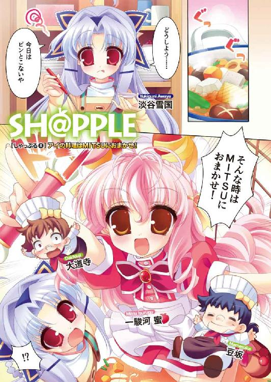
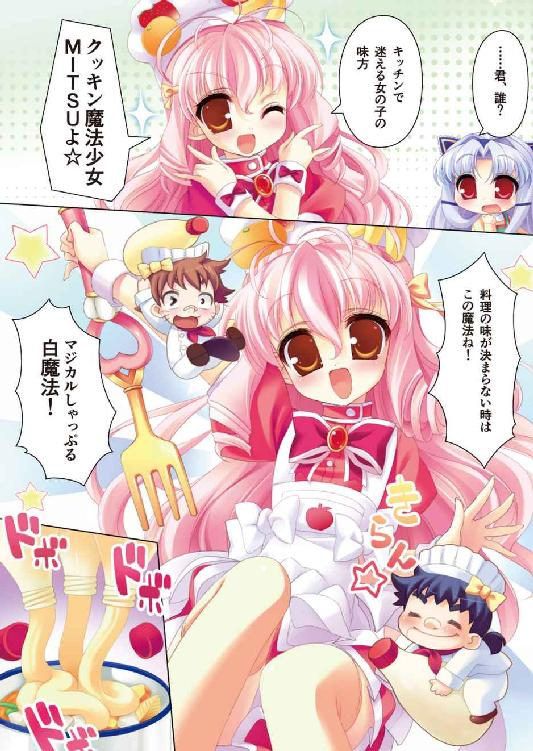
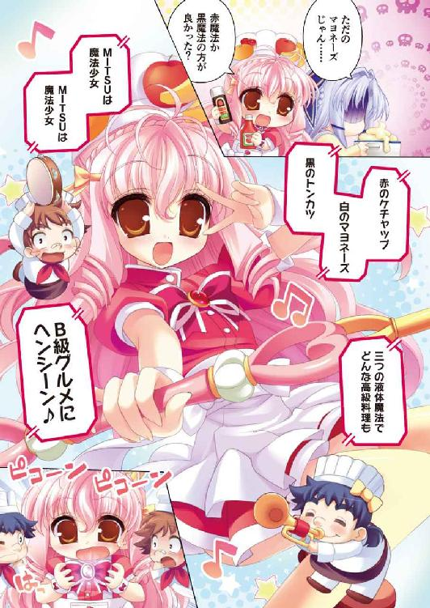
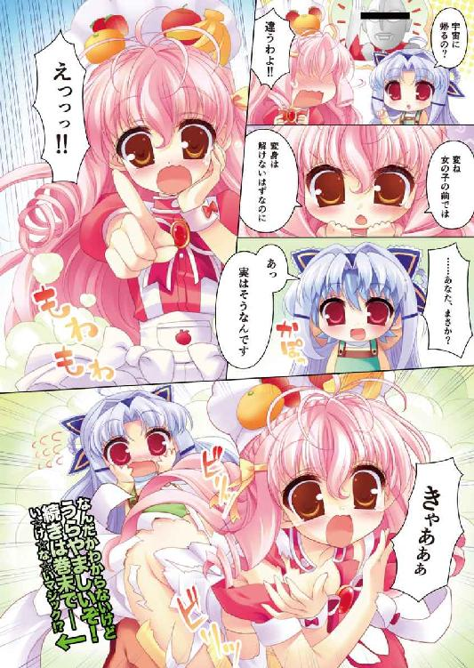
本作品の全部または一部を無断で複製、転載、配信、送信したり、ホームページ上に転載することを禁止します。また、本作品の内容を無断で改変、改ざん等を行うことも禁止します。
本作品購入時にご承諾いただいた規約により、有償・無償にかかわらず本作品を第三者に譲渡することはできません。
本作品を示すサムネイルなどのイメージ画像は、再ダウンロード時に予告なく変更される場合があります。
本作品は縦書きでレイアウトされています。
また、ご覧になるリーディングシステムにより、表示の差が認められることがあります。
口絵・本文イラスト よう太
ＣＯＮＴＥＮＴＳ
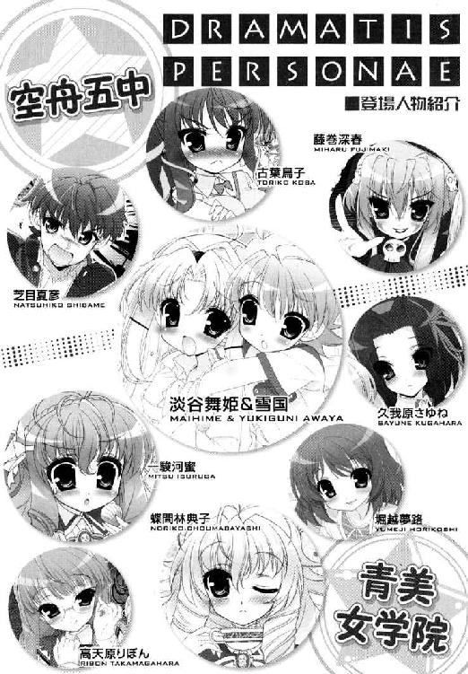
序章
──空が、オレンジ色だ。
淡谷舞姫は、寝間着姿で屋上にいた。だだっ広いコンクリートの上に、ぽつんと一人、身を低くして空をながめていた。
いわゆる夕焼けというやつかもしれない。
ぴんぽんぴんぽん、ひっきりなしなナースコールや医師の呼び出しも、屋上にいれば聞こえてこない。病人やけが人が集まる病棟というものが、案外とうるさいことを、舞姫は入院してはじめて知った。
怪我をしたのは数日前。
無性に一人になりたくて、表の空気が吸いたくて、そうなるとベッドを抜け出し柵の前でヤンキー座りをすることになる。あいにくと本当に煙草を吸うほどグレる気はないけれど。
それでもせめて──。
「うまい棒が食べたいなあ......」
「意味わかんないよ舞ちゃん」
ぼんやり後ろを振り仰げば、弟が制服姿で立っていた。
空舟五中の冬服だ。すっきりと切った短髪に、どことなく優等生ぜんとした黒い学ラン姿がはまっている。ヤンキー座りな舞姫を見下ろし、雪国はやわらかく微笑んだ。
少し前の自分の姿が、鏡を見るようにそこにいた。
「着替え、もってきた」
「ありがと」
「そんな薄着じゃ風邪ひくよ。入院してるのに」
「明後日には退院だよ」
「それが延びたら嫌でしょって話」
ほら、これ着て。雪国はそう言って、持参した紙袋からフリースを取り出す。
舞姫はおとなしく受け取った。袖を通さず肩にかけるだけにしたら、ますますヤンキーくさいよと言われた。
「一応、青美の箱入りお嬢様らしいんだけど」
「お嬢様にもいろいろあるって知ってるけどね」
「まったくだね」
夕焼けが、刻一刻と色を変えていた。西の空は赤く燃え、東の空は月と夜の匂いが立ち上る。
「......じゃ、僕、そろそろ行くね」
「うん」
「図書館に本返さないといけないから」
「うん」
「また明日」
舞姫は空を見ていた。
やがて首が痛くなって下を向けば、別れたばかりの弟が、地上を歩いていくのが見えた。
病院内の車寄せを抜け、警備員の詰め所を通り過ぎて国道へ。
歩道に足を踏み入れたとたん、門の陰から人が飛び出してきた。
驚いたのは弟の方だろう。遠目にも目立つポニーテール。あれは空舟五中の女子の制服だ。名前もわかる。古葉鳥子。顔を真っ赤にしながら弟に話しかけている。弟がどう反応しているかは、舞姫のいる角度からはわからない。
やがて二人は肩を並べて、同じ方向に歩き出した。
「ボクって......なんだ？」
答えはない。
学校交換をはじめたばかりの頃は、こんな結末が待っているとは思わなかった。
弟の学校に行って、あそこにいた彼女と同じ放課後を過ごしたこともあったのだ。
泣いて、笑って、怒られて。取り戻せない二学期の記憶を、舞姫は振り返りはじめた。
にぶい、脇腹の痛みとともに。
第１章 ギブミー プレゼント！
プレゼント！
とうとう下校時間。
呼び出したのは近所の公園。
──トクン。
──トクン。
あたしの心臓、さっきから鳴りっぱなし。
気づいてるかな。
こんなにどきどきしてるの、クニユキにばれたら、恥ずかしくて死んじゃうよっ。
「あのね、クニユキ！ これ、誕生日プレゼント！ 」
あたし、トリコ。
今日は一生懸命ね、がんばったの。
編み物とか。
ぜんぜん柄に合わないかもしれないけど。
凝ったアンゴラ編み、とか。
そういうのも無理だったけど。
無難な表編みだけの、プレーンな白いマフラーになっちゃったけど。
みんなみんな、クニユキにもらってほしかったの。
もうただのケンカ友達じゃイヤ。
イヤだからっ。
「僕に ......？」
クニユキ、すっごく驚いた顔。
ああ、やっぱりあたしじゃ変なの、かな？
クニユキのカノジョに、なれない、かな ......？
クニユキは、小さくリボンを巻いただけのマフラーの、リボンをほどいた。
「あったかいよ 」
ふわっと、マフラーがクニユキの首にかかる。
クニユキ、笑う。
きゅんとくる。
オーランド ・ブルームみたいなサイコーの笑顔。
ああ、やっぱり好き。
好き。
大好きっ。
「トリコの気持ちが、ね 」
──え？
クニユキ、自分で巻いてるマフラーを。
あたしがあげたマフラーの端っこを。
くるんって。
あたしの首にもかけたんだ。
「ありがとう。大好きだよトリコ 」
そのままぎゅーって。
あたし、クニユキに抱きしめられてた。
心臓、壊れそう。
夢？
ううん。
夢じゃない。
落ち葉がひらひら、ブライダルシャワーみたいに。
あたしたちの周りを舞い散った。
北風が吹いても、寒くない。
だって。
あたしとクニユキは、ね。
世界で一番！
ハッピーなカップルになったんだっ。
「クリスマスは一緒に過ごそう 」
「うんっ 」
「ディズニーランドでパレードもね 」
うんうん！
「あたしも、好き。クニユキのこと、だいだいだーい好き！ 」
「──なにがだーい好きよこのアマあああああああああああああああ──っ！」
古葉鳥子は、思わず書きかけのページをくしゃくしゃにむしってしまった。
とことんまで浮ついたテンション！ 次いでむりやり溶かしたアイスみたいに甘ったるい文体！ ボツだ。ボツだ。みんなみんなボツだボツだボツだーっ。
むしって丸めてゴミ箱に投げ捨ててから、あわてて背後を確認する。無音。よかった。現在時刻は午後十一時半。奧の和室で休んでいるはずの両親は、娘の不審な行動を確かめにやってくるような真似はしないようだ。
鳥子はほっと胸をなでおろし、勉強机の椅子の上でまぶたをおさえた。
（あー、危なかった......）
だてに優等生はやっていない。自分でボツにした小説風に言うなら『あたしトリコ。十五歳！ 空舟五中じゃお堅い生徒会長をやってるの！』とでもいうべき鳥子である。親や教師に干渉されないため、内申点目当てで生徒会に入って、成績も上位をキープして、そうして死ぬ気で守ってきた趣味が『小説を書くこと』だった。
けれど。肝心の作品の出来ときたらどうだろう。
「淡谷先生に叱られるわよこれじゃ......」
びりびりのノートの切り口を、人差し指で弾く。ため息が出た。
ミステリ作家の『淡谷猶彦先生』は、鳥子がずっとあこがれ尊敬してきた大先生だ。
ひょんなことから先生の教えを受ける機会に恵まれることになったが、実際に書きためてきた創作ノートを見てもらったら、難しい顔で言われてしまったものだ。
『ちょいと背伸びのしすぎだねえ。もうちょっと身近な話を書いてみなよ』
イマイチ、らしい。
必死になって調べて書いた時代小説やファンタジー小説は、理屈っぽくて面白みに欠けると思われたようだ。それなら、と。普段あまり取り組んだことのない『現代ラブコメ』に挑戦しているのだが、結果は......あまり芳しくない......気がする。
ヒーローとヒロインのやりとりが噓っぽい。恋するトリコ（あくまで便宜上よ便宜上！）の思いはもっと切実なはずだし、プレゼントをもらったクニユキ（これも深い意味はないからね！）も、もっと上っ面じゃないかっこよさが出ないものだろうか。
『観察しな、鳥ちゃん。リアリティが欲しいならね、それしかないよ。なんならうちの孫、押し倒してもいいからね』
ぼっと頰が赤くなった。
まったく淡谷先生ときたら、なんて大胆なアドバイスまでくれるのだ！
（た、たしかに淡谷はちょっとモデルにしてるけど！）
あくまでそれは、ヒーローのイメージが沸かなかったから参考にしただけというか。思いついたのが彼しかいなかったからというか。
ぐるぐると勝手に盛り上がっていく気持ちをおさえて、回転椅子をぐるぐる回す。座る鳥子の体も、ぐるぐる回る。
──リアリティ。恋をする男女のリアリティ。
観察のチャンスは、実は、あるのだ。
明日の三・四時間目は、家庭科の調理実習がある。
マフラーは無理でも、実習のメニューはクッキーだ。
ここで他の女子と同じように、実際にあげてみればいいのではないだろうか。あのむかっ腹がたつモテキングに。
この間の劇の買い出しの時のように、意地っ張りの噓でごまかしたりしないで。素直にハイと渡してみたら、あいつはなんて言うだろう。
鳥子は回転する椅子の上、ひとしきり考えこんだあと、いそいそと創作ノートを閉じ、鞄から家庭科の教科書を引っ張り出した。明日やる箇所の予習をはじめる。
「......えーっと。材料。四人分。小麦粉一二○グラム......バター六○グラム......」
家庭科なんて、入試に直接関係ない科目。いつもは適当にテストで点を取ることだけ考えてきたけれど。いざ淡谷雪国にあげるとなれば、半端なものは作れない気がした。
そして鳥子は、運命の放課後を迎えた。
誰もいない進路学習室で、実習で作ったクッキーを、慎重にラッピングし直した。
服、問題なし。髪、いつも通りのポニーテール。
（──よ、よし）
問題のクッキーは、鳥子の手の中にちゃんとある。家からこっそり持ってきた色つきの紙ナプキンに包んで、レース模様のビニールバッグに詰めたあと、綺麗なリボンで口も結んだ。見た目だけならそう悪くないはずだ。味だって家庭科の先生が『優』をくれた。
あとは渡しに行くだけ。
（ふ、ふふふ、深い意味は、ないんだから。これがべつに、本当の告白ってわけじゃ、ないんだから──）
ひたすら見えないなにかに向かって言い訳しながら、ドアを開け廊下へ出た。そのまま淡谷雪国がいるはずの、三年Ｅ組の教室へ向かおうとした──その時だ。
「古葉さん！」
「きゃっ！」
鳥子はすっとんきょうな声を上げてしまう。
当の淡谷雪国が、鳥子めがけて駆けてきたのだ。
「ごめん古葉さん。ちょっと隠れさせて」
「え？ え？ え？」
小柄で、どちらかというと可愛らしい顔立ちの少年は、鳥子をふたたび学習室の中へ引き込むと、喋っちゃだめとばかりに口をふさいでくる。ぴったり横から抱きつかれたような状況で、密着具合に頰が赤くなりそうだった。そんな鳥子たちとドア一つ挟んで、同じ三年の女子生徒が、ばたばたと五人ばかり突っ走っていく。
「もう。淡谷くーん！」
「せっかく作ったんだから。逃げないでよお！」
廊下の端で、ついに目的の人物を見失ったらしく、ぷりぷり怒りながら角を曲がっていく気配がした。
「あの、あ、淡谷......？」
「............ふー、やれやれ。助かった......」
やっと手を離してくれた。おそるおそる振り返ると、大胆な真似をした淡谷雪国は、危機は去ったとばかりに額の汗をぬぐっている。
「ありがとう古葉さん。おかげでひどい目に遭わないですんだよ」
「ひどい目？」
「クッキーだよクッキー！」
どきりとした。
「ここ一週間さ、三年の家庭科って調理実習でしょう？ もー、Ａ組からＥ組まで日替わりで女子の『あたしのクッキー食べてー』攻撃だよ。勘弁してよ食べきれないよそんなに」
「そ、そうなの......？ そんなにいっぱい貰ってんの......？」
「もうダメ。バターの匂い嗅いだだけで死にそう。バタン」
顔が青ざめ、かたかた指先が震えている鳥子に、淡谷雪国はまるで気づいていない。
こちらの手には、今まさにあげようとしていたクッキーの袋があるというのに。
「あっ、まさか古葉さんも実習のクッキーとかあげる人──うぎゃっ！」
「そんなわけないじゃない！」
ばっしんと。
「ばっ、ばっかじゃないの？ ぜんぜん関係ないわよ！ これはね、漬け物よ漬け物！ お漬け物よ！」
思わず鳥子は、手元のプレゼントを投げつけてしまっていた。
ついでに学習室の扉を開け、血眼になって彼を捜しているはずのすべての女子に向かって、
「淡谷雪国ならここにいるわよ──────────────っ！」
などと力のかぎり絶叫してしまった。
廊下。教室。階段にトイレ。ラブゲッターな牝豹たちがいっせいに色めき立つ。「ほんと？」「マジ？」「サンキュー古葉っち！」──逆に淡谷雪国の方は蒼白だ。
「ひ、ひどいよ古葉さん！」
「ふん！」
鳥子は廊下を歩き出した。
「ねえ淡谷くん！ あたしのクッキー食べてよ！」
「わたしのも！」
「だからもう無理って言ってるでしょーが！」
まったくあのチャラ男め！
菓子の山に埋もれて死んでしまえ！
＊＊＊
逃亡のツケは、体で支払わされた。
「......ありがとう。すっごい、おいしかったよ......」
舞姫は学校中を追い回されたあげく、校舎裏の自転車置き場へと追い詰められ、実習のクッキーを試食させられた。甘いのと焦げたのと、味が薄いのと半生のと、どれでもないもので五人分。
そうしないと離してくれなかったのだ。
お礼の言葉を引き出して、牝豹の群はようやく満足したようだった。
「ほんと淡谷くんって遠慮がちっていうかクールよねー」
「そこがカワイイんだけどねー」
ねーねー言いながら去っていく。
しかし、だ。こちらが女子に対してよそよそしくなってしまうのも、ある意味仕方のない話なのではないか？
（だってボク、男じゃないもん......）
ばっさり切った髪に学生服。見た目はどこから見ても双子の弟『淡谷雪国』だが、中身はれっきとした女の『舞姫』である。一時は中断していた学校交換も、二学期になって復活し、ふたたび空舟五中にやってきているのだ。
男になっても女になっても、女の子に追い回される宿命だけはなかなか変えられないらしい。
もはや部室に顔を出す気力もなくなった舞姫は、胸焼けが止まらない体をおさえ、家に帰ることにした。
ドアを開けるなり、明るい声が響いた。
「あっ、舞ちゃんおかえり！ クッキーあるよ！」
あやうくゲロりかけたではないか。
リビングにたどりつくと、舞姫のかわりに青美女学院に行っているはずの弟が、カツラにスカートを身につけた『ニセ舞姫』の格好のまま、もぐもぐとクッキーを食べていた。ローテーブルの上には、クッキーを包んでいたらしいカラフルなラッピングペーパーが、山となって散乱している。口の端にクッキーかすを付けたままの笑顔は、どこまでも朗らかに澄みきっていた。
「信じらんない......それ青美で貰ったの？」
「うん！ 今日、調理実習だったんだ」
どこかで聞いたような話である。
「いっぱいあるから、なかなか食べきれなくてさ」
「少し断りなよ。きりないよ」
「なんで。できないよそんなの」
びっくりしたように目を丸くされてしまう。
「おいしくないのもあるでしょ」
「あるけど。おいしいのもあるよ」
「お人好し」
「だってせっかくくれたんだよ」
本当に、お人好しもきわまれりだ。
あまり女の子にかまわれた経験のない雪国は、青美女学院における一方的な『もらってください』攻撃も、好意は好意だからと断ることができないようだ。
「......それならユキグニ、これも食べてあげたら？」
舞姫は言って、サブバッグからプレゼントの袋を取り出してテーブルに置いた。
古葉鳥子が、ニセ雪国な舞姫に投げつけてきたものだ。これはお漬け物よと言い張りながら、眉間に皺を寄せ真っ赤な顔をしていた。
「なにこれ？ クッキー？」
「お漬け物らしいよ」
「......粉々のクッキーにしか見えないんだけど......」
「古葉さんの自己申告だから」
古葉さん、という言葉に、今度は雪国が驚いたようだった。
なにげなく捨てかけていたプレゼントのリボンを、あわてて戻して皺を伸ばしはじめたり。粉々になったクッキーのかけらを、わざわざ指でつまんだり。にわかに動作が落ち着かなくなる。
「へー、そ、そうなんだ。古葉さんが、僕に......」
「むー」
「む？」
「ユキグニの浮気者......」
むかむか。むかむか。
猛烈に胸焼けがするのは、きっと部屋いっぱいにたちこめるバタークッキーの匂いに違いない。
「一駿河蜜に言ーつけてやるっ」
「はっ、ち、ち、ちょっと待ってよ舞ちゃんっ！」
＊＊＊
「そうよ、そうよ。慣れないラブコメなんて書こうと思ったのが間違いだったのよっ」
一方、古葉鳥子。
彼女も自分の部屋に閉じこもり、ジャージに眼鏡のだっさい創作スタイルのまま、憤りのすべてを小説にぶつけていた。
「あたしも、好き。クニユキのこと、だいだいだーい好き！ 」
トリコが愛を訴えた、刹那。
クニユキが、唐突に笑い出した。それはまさに、運命を変える哄笑だった。華奢な学生服に包まれた喉を痙攣させ、胸をそらし、戸惑うトリコのことを突き飛ばす。
「クニユキ！ 」
「つまらない芝居はここまでだ、毒婦！ その服の下に仕込んだモノを見せてみろ！ 」
知らず、トリコは胸中で呟いていた。 ──ああ、なんて哀れな人。ここに来てすべてに気がつくなんて。なにも知らずに消滅した方が、よほど幸せな最期だったでしょうに。
トリコは、拒絶され地面に横座りの姿勢のまま、制服のスカートをまくった。逡巡もなくあらわになった、真っ白い右脚の付け根近く。ホルスターに拳銃が留めてある。
クニユキが、唇を歪め舌打ちした。
「その銃。 『北 』のスパイだな ......」
「ええそう。これはあたしの同志を救うため。そして、あなたの同志を撃ち殺すための銃よ！ 」
トリコは、ホルスターの銃には手をかけなかった。かわりにブレザーの左袖に仕込んだナイフをすべり落とし、クニユキに向かって一閃させる。
「があっ！ 」
まるで赤い椿が咲くようだった。
たしかに心をこめて編んだ白いマフラーは、秋の風に吹き飛び、その場で鮮血の色に染まって戻らなかった。
「さよなら ......あたしの青春 ......」
「ばか！ 淡谷の大ばか！ どうなっても知らないんだから────────っ！」
そうして。狂乱のまま一夜明けると、多少は冷静になることができた。
ちゅんちゅんと、朝のスズメが鳴いている。他の生徒たちでざわめき混み合う昇降口で、淡谷雪国の顔を見かけた時、さすがにあれはなかったなと申し訳なくなった。
鳥子が近づくと、少年は少々不機嫌そうだった。
「......淡谷、その、昨日はいろいろごめんなさい」
「いいよー、べつに。クッキー、粉々でもおいしかったって、どっかの浮気者が言ってたし......」
「違うのよ！」
鳥子は顔をおおった。
「いくらお話の中でも！ あそこまで酷い目に遭わせるつもりはなかったの！」
「は？」
「まさかあそこで『北』の科学者がしゃしゃり出てくるなんて。トリコも命令には逆らえなくて......クニユキ、監禁されて薬と機械の洗脳で第二の人格がオープンセサミしちゃって異能バトルに......もうこれが新しい抗争の火付け役になって、再会の舞台は五年後の魔都・香港なの......」
「............へ、へー。なんかよくわかんないけど、詳しい話は聞かない方がよさそうだね......」
「その方がいいわ。あたしったらカッとしちゃって。一晩でノート一冊書き潰しちゃった......」
創作スイッチの業の深さと恐ろしさを、淡谷雪国も感じているのだろうか。青ざめ語る鳥子のことを、微妙に一歩引いた姿勢で見守っている。
「お詫びになんでもするから。クッキーがイヤならなにがいい？ 香港飲茶？ 肉まん？」
「そんなこと言われてもなあ......」
言葉を濁す少年は、ふとなにか思いついたようだった。
ゆっくりと細められた瞳は、まるで悪戯を思いついた小学生のよう。そのくせ少女と見まがうばかりの小さな顔が、鳥子の耳元へと近づいてくるのだ。こっそり、秘密の打ち明け話でも囁くように。
「それならさ、古葉さん。放課後ちょっとつきあってよ」
──ドキッとしたのは本当である。
デート？ これは本当にデートなの？
授業が終わったあと、淡谷雪国が連れてきたのは、国道沿いの大型スーパーマーケットだった。
「あ、淡谷ね。制服で寄り道って校則違反じゃ......」
「じゃ、やめる？」
「誰もそんなこと言ってないじゃないっ」
鳥子は眉間に皺を寄せた。
──あなたの暮らしのＢマート～。
──みんな幸せＢマ～ト～。
気の抜けた炭酸のようなスピーカーから流れるＢＧＭは、もはや耳に馴染むを通り越して中毒になってくる。フロア内の装飾は、どこもかしこもシンボルカラーの黄色が採用されていて、マスコットのバナナ『バナＢくん』は、店員のエプロンにプリントされたり、着ぐるみになってお子様に風船を配っていた。
ここから果たして、なにかが起きたりするのだろうか──？
広い駐車場を備え、衣料品から電化製品までなんでもそろうということで、ここＢマート空舟店は、どちらかというと週末に家族連れがにぎわうスポットだ。鳥子もときどき買い物に連れ出されることがある。
確かに三年生になっても寄り道禁止なんて校則、律儀に守っている人間はほとんどいない。駅ビルやバス停前の井村屋に行けば、けっこうな数の五中生に出会えるだろう。
しかし去年までの淡谷雪国は、鳥子と同様、その律儀な約束を厳守してきた人間の一人ではなかっただろうか。空舟五中のモテキングは、もはやなんの屈託もなく明るい店内を歩いていくようだ。
「青美の制服じゃ、さすがにここまで寄り道できないもんなあ......」
「え？」
「いやいやこっちの話」
そして少年は、とある場所で立ち止まった。
「ゲームをしようよ。楽しいの」
そこは、一階フロアの一角に作られた休憩コーナーだった。
テナントのＣＤショップと本屋に囲まれ、二階までの吹き抜けになった天井の下、木製のベンチがいくつも並んでいる。片隅の大型液晶テレビは、いつもなにかのキャンペーン映像を流しているし、週末にもなれば、買い物に疲れた子供やお父さんが、そこで缶ジュース片手にぐったりしている姿がよく見られる場所だった。
彼はそのベンチに腰掛けると、鞄からペンとルーズリーフを取り出した。
「『プレゼント・ゲーム』っていうんだ。今からここに、ボクがいま一番欲しいものを書くよ？」
「欲しい、もの......？」
「ほら。見てたら書けないじゃないか。ちょっとだけ後ろ向いてて」
あわてて鳥子は、背中を向けた。向いた先の子供連れと目が合って、少しだけばつが悪かった。
「値段は......そうだね。僕らのお小遣いでまかなえるもの。三百円以内？ それで、かならずこの店のこのフロアにあるもの。十分待つから、挑戦者がそれを推理して探してくるんだ。ヒントは一つ。『バがつく幸せなもの』......っと」
バがつく幸せなもの。
どういう意味だろう。
「はい。いいよ。これ、ゲームのあいだは古葉さんが持ってて。途中でずるして開けちゃダメだからね」
振り返る鳥子に、淡谷雪国が折りたたんだルーズリーフを渡してきた。飲み込めないなりに受け取ると、まだかすかにのりの湿り気が残っていた。上下をのり付けして封印してあるのだ。
どうやらこれの中に、ゲームの答えが書いてあるということらしい。
「ボクのことは、キミがよく知ってると思うしさ。ね？」
「あたしに、できると思ってるの......？」
「そりゃもう。でなきゃこんなことやらないよ。ソンケーする古葉さんだもん」
一瞬、スパイ編に入る前の『クニユキくん』のような微笑でそう言われ、鳥子は『きゅん☆』と言葉に詰まってしまったのだ。
尊敬だなんて、そんな。
ものすごい殺し文句を──。
「......ふ、ふん！ わかったわよやるわよ！ やればいいんでしょ！ 悪いのはあたしだし。ああもうめんどくさいわね！」
「はい残り九分五十七秒～」
捨て台詞とは裏腹の高速移動で、売り場へと歩きだした。
『バ』がつく幸せなもの！
『バ』がつく幸せなもの！
＊＊＊
時計の針は、五分が過ぎた。
ニセ雪国な舞姫は、休憩所の片隅で、鳥子が帰ってくるのを待っていた。
彼女は今頃、どこでなにを探しているだろう。
手持ちぶさたな時の癖で、舞姫はついつい手足のストレッチをはじめてしまう。親にバレエを習わされていたおかげで、柔軟性だけは今でも人並み以上にあるのだ。
ぎゅっ、ぎゅっ、ぎゅっと。周りに人が少ないのをいいことに、ベンチの上で思いつくかぎりの筋を伸ばしてたたんで。それでもけっきょく、時間は余ってしまった。
（──それで、ゲームでもやろうかってユキグニが言ったんだ）
懐かしい。
もともとこの『プレゼント・ゲーム』は、舞姫と雪国が小学生の頃、退屈しのぎで考えた遊びなのだ。
このＢマートの、簡素なベンチの片隅で。
『バ』がつく問題のオリジナルを考えたのも、弟の雪国だった。
──五年前。
「ひまあ」
小学生の淡谷舞姫は、心の底から暇をもてあましていた。
雨の日の日曜日だった。
その頃はまだ、両親が日本にちゃんといた。家でお留守番をしているよりはおもしろかろうと、弟と一緒にＢマートまでついてはきたが、やっぱりすぐに飽きてしまったのだ。
「ねえユキグニ」
「なに？」
「............つまんない」
「つまんない？」
「飽きた飽きた飽ーきーたー。しりとりもなぞなぞも立ち読みも座り読みもお総菜の試食もみんなみんなやっちゃったよー」
「舞ちゃんはもうクラゲの人みたいだねえ」
舞姫は、休憩ベンチに、仰向けのまま寝そべっていた。ちなみに体は上下逆さま。キュロットスカートの脚だけが思いついたように動いて、形の良い膝をおでこに付けたり百八十度開脚したりという、実にアクロバティックかつ不思議なポーズをしていたので、通りすがりの買い物客が、不思議そうに足を止めたりもしていた。
だが買い物中の親はいっこうに戻ってこないし、店の外は土砂降りだし、どうすればいいのかわからなかったのだ。
「そんな退屈なら、バレエのお教室やめなきゃ良かったのに」
「それとこれとは話がべつなの」
舞姫は、逆さまのまま頰をふくらませる。
ちょうどその頃、ずるずると続けてきたバレエのお稽古事もやめたばかりだった。舞姫としてはすっきりしていたが、続けてほしかった母上の嘆きはそれなりなもので、まだココロの傷は癒えていなかったのである。
体を動かすのは楽しかったが、バレエの先生が繰り返しおっしゃる「もっと優雅に。エレガントに踊りましょうね舞姫さん」が、舞姫にはさっぱりわからなかったのだ。
「......ユキグニは、なにしてるの？」
「ゲームの準備」
退屈を体で訴える舞姫と違い、弟は手段でどうにかしようとすることが多い。
見ればリュックサックに詰めて持ち歩いていた折り紙を、何枚かベンチの上に広げはじめていた。ただの工作ならつまらないが、この時の舞姫はピンときた。ベンチの板を両手で支え、倒立から起きあがる要領で両足を地面へ戻した。
「なんか考えたの？」
「プレゼント・ゲームって言うんだ」
彼の考えたルールは単純だった。
まずは出題者が、いま欲しいものを紙に書く。ヒントを一つ出す。挑戦者がそれを探して当てる。回答の紙を開いて答え合わせをする、というものらしい。
「ふーん......」
なにせ品物だけは、舞姫たちのまわりに、売るほどたくさんあったのだ。
「ね。どう？」
弟の申し出に、舞姫は、一も二もなくうなずいた。
お金があるわけではないから、実際に買うのはなし。『買ったつもり』で指さすだけだったが、それでも十分に楽しかったのだ。
「──『ド』がつく動いて元気のいいもの。犬でどう！」
一階、ペット売り場。
そこではたくさんの子犬が、ケージの中でわふわふと、団子のように戯れていた。雪国は自信満々に指をさすが、舞姫はのりづけ部分を剝がして回答を見せてやる。
「はずれ。正解はこれ」
「ドジョウ!? そんなのどこにいるの」
「鮮魚コーナーに泳いでたよ」
やられたと弟の悲鳴。舞姫は大笑いしたものだ。
「ドジョウ食べるの？ ほんとに欲しいの？」
「食べてもいいし、飼ってもいい」
「僕はやだからねっ！」
「おとーさんに頼もうかなあ。クリスマスプレゼント......ドジョウ......バケツいっぱい......」
「いーやーだあああああ！」
外れてばかりの雪国は、なかなか出題者の方に回れなくて、半べそをかくことになった。
「次は僕！ 僕がいい！」
「まだユキグニ、当ててないじゃん」
「たまにはいいじゃないかあ。舞ちゃんヘンなのばっか欲しがるしさ......」
本気で泣きそうだったので、舞姫は、仕方ないなと出題役を譲ってあげた。
自前の折り紙を前に、機嫌を直した雪国が、ほくほくと口許を緩ませている。
「ふふふ。なにがいいかなあ......」
その優柔不断な性格をいかんなく発揮して、たっぷり悩みに悩んだあと、やっと折り紙に希望の品を書き込んだようだった。
「ほら。早くしてよ」
「ごめんね。で、僕のヒントね──」
雪国は、両手を筒の形にして、舞姫に耳打ちした。
「......『バ』がつく幸せなもの？」
「そ。僕がいま欲しいの。あててみて？」
いたずらっぽく微笑むその顔に、舞姫のチャレンジ精神も大きく煽られたのだ。
歩きだす中、真っ先に思いついたのは、『バナナ』だった。
なにせ、場所はＢマートだし。店のあちこちがバナナ色だったし。バナナの形のバナＢくんが、入り口で風船も配っていたし。どうしたって頭に浮かんでしまう。黄色くて長くて甘いやつ。
「それにするの？」
野菜売り場のバナナの山を前に、じっと立ち止まっていたら雪国に聞かれた。舞姫は慌てて首を横に振った。まだまだ、制限時間内は考えるのだ。
これがただのなぞなぞじゃないことを忘れてはいけない。読むのである。弟が欲しいもの。好きなものを見つけなければならないのだ。
犬でもない。
ドジョウでもない。
（おはな？）
生花コーナーの前にきたとき、舞姫はやっとピンと来た気がした。文字通り花が咲いた感覚だった。
「これ！ 『バラ』のバ！」
ミニ薔薇の鉢植えを指さして、舞姫は叫んだ。
「ね、ね、当たりでしょ」
その年は、雪国の園芸元年とも言えた。クラスで『しいく・さいばい係』に選ばれたという彼は、先生から管理を任された菊の鉢植えを通じて、すっかり土いじりにはまってしまったのだ。
これはもう絶対当たりだろうと思った舞姫は、雪国がなにかを言うより前に、封をしてあった折り紙を破った。
「えーっ？」
けれど。そこに書いてあったのは『バニラアイス』だった。
「ざんねーん。はずれだね」
残念というより、腹がたった。
ずるい。これはずるい。こんなありきたりの回答より、自分の『バラ』の方が、よっぽど気がきいて雪国らしいだろうに。
「ヘンだよ、ヘン。ユキグニ、うそ書いちゃだめだよ」
「うそじゃないよ」
「だってユキグニ、そんなアイスとか好きじゃないじゃん」
「でも舞ちゃんが好きだよ」
まさに不意打ちだった。
舞姫は、地団駄を踏む足を止め、まじまじと弟の顔を見返してしまう。
「元気出して、舞ちゃん。アイス好きでしょ？ 一緒に食べたかったんだ」
くったくのない返事と、人のいい笑顔と。
ずるいよなんて、言える気分になれなかった。
──そして、現在。
（べつにあれは、バニラアイスでもバームクーヘンでも、なんでも良かったんだ）
落ち込んでいる舞姫と一緒に、分け合うことができるものなら。
あのゲームの何がおもしろかったかと言えば、出題する側も挑戦する側も、なぜそれを選んだのかの『気持ち』がわかることだったのだろう。
素直に自分の欲しいものを、好きなように書いた舞姫。こんな時でも自分の欲しいものより、相手を喜ばすことを優先してしまう雪国。舞姫は、弟がどういう人間なのか、その時はじめてわかったような気がしたのだ。
今、舞姫はニセ雪国になって、鳥子に同じ質問をしている。どうしてそれを選んだのかを聞こうとしている。はたして五中の生徒会長の彼女は、淡谷雪国のことをどれだけ知っているだろう？
単なる連想ゲームで、店のバナナをむしってくるようでは論外。
自分の好みを押しつけるような真似も、クッキーの押し売りと変わらない。
多少は相手のことを考えて、雪国の趣味の花関係のものを持ってくるなら、まあセーフ。
もしあのお人好しな性格の裏の裏を読んで、舞姫でも当てられなかった本当の正解を引き当ててしまったら──？
（まさか）
どきりとして、舞姫は思わず肩をすくめてしまう。
今から割って入りましょうというのだから、それなりのものは見せて欲しいよねと思いつつ。なぜか泳いでいたプールの底が見つからないような、得体の知れない不安感にもかられてしまう。
残りは、あと三分──。
＊＊＊
『バ』のつく幸せなもの。『バ』のつく幸せなもの。『バ』のつく幸せなもの。
鳥子は早足にフロア内を歩きながら、同じフレーズばかりを頭の中で回していた。
バケツ。バカンス。ババロア。バルセロナ。
──あなたの暮らしのＢマート～。
──みんな幸せＢマ～ト～。
（バナナ？）
バナＢくんの黄色いロゴを見た瞬間、鳥子は反射的にひらめいてしまった。
見回せば、生鮮食品の売り場はすぐ目の前だった。黄色いバナナも山積みだった。しかし、そのままふらふらとバナナの房に手を伸ばしてしまった瞬間、横から激しいタックルがかかった。
（はあっ!?）
なにがなんだかわからなかった。気づけば鳥子は売り場の前から吹き飛ばされ、つるつると光るスーパーの床にカエル座りをしていた。
「そこのあんた！ 買うなら買う！ 買わないならどく！」
「邪魔なのよぼさっとして！ いま何時だと思ってるの!?」
とりあえずわかることは、さっきまで鳥子がいた位置に主婦のおばさんがいて、せっせとバナナを買いあさっているということだ。隣のリンゴの詰め放題コーナーでは、さらに激しい死闘がはじまっている。
「......タイムセール......」
夕方。夕飯の準備。
ここから約一時間、生鮮食品売り場一帯は主婦たちの戦場になるのだ。うかつに近づいてはケガをすること必至。
（そもそもＢマートでバナナって、そんな単純な話じゃないわよね......）
一撃で現実に引き戻された鳥子は、硝煙の匂いが立ちのぼりはじめたバナナ売り場を引き上げた。
こちらが考えなければならないのは、あくまで淡谷雪国が欲しいものだ。そこを信頼してくれたから、こんな買い物ゲームを持ちかけてきたのだろうし。
彼が好きなものはなんだろう。
地味でおとなしい雰囲気の優等生。三年Ｅ組のクラス委員。ペーパーテストの点数だけはトップクラス。ここ数ヶ月で言うなら、急激にもてだした五中のモテキングでもある。
「バラ、とか？」
比較的まだ人の少ない、生花店の前で足が止まった。
彼の園芸好きは、鳥子もなんとなく知っている。今のようになる前から、園芸部の女子や顧問とだけはよく口を利いていたし（それをやきもき見てもいたし）、以前に空舟エンジョイ委員会と一緒に遊びに行った時は、家の庭中が植木だらけで「ちょっとやり過ぎ？」と思ったものだ。
書いた小説の中でも、『クニユキくん』のお花好きなエピソードは、隠し味に取り入れたぐらいなのだ。
（よし）
これだ。これで行こう。
一番安い切り花のバラを、ラッピングもそこそこに受け取って、鳥子は休憩所へ走った。
だが、いざ休憩所のベンチに座る『淡谷雪国』を見かけた瞬間、鳥子は立ち止まってしまったのだ。
彼はベンチの上で一人、無造作にあぐらをかいている。
これで本当にいいのか、という思いが、どうしても消えなかった。
──観察しな、鳥ちゃん。
──リアリティ出したかったらね、それしかないよ。
たしかにそう。先生の言う通り。こうして生身の少年を、一歩離れた位置で見つめていると、目線や指先の動き、わずかな表情の変化に合わせて、彼の心の動きが、本当はなにに心を奪われているのかが、はっきりわかるような気がしたのだ。読める。読めるわ。その確信は、鳥子を力強く、新しい地平線の先へと押し出していくかのようだった。
（そうよ。これよ。これなのよ先生────っ！）
ギャラリーも気にせず拳を突き上げ。古葉鳥子十五歳、Ｂマート秋の覚醒だった。
＊＊＊
「──タイムアップだ」
持ち時間の十分をフルに使って、古葉鳥子は舞姫の前に現れた。
唇を固く引き結び、一歩進むごとにポニーテールが左右に揺れ、まるで果たし合いにでも臨むような凛々しさだった。
その手に持っている、透明なセロファンに包まれた赤いバラを見た時、舞姫はどこかほっとして仕方なかった。
（やっぱり、そうだよね）
同じなのだ。それ以上の考えなんて、そうそう出てくるはずがない。
「それ？ 古葉さんが選んでくれたのって──」
「違うの」
「え？」
鳥子がいきなり否定するので、舞姫は笑顔のまま固まった。
「あの、違うわよね。ほんとは、こんなのが欲しいわけじゃないわよね。あたし間違えてた」
冗談じゃないという気分だった。あわてて舞姫は立ち上がった。
「ま、間違えてなんかないよ。それでいいんだよ古葉さん」
「ううん。あたしやっとわかった。淡谷がほんとに好きなのって。『バ』が付く幸せなものって」
「古葉さん！」
「あれでしょ！」
鳥子が指さしたもの。
それは、休憩所に備え付けの、液晶テレビの中だった。
──江戸の市井にその身を隠し、正義の剣で悪を断つ！
──新本格時代劇。『蛮九郎夢想剣～ふくむすめの涙～』、全国一斉ロードショウ！
──乞うご期待！
華麗な剣劇アクションと、しっとりとした江戸情緒。今週から上映開始の映画の予告編が、画面いっぱいに流れている。
「だって淡谷、あのバンクロウなんとかって予告編の時だけじーっと見てた。目の輝きが違ってたし！」
「ちっ、違うよ！ ほらちゃんと見て！ ルーズリーフあげたでしょ。中にちゃんと『バラ』って書いてあるし！ そもそもモノじゃないし！ 予算おもいっきりオーバーしてるし！」
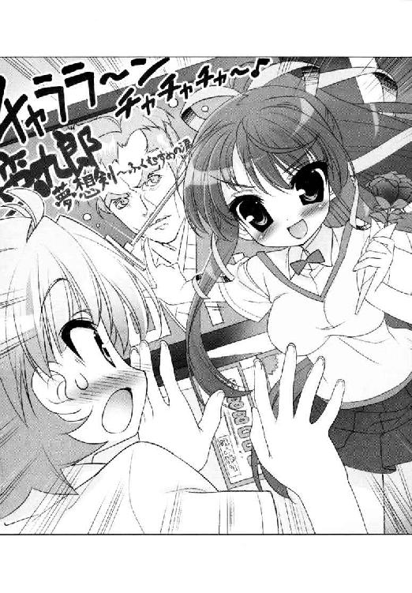
「でもほんとはチャンバラの方が好きでしょ？」
彼女はすっかり確信を持ってしまっているようだ。
たしかに配役の方は超好みだったが。ひさしぶりに殺陣で勝負ができる出演陣に、これはいけると期待もしてしまったが。正面から図星を突き抜かれ、けれどニセ雪国としては否定するしかないのだ。
「ぼぼぼぼぼ、ボクはべつに？ あんなヘンな映画？ す、好きじゃないよ？」
「淡谷知ってる？ それってツンデレって言うのよ！」
「ち、が、う、よ────っ！」
否定すればするほど、鳥子は読みが当たったと大喜びし、なにかの深みにはまっていくような気がした。
家に帰ってから、舞姫は思わずつぶやいていた。
「ねえ、ユキグニ......」
「んー？」
「古葉さんって怖いねえ......」
「は？」
弟は、不思議そうな顔で、リビングのソファに沈没する舞姫を見返している。
とりあえず、来週には彼を映画館に連れていき、にわかでもチャンバラマニアに仕立て上げなければならないのだろうか。
もう思いつきで相手を試すような真似はやめようと、固く誓う舞姫だった。
＊＊＊
今ならきっと、なんでも書けるような気がした。
鳥子は机の上でノートを開く。
（気負う必要なんてないのよ）
無理にロマンスのお約束をなぞらなくてもいい。ヤケになって殺伐とした展開にしなくてもいい。ただ、今日、この目で見て感じたことを。素直に経験として追加してあげればいいのだ。
とうとう下校時間。
呼び出したのは近所の公園。
──トクン。
──トクン。
あたしの心臓、さっきから鳴りっぱなし。
気づいてるかな。
こんなにどきどきしてるの、クニユキにばれたら、恥ずかしくて死んじゃうよっ。
「あのね、クニユキ！ これ、誕生日プレゼント！ 」
あたし、トリコ。
今日は一生懸命ね、がんばったの。
時代劇とか。
ぜんぜん柄に合わないかもしれないけど。
凝った無声映画時代のもの、とか。
そういうチョイスも無理だったけど。
無難な黄金時代の東宝時代劇から、ネットのレビューで一番評価が高いＤＶＤを選んだだけになっちゃったけど。
それでも、みんなみんな、クニユキにもらってほしかったの。
もうただのケンカ友達じゃイヤ。
イヤだからっ。
「僕に ......？ 」
クニユキ、すっごく驚いた顔。
ああ、やっぱりあたしじゃ変なの、かな？
クニユキのカノジョに、なれない、かな ......？
クニユキは、あたしが包装紙がわりに使っていた紅白の手ぬぐいを、そっとＤＶＤケースから引き抜いた。
ふわっと、手ぬぐいがクニユキの首にかかる。
「あったかいよ 」
クニユキ、笑う。
きゅんとくる。
木枯し紋次郎みたいなサイコーの笑顔。
ああ、やっぱり好き。
好き。
大好きっ。
「トリコの気持ちが、ね 」
──え？
クニユキ、自分で巻いてる手ぬぐいを。
あたしがあげた手ぬぐいの端っこを。
くるんって。
あたしの首にもかけたんだ。
「ありがとう。大好きだよトリコ 」
そのままぎゅーって。
あたし、クニユキに抱きしめられてた。
心臓、壊れそう。
夢？
ううん。
夢じゃない。
落ち葉がひらひら、セットの紙吹雪みたいに。
あたしたちの周りを舞い散った。
北風が吹いても、寒くない。
だって。
あたしとクニユキは、ね。
世界で一番！
粋でいなせなカップルになったんだっ。
「年末時代劇は一緒に見よう 」
「うんっ 」
「江戸村でニンジャショーもね 」
うんうん！
「あたしも、好き。クニユキのこと、丹下左膳と同じぐらいだいだいだーい好き！ 」
「なんか......可愛くない......？」
おかしい。せっかくリアリティをプラスしてみたのに。
読みが外れた？ 書き方が違う？
恋する乙女の観察眼は、時に鋭く、時に曇りがちで。そして創作の道のりは、それ以上に険しいようで。鳥子は机の上で、「なんで!?」と頭を抱えるのだった。
その後の話♯１
そして弟の雪国には、舞姫によるスパルタ式チャンバラ教育が施されたという──。
＊＊＊
──ああもう、やっと来た。
一駿河蜜は噴水のベンチから立ち上がると、大きく手を振った。
「もう。先輩、先輩、遅いですよっ！ 早くしてくださいっ」
約束した時間を大幅に超過し、『若光の君』は庭園に現れた。癖のない長い髪を揺らし、小走りに駆け寄ってくる姿を見て、かわいげもなく頰が膨らんでしまうのを止められない。
だって、本当に楽しみにしていたのに。
新しいお総菜屋さんを見つけたから、一緒に食べようって。言ってきたのは向こうなのに。
「蜜はですね、これからお歌のレッスンがあるんですよ。いくら先輩のご指名でも、あんまり遅くなるわけにもいかないんですよ。わかっていますか？」
「──いや、実にかたじけない、蜜殿」
「は？」
「西の丸のかわや掃除が長引いてしまい難儀していたのだ。許されよ」
「は？ は？」
蜜殿？ かわや掃除？
ぽかんとしている蜜をよそに、若光の君はベンチにビニール袋を置く。中に入っている半透明のタッパーを取り出す手つきも軽やかで、顔はすこぶるの笑顔。にこにこしながら説明をはじめる。
「こたびの総菜屋、屋号を『はーべすとはうす』と申してな。川向こうに最近できた量り売りの店なのだ。まずはこの『ちくわフライ』と『あんかけかぼちゃ団子』を試されるとよろしかろうぞ蜜殿」
「あ、そ、その、ありがとうございます......」
「割り箸。おしぼりもある。それ」
ぱしぱしぱしと割り箸一式を渡すと、そのままベンチに着席。蜜もあわてて隣に腰掛けた。
（な、なにが起きているのかしら......？）
訳がまったくわからないが、持ってきてくれたお総菜は、とってもこってりチープでおいしそうだ。
気を取り直して、割り箸を割る。ちくわフライを一つ取って口に入れると、ちくわの穴に詰めてあった詰め物に気がついた。嗚呼これは......チーズ、トマートソース......そして......もしかしてタクワン？ ありえない取り合わせが、口の中で濃厚に絡み合い混じり合い、次の一個が止まらない──。
「くあああああああああああああああああつっ！」
ひいいっ。
もう少しで口の中のものを吹き出しそうになるが、ぎりぎりで耐えた。蜜のお嬢様と恋する少女の体面と尊厳は、すんでのところで守ることができた。
若光の君は前のめりに口許をおさえる蜜を、にこにこと見つめている。
「おお、ご無事か蜜殿。弁当の中にくせ者が紛れこもうとしていたのだ」
誇らしげに掲げる割り箸の先には、庭園に咲く薔薇の花びらが一枚。どうやらひらひらと落ちてきそうになったところを割り箸でつかまえたらしい。どこぞのニンジャか剣客のように。
（──先輩......）
よくよく見れば、屈託なく微笑んでいるように見えるその目は、まったく笑っていなかった。視線はどこまでも虚ろなままだ。
「もしかして......寝てらっしゃらないんですか......」
「はっはっは......問題ないぞ姉上......拙者の取り柄はぁ、暗記の集中力ぅ......」
淡谷『若光の君』は、そのまま空っぽになったタッパーを仕舞い直すと、ふらふらと夢見心地な足取りで庭園を出ていった。
「蛮九郎夢想剣、絶賛上映中～」
先輩って、やっぱりよくわからない。
残された蜜は口許のミートソースをぬぐい、余った割り箸で、他の花びらをつかむ練習をしてみるが、これが意外に難しい。
「ていっ。えい。えいえいえいえい......」
思わずレッスンに遅刻してしまうぐらいに熱中してしまったのは内緒である。
第２章 図書委員長、高天原りぼんの決断
三ヶ月以上の長期延滞者数、一二七人。
腰を入れて数えてみれば、けっこうな数だった。
青美女学院中等科三年、図書委員長の高天原りぼん。彼女は配下の少女たちと一緒に、目の前に提出された報告書を見つめてしまう。本当に、穴が空くほどの勢いで。
「......そうです。作った私もびっくりしたんですが......あの、こんなにいたんですね、御本を返してくれない方......」
資料を作った担当者も、まさかここまでの数字になるとは思っていなかったようだ。
学校の規定によれば、本の貸し出し期間は二週間のはず。しかしリストの中には、一年以上本を返却していない者もいる。
「カウンターでそれとなく督促はしているのですが......『もう少し待って』と言われてしまうと、それ以上はなかなか......」
「怒られるのも悲しいですし......」
「高天原委員長、どうしましょうか。もう一度、入り口の掲示板に貼り紙をいたしましょうか。『図書委員会からのお願い』という形で」
ここは図書整理室。
いつもは本にラベルを貼ったり、修繕をするために使う作業テーブルを、エプロン姿の少女たちが囲んでいる。彼女たちは、りぼんと同じ、放課後の数時間を中等科図書館のために捧げてきた図書委員だ。どの子もみな、善良で物静か。本を愛し、平和と静寂を愛し、そして少し気弱だ。リーダーのりぼんと同じように。
「......いいえ、皆さん──それではきっと、ぜんぜん、まったく、足りませんわあ......」
「委員長！」
蚊の鳴くような小声ながらも、りぼんははっきりと否定した。
それはたぶん、温厚と従順を絵に描いたような彼女が、はじめて『ＮＯ』を言った瞬間でもあった。
「だって。今までわたくしたち、何度その『お願い』をしてきましたか？ なにか困ったことがあるたびに、まるで七夕の短冊でも飾るようにお願い事を掲示板に貼り出しては参りましたが。見ても聞いていただけないからこの数字になってしまったんです。だめなんですわ、今のままじゃ」
「そんな。それじゃいったい、どうしたら──」
ばしっと。りぼんは手元のテーブルを叩くまでした。
「──改革を。必要なのは、断固とした図書館革命を起こす意志っ。ぜったい、必ず、遂行いたしましょうという意志なのですう──っ」
身を乗り出した拍子に、修理途中の本が一つ、背後の棚から落ちた。そんな彼女の目の前には、目を丸くして固まる図書委員たち。
革命はここ。放課後の古い図書整理室から。
変わるのだ。他ならぬあの人のために──。
＊＊＊
スカートをはいて。ヅラをかぶって。雪国が姉のかわりに女子校の生徒会長をするようになった時、言われた言葉がある。いわく、青美七委員の長には気をつけろと。
ここ青美女学院は、中等科だけでも千人近い生徒がいるお嬢様学校だ。彼女たちの学校生活を成り立たせるために、学院は美化、風紀、保健、図書、文化、奉仕、広報の七つの委員会を組織している。それが通称『青美七委員』。
──いーかいユキグニ。想像して。三年のうちにやったらめったらキャラが磨き抜かれちゃった濃いめの委員長さんたちがね、定例会議のたびに七人顔をつきあわせて議論とかしちゃうんだよ。間に入って仲裁するだけでＨＰがすり減ってくから。
姉の舞姫は本気で言っていたし、入れ替わりで同じ役をこなす雪国のことを心配してもいた。
現に今も雪国の前では、問題の会議が繰り広げられてるのである。
「──あきまへんな」
「は、なぜ？ 説明をしてもらおうか。具体的かつ論理的に今すぐ」
「あきまへんもんはいくら説明したところであきまへんのです。堪忍してください。それだけです」
「なあんて非合理的かつ理不尽な答えだろうね！ だったらその理由を二十字以内で」
「とにかくあきまへん」
「九文字じゃないか！」
「あきまへん」
「五文字！」
頑固一途な美化委員長と、理詰めの風紀委員長が、もう三十分も対決している。今日もみんな元気だなあと感心してしまう。たしか奉仕委員長と広報委員長が提出した『空舟デイケアセンター慰問の報告』を読んで承認するだけのはずなのだが、この二人を同期にあててしまった時代が不幸のような気がしてならない。
「まあまあ。お二人とも、諍いはおやめください。ほら、まずは神に祈り、深呼吸で酸素の取り入れを......」
「日和見の保健組は黙りたまえ！」
「わー、こわあい、きつうい、たいへーん」
「野次馬根性の文化は論外！」
パワフルだ。
隣にひかえる生徒会会計、久我原さゆねが、『黙ってないで仲裁してください』とばかりに目配せをしてくる。だが雪国としては、そこにいるのが女の子ばかりで、ややこしい学校の雑事にここまで一生懸命になってくれるってすごいなあとしか思えないのだ。
「いだっ」
とうとう横から手の甲をつねられた。痛いよさゆねさん！
──わかった。わかったよ。見とれてないで止めに入るからね。
さゆねは無表情ながらも満足げ。どうも夏休み明けからこちら、ふっきれたように扱いが粗雑というか率直になってきている気がする。そんなシノビの少女の進言を受け、雪国は背筋をのばした。
（えー、こほん）
まずはひかえめな咳払いに続き、『そこまでだよ君たち！』と制止の声を出そうとした。
しかし。
「相変わらず、図書委員さんだけはなんにもおっしゃりまへんなあ」
当の美化委員長が、目を細めながら口を開いたのだ。
（高天原さん──）
美化委員長がすがめた瞳で見ているのは、会議テーブルの一番端。西日のあたたかな日だまりに、溶け込むように座っていた図書委員長だった。
実のところ雪国も、言われてはじめてこの場に彼女がいたことを思い出したぐらいだ。本当なら、会議の一番はじめからそこにいたはずなのに。
中肉中背、特徴といえば、色白の顔にかけたノンフレームの眼鏡ぐらいだろうか。顔立ちは可愛らしい部類に入るが、突然まわってきた話の矛先に、銃口を向けられた小市民のような怯えぶりを見せている。
「......わ、わ、わたくしが、なにか......？」
「なにかやありまへん。なんやここで言う意見はないか聞いてるんです。そこんとこどうなんでしょうかね、図書委員さん」
「えっと......あの、特には......ないと......思いますと言いますか......」
必死に喋る声までか細くて、ゆらゆらとかすみがかって定まらない。
「ない？」
美化委員長の視線がますます険しくなる。
「なんにもない、ですか？ それでも一委員の委員長ですか」
「なんだ。今日はずいぶんと絡むね、美化委員さん」
「風紀さんは黙っといてくらはりますか。うちは常々思っとったんです。高天原委員長──」
りぼんはびくりと肩をすくめる。
「図書委員のやり口は、はっきり言ってぬるすぎる。注意の呼びかけも利用者の確保も、みんな図書館前の掲示板。足も口も使わない。ええですか。あなたみたいな脳天気に座ってるだけのお人をなんて言うか知っとりますわ。神頼みの日和見でも野次馬でもない。もっとたちの悪い『空気』ですわ『空気』。もしくはお荷物。違いますか？」
「──────たいがい抜かせやコラ。あんまなめた口きいてんじゃねーぞ、こっちが下手に出てりゃ、いい気になりやがって」
会議室が一気に凍り付いた気がした。
雪国も、あやうくテーブルに突っ伏しそうになる。
「た、た、たたた高天原さん......？」
こちらの聞き間違いでなければ、今のスラング満載な暴言は、高天原りぼんのものだったような。
「......なあんて？ うふっ、ごめんなさい。わたくしったらちょっと言い過ぎましたかしら。お恥ずかしいですわあ......」
ふっくらとした頰をおさえて、いつものように恐縮している高天原嬢。うんうんそうだよね。聞き間違いだよね。それでいいんだよね？ そう言ってよお願いだよ。
「確かに今までのわたくしたちのやり方はあ、少々甘いところがございましたかもしれません......その点は、非常に反省しておりますの」
「──は、はあ......」
「どうぞ。明日からの図書委員会の活動にご期待ください」
高天原りぼんは最後まで、羊のように害のない笑顔をふりまいていた。
これがただの方便や聞き間違いではなかったことを、雪国たちは身をもって知るのである。
＊＊＊
「──なんだこりゃ」
翌朝。スクールバスを降りた雪国が見たのは、女の子たちの人だかりである。
集団の後ろからではよくわからないが、どうやら校門の前に、なにか貼り出されているらしい。肩を寄せ合い声をあげて、まるで入試の合格発表だ。
「──なにかあったの？」
「わっ、若光の君さま！」
適当な下級生をつかまえてみる。
会長の突然のご質問に、一年生らしい彼女はたいそう驚いていたが、頰を真っ赤にして答えてくれた。
「入り口に、貼り紙がっ！」
「いやそれはわかるから」
「本を延滞してる人が、上から下までずらーって！」
ずらー？
あの模造紙いっぱいに並んだ名前。どれも本を返していない長期延滞者だというのだろうか。
「......なんででしょう。図書委員さんたち、今までこんなところにお名前を貼り出すようなことしなかったのに......」
相変わらず頰の赤い下級生。
「ええっと......図書委員会からの......お知らせ......以下の一二七名は......早急に本を返却するよう......君の名前もあるの？」
「すっ、すみませ──────────────────んっ」
叫びながら逃げ出してしまった。
（あるんだな、こりゃ......）
雪国の横では、なんとクラスメイトに名前を見つけられたらしい美化委員長が、しきりにからかわれていた。
「委員長、あなたもなんですか......？」
「ひゃあっ」
美化委員長、飛び上がらんばかりの勢いで振り返る。
「ち、ちちち、ちょっと忘れていただけやあらしまへんか！ 単純ミスです単純ミス！ 明日には速攻返しに行きますわ！」
真っ赤な顔で、校舎の中へと逃げていく。
似たような会話は、そこかしこで聞こえてきた。みんな恥ずかしがったり怒ったり。
同じ貼り紙一枚でも、このやり方の反響は大きそうだ。
「──けっきょくさ、二日で半分以上が返してくれたんだって？」
後日、雪国は生徒会室の社長椅子でつぶやいてしまった。
朝っぱらから実名の貼り紙を、誰にでも目につく場所に出した効力はそれなりにあったらしく、翌日の休み時間から図書室の返却カウンターは長蛇の列。いきなり戻ってきた大量の返却本に、書架の方がきつくなっているという話である。
久我原さゆねは、静かに認めた。
「まあ、穏健派の高天原委員長にしては、珍しい荒療治と言えないこともないですね......」
「そっかあ。やる時はやる人だったってことかなあ......」
「そんなのんきなことをおっしゃってる場合ですか？」
「へ？」
さっと机の上に、書類を載せられる。陳情書と書いてあった。
「かなり苦情が上がってきていますね」
「そうなの？」
「実名の公表に加えて、行動を起こさない延滞者に向かって、直接取り立てのような真似をしているそうです」
「ええー......」
書類の方には、『公衆の面前で恥をかかされたのはひどい』『図書委員会のやり方は強引すぎる』と一般生徒の訴えが山のように載っている。
「......これ、僕が止めに入ってほしいってことだよねえ......」
「なりますね。生徒会長ですから」
「でも、借りたものを返さないっていうのも問題はあるし......うーん......」
「雪国さま」
顔を上げようとして、ぎょっとした。いったいいつの間に。こちらの頰と耳元に、久我原さゆねの吐息があった。
顎のラインで切りそろえた、黒曜石のようにつややかな髪が、身動きのたびに触れそうで触れなくて、その距離、たぶん一・五センチ。
そういえば、生徒会室に人がいない──。
「舞姫さまと同じ顔で、いつまでも迷うような真似はおやめくださいまし。うっかり我慢がきかなくなったワタクシが、何をするかわかりませんよ」
「わかったよ。行くよ行くから！」
「本当ですね？」
ちゃんと行くから、至近距離で耳元フーはどきどきするからやめてほしい。
──どういう開き直り方をしてしまったのだろう、この人......。
久我原さゆねに迫られるまま、雪国は生徒会室を出た。
暴走をいさめに行けと言うからには、図書館のある図書館棟に出向かなければならないのだろう。
（でも、いいとこだったんだよな、あそこ）
ここの学校の図書施設はかなり充実していて、空舟五中の貧弱な『図書室』を想像していると顎が外れるような立派な図書館が独立して建っているのである。中の蔵書も行き届いていて、ちらりと見に行った時に見かけた絶版の薔薇図鑑に魂を撃ち抜かれて、しばらく通いつめたこともあったぐらいである。
なんとはなしに思い出す。背よりも高い、どっしりと重厚な書架が作る長い影。ふと本と本の間をのぞき込めば、反対側の書架で詩集を立ち読みする少女の背中が見えたりもした。閲覧席の使い込んだ木のテーブルは、あのままあの図書館の歴史だろう。
長い伝統を感じさせる建物の中で、常連らしい文学少女たちが、少しくだけた調子で図書委員のカウンター当番とおしゃべりをしている姿も良かったのだ。決して格調高いとは言えないかもしれないけれど、すぐ隣にある親しみやすい本の家といった感じがして。
「......それが苦情の嵐って、いったいどんなことしてんだか──」
「すっすみませんすみませんすみません！ 明日には必ず探して持ってきますから！ 許してください！」
せっぱ詰まった悲鳴を聞いて、雪国はあわてて廊下を走った。
「謝ればすむってものじゃないでしょう！ もう半年も前の本なのよ！」
「ごめんなさいごめんなさい！」
「なにやってんのさきみたち！」
反射的に叫んだ。向こうが振り返る。雪国は愕然としてしまう。
廊下の隅に、人がたまっている。いや、たまっているというより、大勢で一人を取り囲んで責めたてているのである。
総勢十名近いその少女たちは、制服の上から鉢巻きとたすきを身につけていた。
緋色のたすきに書かれた墨字の文句。『延滞本断固督促週間』。中には体育の授業で使う木刀やなぎなたを握りしめている者までいた。そうして床に正座する生徒を取り囲んでいるのだから、まるで時代劇の大捕り物だ。
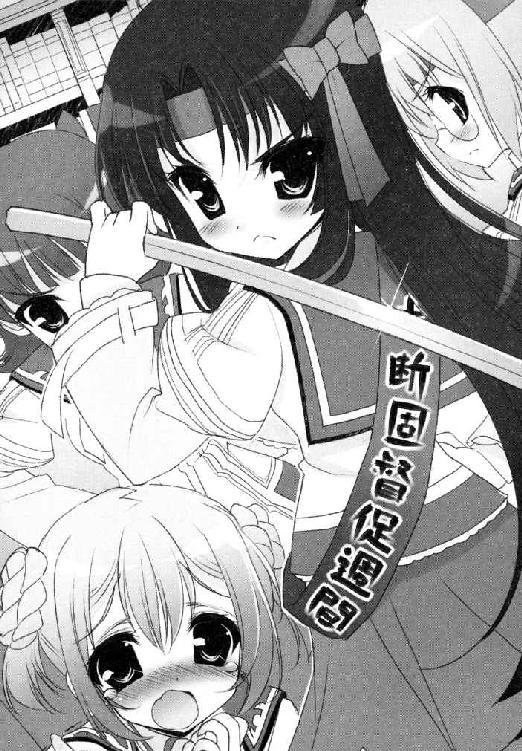
（もしかして......みんな図書委員なの......？）
そして、半ベソをかきながら正座をさせられている下手人Ａ──どう見ても、この間校門で出会った下級生だった。
「わ、若光の君様ぁ......たすけてください......」
下級生が、こちらに向かってすがるように飛びついてくる。
図書委員たちは、固い顔つきでこちらを見つめるだけ。かわりに軍勢の奥から、同じ緋色のたすきをかけた少女が歩み出てくる。
どう見ても、あの高天原りぼんだった。
「ごきげんうるわしゅう。淡谷会長様」
「高天原さん......これはちょっとやりすぎなんじゃないの......？」
「あら。そうですかあ？ いつもいつもやり方が生ぬるいとご指摘を受けてばかりおりましたので、思い切って運営方針を変えてみましたの。今は『返却のお願い』の最中ですわあ」
「苦情の嵐だよ」
実際に取り立ての場面を目にすると、怒りの方が先に来る。背中に回り込ませた下級生の、袖をつかむ手がかたかたと震えていた。よっぽど怖かったのだ。
「こんなやり方しなくたって、青美の生徒ならちゃんと返してくれるよ」
「まあ、本当に？」
「絶対だよ！」
高天原りぼんは、眼鏡の縁をおさえ、怒る雪国の前で笑った。本当にふわりと、真っ白い真綿のようにやわらかく。
「それなら、淡谷会長様も早急にご返却いただけるかしらあ」
「は──」
「これ、督促状です。よろしくお願いいたしますわあ、会長様」
固まる雪国に手渡されたのは、たすきと同じ緋色の紙。
督促状
淡谷舞姫様
平成○○年五月にお借りになった資料
『岡本綺堂全集 』一巻
が、まだ返却されておりません。
至急図書館の返却カウンターにお返しいただくか、ブックポストへ投函いただくよう、よろしくお願いいたします。
青美女学院中等科図書館 図書委員会
「ま、まさか......」
「掲示板に貼り出すのは、生徒会長の沽券にもかかわるかしらと思いまして。ええ、ちょっとした親切心です」
雪国は、信じられない思いでその赤紙を見つめてしまう。
平成○○年。舞姫が一年生の頃に借りた本だ。
後ろにいた下級生が、ぽそっと冷めた調子で呟いた。
「......若光の君様も......返してなかったんですね......」
「み、みたいだね......」
──舞ちゃんのお馬鹿。
雪国は、心の底から叫びたくなった。
＊＊＊
「舞ちゃああああああん！」
家に帰ってから、速攻で舞姫を問い詰めた。
双子の姉の舞姫は、雪国のかわりに男装して、市立の空舟第五中に通っている。
制服のまま階段を駆け上り、子供部屋を仕切る二段ベッドを乗り越えて、反対側のカーテンを開けると、舞姫はもそもそと男子の制服を脱いでいる途中だった。
すんなりとした華奢な体を包むワイシャツの前ボタンを全開にし、半分おろしたスラックスのファスナーから、おへそと下着の一部をチラ見せしたまま、一言。
「ユキグニ、どーかした？」
「どーかしたじゃないよ、図書館の本、どこやったのさ」
「としょかん？」
「これ！」
雪国は、鞄の中から督促状を見せてやる。
「えー、岡本綺堂全集......？」
「そう」
「そんなの借りたかなあ......」
淡々と喋りながら、彼女は部屋着にしているＬサイズのＴシャツをかぶり、ハーフパンツに穿き替え、ぽいと靴下を脱ぎ捨て、雪国から手渡されたロングのヅラをかぶり直す。淡谷舞姫、変身リセット完了だ。そのマイペースさは感動的なほどだった。
「高天原さんだっけ......あの人、わりとのんきでうるさいこと言わないタイプじゃなかった？」
「それがここ数日で激変だよ。憲法改正の勢い」
「そもそもボク、あんまり図書館って行かなかったから記憶が......」
「だからって二年もばっくれていいってわけじゃないんだから。一応会長なんだからしっかりしてよ」
「むー」
大丈夫だろうか。
「まあ、探してみるからちょっと待ってね......」
「なるべく早くね」
雪国も制服のリボンをほどきにかかると、ふいにぽつりと舞姫がつぶやいた。
「──久我原さ、元気だった？」
雪国は、ベッドの上で舞姫を見た。彼女はさっそく本を探しているのか、洋だんすの中に頭を突っ込んでいて、その表情まではわからない。
──元気だった？
雪国は、なんとなくせつなくなってしまった。
夏休みの人力リバーフェスタで、入れ替わりを続けたいなら好きなだけやれと、久我原さゆねに怒られ突き放されたのは舞姫だ。親友にして腹心と思っていただけに、その衝撃も大きかったはず。これからも関係は変わらない、友達は友達だと思っていても、気まずいし不安にもなるのだろう。
こうやって、青美にいる雪国に、さゆねの様子をたずねないといられないほど。
「──うん──すごい元気だよ」
「よかった」
元気だと言った雪国の言葉に安堵する、舞姫の声の調子が胸にきて、雪国は黙って制服を脱ぐ手を早めるしかなかった。
けれど。肝心の『岡本綺堂全集』だけが、どこを探しても見つからなかったのだ。
「......なにをやってるんですか、雪国さま」
「探し物」
久我原さゆねの質問に、雪国は答える。生徒会室のキャビネットの下段に頭をつっこんだままという、かなり格好悪い姿勢だが。
「そこには舞姫さまの私物ぐらいしかないと思いますが......」
「だから探してるんだけど......ぷはっ。けっこう埃っぽいな」
頭を引き抜き、咳き込んだ。小綺麗なはずの生徒会室に、目に見えて埃が舞い上がって、雪国は顔をしかめるしかなかった。
「目的のものはございませんか」
「ないねえ......」
かわりに見つけた縦笛で、『グリーンスリーブス』の指遣いだけ真似してみる。
「家にはないからこっちかもって言われたんだけどなあ......」
「岡本綺堂全集、でしたか......？」
「久我原さん、見たことない？」
「かなり昔に、似たようなタイトルの本を教室でめくってらしたような気はいたします」
「ほ、ほんと？」
「ええ。お読みになるというより触って眺めると言った雰囲気でしたが......」
それはいい。問題は、その珍しい光景の後である。
「そ、そのあとは？ どこに置いたとか鞄に入れたとか何か」
「申し訳ございません。ワタクシが知る範囲では」
ため息が出た。
「なにぶん二年も前の話ですし......」
「そうだよね。はあ。参ったな......とりあえず手ぇ洗ってくるよ」
雪国は生徒会室のドアを開け、近場のトイレを目指して歩き出す。
はたしてあの舞姫が、他に置き忘れそうな場所はあっただろうか。考えるだけで頭痛がしてくる。
「うふふっ 淡谷会長。そろそろ御本はお返しいただけますかあ？」
「ひっ」
「明日こそ期待しておりますからねえ！」
高天原りぼんが、配下の図書委員をぞろぞろと引き連れ、微笑みながらすれ違っていった。
「さあみなさんご一緒に。『お借りになった資料はあ』」
「「「「返す！」」」」
「早急に」
「「「「返す！」」」」
「さっさとお」
「「「「返す！」」」」
「中等科図書館」
「「「「最強！」」」」
「権力者にはあ」
「「「「媚びない！」」」
高天原りぼんが甘ったるい声で気勢を上げれば、さらに図書委員の唱和が続く。通りがかった生徒会執行部員が、気圧されたように壁際へ寄って道を譲った。
「目指せ延滞者ゼロ！」
「「「「やります委員長！」」」」
どうしよう。
そろいのたすきは赤味を増し、『延滞者殲滅週間』にレベルアップしていた。
「──もう無理だよ舞ちゃん！ 明日には返しに行かないと！」
雪国が泣きを入れると、舞姫は「むー」と口をへの字に曲げた。
家も学校も、手分けして探してみたものの、いまだに全集は見つからない。高天原りぼん率いる、図書委員のプレッシャーだけが日増しに高まっていく感じだ。
「登校するとね、高天原さんたちが一列になって僕を待ってるんだよ。言葉遣いは一応丁寧なんだけどね、僕があと一日待ってとか言うと、顔は笑ってても目が冷たいっていうか、『この件、新聞部にタレ込んだらどうなると思います？』とかこっそり相談してるのが聞こえてきて胃がキリキリキリキリ......」
「それはつまり借金で首が回らなくなったお大名と市中の商人の関係？」
「のんきなこと言ってる場合じゃないって！ 僕じゃなくて舞ちゃんがピンチなんだよ！」
「おかしいなあ......そんなはずないんだけどなあ......」
「そう言ったって、ちっとも出てこないじゃないか」
部屋着姿の舞姫は、カーペットの上にあぐらをかき、腕組みしながら考えこんでいる。
「なくしちゃったんじゃないの？」
「......なんかボクさあ......この間からいろいろ考えてるんだけど、もしかしたらちゃんと返却したような気が」
「それ確かなの？」
「しないでもないというかなんとなくそんな気がするというか」
「だめじゃん！」
雪国は天を振り仰いだ。
ああ、蛍光灯の紐がぼやけて見える。
「......舞ちゃん、僕が学校で倒れたら、植木の花には水をやってね。肥料も剪定も忘れないでね。月命日には園芸ガイド。薔薇の新作カタログが出たら、必ずお墓か仏壇に供えてね。お盆じゃなくても化けて取りに出てくるから......」
「でも......なんで高天原さん、いきなりこんな方向転換するようになったんだろう......」
ともあれ翌日である。
雪国としては、登校するのが死ぬほど憂鬱だった。舞姫の方は、「ちょっとやりたいことがあるから」と言って、早めに五中の方へ登校して行った。もはや雪国に残された道は、ニセ舞姫として青美に出向き、ことの次第を説明するだけである。
（とにかく、弁償でもなんでも、なくなったことを白状しないと......）
図書館棟に続く渡り廊下は、すでに授業が終わったというのに静まりかえっていた。一瞬休館日かと思うが、入り口には一応、『開館中』のプレートが下がっている。雪国はガラス戸を押し開け、中に入るが、やはり物音一つしない。ただシンと、水の底に砂がたまるように、静寂だけがあたりに満たされている。
決して人がいないわけではないのだ。カウンターや書架の間には、当番の図書委員がちゃんといて、日々のルーチンワークをこなしている。ただ、利用者の数が激減しているのだ。
「あっ」
ふいに背後で、床にスチールのペンケースが落ちるけたたましい音がした。振り返れば、閲覧席でノートを広げていた少女が、真っ青な顔で口許を押さえていた。
「高見沢さん。退席してください」
「は、はい......」
「図書館利用規約第十二項の違反です」
「はい......」
「それと、利用規約第三十項。閲覧席で閲覧できる資料は、図書館内の資料のみです。自習は自習室で行ってください」
「はい......」
すごすごと、鞄を抱えて出ていく少女。後に残るのは、自分が吐く息すら聞きとがめられそうな厳格な空気だ。
『私語厳禁』
『書架での立ち読み禁止』
『閲覧席の利用は十五分以内』
図書館の壁には、新しい貼り紙があった。図書委員会は、長期延滞者の狩り出しに加えて、図書館利用者のマナーも厳罰化しているようだ。
ついこの間まで、カウンター当番の図書委員と、常連の女の子たちが、脱線気味のおしゃべりをしていたのに──。
雪国が図鑑が見たくて足を運んだ、ゆるくてもアットホームな中等科図書館はもうどこにもないらしい。
「会長。なにか御用ですか？」
入り口で棒立ちしている雪国に、図書委員が気づいて声をかけたようだった。作業用エプロンは明るいヒヨコ色だったが、冷徹な表情とのギャップが激しすぎる。
雪国は、たまりにたまったやるせない思いをこらえ、口を開いた。
「借りた本を......なくしてしまったみたいなんです」
図書委員は、その言葉を聞いて、わずかに眉を跳ね上げた。
黙ってカウンターへ足を運び、責任者らしいカウンター当番に耳打ちしている。いくつかの緊迫したやりとりがあり、カウンター当番の少女が立ち上がる。
彼女たちのまなざしは、相変わらず険しい。
「どうぞこちらへ」
案内されたのは、カウンター奥の図書整理室だった。
そこは、壊れて修繕中の本が詰まった書棚が並び、ふたたび表の書架に並ぶのを待つ部屋だった。
窓のブラインドがすべて下りているため、隙間から西日がほの見えるものの薄暗い。中央の作業用テーブルに、高天原りぼんが座っていた。長い髪を三つ編みにし、ノンフレームの眼鏡をかけた、人畜無害の空気委員と言われた図書委員長。
「どうぞおかけになってください、淡谷会長さま。パイプ椅子で恐縮ですけど」
「ありがとう......」
彼女は笑って雪国を出迎えた。
「この部屋、とても暗いでしょう？ 本が日光で傷むからブラインドが上げられないんです」
冬は寒くて大変でと、世間話のように彼女は続けている。
「返ってきた本が壊れていたら修理をしますし、新しく買った本もここでカバーと分類番号を付けて書架に並べます。カウンターで貸し借りの処理だけしていればいいと思われがちですけど、それ以外の仕事の方が多いぐらいなんですよ」
「そうなんですか......」
「そう。重い本を運んで腰痛にならない子はいませんし、たかが図書館の本だと適当な扱いをされると、困るし仕事が立ちゆかなくなるって言うか──」
高天原りぼんはほがらかに笑い続けたあげく、
「なくしたってどういうことなわけ、ええ!?」
豹変した。
ダン！ と激しい勢いで床を蹴ったかと思うと、ワンステップでテーブルの上に飛び乗り、パイプ椅子の上で固まる雪国の眼前へと詰め寄った。
腰は天板の上に下ろしながらも、膝と太股を使ってにじり寄ってくる。距離をこちらへ詰めていくたび、りぼんの長いフレアスカートが、じりじりとめくれ上がっていき──椅子に座る雪国の目線では、スカートの奧の奧の禁断領域が拝めてしまいそうだ。しかしそれよりなにより、太股にくくりつけられた革ベルトの方が気になってしまう。
「期間は沢山あげたわよね。うるさいことはなんにも言わなかったわよね。それもこれもみんなあなたたちを信頼してたから。なのに生徒会長までこの仕打ち？ 本当に舐められてたわけねわたしたち」
鞭？ それってもしかして鞭ですか？
どこからか金属音がした。鞭と太股のインパクトに気を取られていた雪国は、気づくのが遅れた。目の前に銀色の輪らしいものがちらついたかと思うと、あっという間に手首を取られ、テーブルの脚を基点に繫ぎとめられてしまう。愕然とする雪国が見たのは、床の上で満足げに微笑む高天原りぼんである。
襟元のリボンとボタンが、大きく外れていた。ああ、このほんのり暖かい手錠はあの襟の奧から取りだしたものらしい。意外に大きな谷間とか隙間とかたぶんそういう所に。
生唾を飲み込めば、向こうは口の端を引き上げた。今までの羊の笑顔ではない。獲物をいたぶる牝豹の笑みだ。彼女は三つ編みのゴムをほどくと、本格的にブラウスとスカートを脱ぎはじめ、下に着こんでいたのは黒革、ボンテージ──。
「校則！ 校則違反！」
「シュミーズはちゃんと着てたから問題なし」
太股に食い込むほど締め上げた革ベルトの間から、乗馬用の立派な鞭を引き抜いた。
作業用のテーブルは、重かった。それはもう、暴れたところで一人では持ち上げきれないレベルで重かった。
「......あの、あのさ、普通、本を紛失した場合はお金で弁償とか現物を持ってくるとか」
「それじゃこっちの気がすまないのよ」
「だからって肉体言語は──ああっ」
いきなりりぼんは、鞭で床を叩いた。雪国がへたりこむ足もとの、ぎりぎり一センチ手前の鋭い『お仕置き』だった。
「いや、あの、やめて......」
「詫びの言葉一つと引き替えに、服を一枚返してあげるというのはどう？」
「いっ、いやだああ──っ！」
「泣きなさい。泣いて詫びなさい。叫んだところで図書館はわたしの領域よ。体で思い知らせてあげる──本をなくすとこうなるのよ──」
固まる雪国を見下ろし、ボンテージなりぼんが膝をつく。指先がこちらのリボンにからまった。ゆっくりと──焦らしながらほどく。続いてボタン。一個目、二個目。下に着こんだシュミーズのレースがかすかにのぞいてしまう。
あちらこちらと触られ笑われいじくり回され、嫌がっているのか怯えているのか気持ちよくなっているのかわからなくなってきた。だめだしっかりしろ淡谷雪国。ここで身ぐるみはがされると、シュミーズの下に胸がないのが一目瞭然──！
「変わるのよ。変わらなきゃいけないのよ。あなたもわたしもみんなみんな──」
タン！
乾いた音が室内に響き、鋭い鋼の刃がテーブルの脚へと突き刺さった。
「手裏......剣？」
「そこまでです、高天原りぼん」
巻き込まれたりぼんの髪が、一房、床へと落ちた。振り返るりぼん。整理室の入り口に、長身のシノビの少女が、鋼鉄の武器を指に挟んで立っていた。
「久我原さん──！」
さゆねは冷めたまなざしで、髪を乱すりぼんを見据えている。
「......会計として、生徒会長を助けにきたってこと？ とっても涙ぐましい主従関係だけど、あなたの出番はないわよ。失せなさい」
「ワタクシの名と所属は忘れてしまって結構。今は『ロクサーヌの使者』としてこの場におります」
「そっ、そんな──!?」
りぼんがはっきりとよろめいた。
どうやら『ロクサーヌの使者』という言葉は、二人の間でだけ通じる符丁らしい。しかも、りぼんに相当の衝撃を与えるレベルの。
「本当にあの方の......？」
「疑うのは自由です」
「でも、どうして......？ わたし、言われた通りに変わってみたわ。ほら見て。今さらロクサーヌ様に止められるはずは──」
「必要なのは自己の改革。けれど、その道を過てば望む効果は得られない。ロクサーヌの言葉です。しかし高天原りぼん、淡谷舞姫は無実です。二年前に、借りた本は返却されているはず。なぜなら彼女は映画の原作が知りたくて本を借りたものの、読み切れずに返してしまったのですから。他ならぬ貴方自身に」
「噓よ──」
言いかけて、りぼんは口をつぐんだ。
久我原さゆねは、冷徹に続けた。
「思い出したようですね」
「だって。噓。そんな......」
必死に否定しようとするりぼんを、さゆねは切れ長の瞳だけで追い詰める。
「そうです。二年前の五月。雨が降っていました。一年生のあなたは駆け出しのカウンター当番だったはず。本の返却コーナーに座っていた」
「噓よ......だったら......どうして本の記録は未返却のままなの。未返却だから督促状を作ったのよ。返ってきたならきちんと処理されてるはずよ！」
「けれどなされなかったのです」
トラブルがあったのか？
雪国は、手錠をはめられたまま、一つの可能性を考えはじめていた。
ブラインドが下ろされたままの寒い部屋。四方を埋める棚。中におさまる本は、図書委員の修繕を待つ壊れた文庫やハードカバー。中央の作業用テーブル。
貸し出されたままの古い全集。
まてよ──。
「高天原さん......ちょっと思い出してみてくれませんか。舞ちゃ......いや、僕が本を返したとき、なにか会話をしませんでしたか？」
「会話？」
「どんなささいなことでもいいですから」
ひかえめに食い下がる雪国に、りぼんは唇を嚙んだ。うつむいたまま、やがて。
「そういえば──」
＊＊＊
──二年前。五月。
しとしとと小雨が降りしきる昼下がり。中等科に上がって三度目の図書当番は、本の返却カウンターに座っていることだった。
「これ、返却します」
高天原りぼんは、椅子の上で背筋をのばした。本が戻ってきたら中を点検し、ラベルのバーコードを読み取って返却処理をし、「ありがとうございました」と言うこと。これが先輩から教えてもらったすべてだ。
「あら──」
「えへへ。また会ったね」
同じ一年生のリボンを付けたその利用者は、二週間前にも顔を合わせていた。りぼんが自分で貸し出し処理をしてあげたのだ。
淡谷舞姫。クラスは遠いが、生徒会の執行部に入ったと聞いている。いつか七委員の全体会議で顔を合わせる日が来るかもしれない。
（なんて。わたくしったら大胆ね）
もちろんそれは彼女が生徒会長になり、りぼんが図書委員長にならなければ実現しない未来だ。出てきてしまった大胆な想像を打ち消すように、りぼんは赤い顔でたずねた。
「本、おもしろかったですかあ？」
「うーん......はっきり言うと難しくてよくわかんなかったや」
「あら、まあ」
互いに苦笑いする。
「なんか字ばっかりなんだもん」
「挿絵が多い本がよろしいなら、いくつかお勧めもありますわあ」
たわいもない雑談をしながら、渡された本をめくっていき、立ち上がった。
「あれ、高天原さん。その本、どこ持ってくの？」
「図書整理室ですわあ」
わずかにページが取れかけた箇所を見つけてしまったのだ。
「ごっ、ごめん。ボク、うたた寝しながら変な引っ張り方しちゃったかも」
「いいええ。これぐらい、綺麗に直せばわかりません。次の方が利用しやすいように、直しておくのも図書委員のつとめですからあ」
りぼんが笑うと、淡谷舞姫は、ほっとした顔になった。
次もまた来てくれるといいな。そう思いながらカウンターを離れ、図書整理室のドアを開けた。
＊＊＊
りぼんの顔が蒼白だ。
──これぐらい、綺麗に直せばわかりません。
──次の方が利用しやすいように、直しておくのも図書委員のつとめですから。
そして、岡本綺堂全集は、奥の図書資料室へ運ばれたのだ。
カウンターで返却処理をされることなく。修理され、他の人が使いやすい姿に戻って、棚に並んでしまったのだ。『貸し出し者・淡谷舞姫』の名前が残ったまま。
「本は──」
「地下......全集は利用者が少ないから、地下の閉架書庫に並べてあって......」
「行きましょう」
閉架書庫へ続く階段は、整理室のすぐ隣にあった。手錠を外してもらい、上から軽く制服を羽織っただけのりぼんに続いて、地下へ下りた。
「ああ──」
力ないりぼんの声を聞いた時、すでに勝負はついていたのかもしれない。
ほの暗い地下書庫。うなだれるりぼんの目の前の棚に、『岡本綺堂全集』の一巻が置いてあったのだ。
「......大丈夫。ほら。初歩的なミスってやつですよ。僕も昔、図書委員の手伝いやってた時にやらかしたことがあって......じゃない、弟がやってたって聞いてますから」
「......そんなの、なんの言い訳にもならない......なりませんわあ」
りぼんはぽろぽろと泣き出していた。
半端に着込んだ制服と、その下からのぞく女王様ルックのアンバランス。
今ではもう、黒革のコスプレが痛々しくさえ見えた。
「変わらなきゃ......変わりたいって......そう思って......けっきょくこんな結果に......」
ぐすりと鼻をすすり上げる。
「......申し訳ありません、淡谷会長さま。どんなお詫びもしようがありませんから、わたくしもう死んで消えさせていだだきますう！」
「いいよいいよそんなことしないでよ」
「でもわたくしっ」
「素敵な中等科図書館をさ、また作って。ちょっと抜けてても居心地良くてさ。それが一番の希望だから」
雪国は、届けとばかりにりぼんの手をつかんだ。
「あとね、強いて言うなら雑誌の『趣味の園芸』を、雑誌コーナーに毎月入れておいてくれるとすごく嬉しい。『ガーデン＆ガーデン』でもいいけど」
後ろの方で、シノビの少女がかすかなため息。『この天然のお人好し』と呆れているだろうか。
だけど雪国は男で、女子校のことは理解しきれなくて、女の子は泣いたりしているより笑っていてくれる方が好きなのだ。
「──はい。リクエスト、しかと承りましたあ......」
蚊の鳴くようなイエスの声。
ほら、こんな風にさ。微笑ってね。
＊＊＊
「呆れてもいいでしょうか？」
高天原りぼんと別れたあと。案の定さゆねにそう言われてしまった。
「もう少しで女装がばれるところまで追い詰められて。それであっさり許せる雪国さまが理解しかねます」
「んー、でも、けっきょく本の場所もわかって仲良くなれたんだしさあ......」
「まったく──ワタクシが来ていなかったらどうなっていたか」
「あ、それは本当」
タイミングの良さにおどろいてしまったぐらいなのだ。
「久我原さん、なんか魔法の言葉使ってたよね。『ロクサーヌの使者』ってなに？ 高天原さんにはすごい効いてたみたいだけど」
「あれは、占い師の名前ですよ」
「うらないし？」
さゆねは小さくうなずいた。
「ええ。空舟駅の西口に店を出している占い師です。ロクサーヌ摩利亜。本名は存じ上げかねますが」
「うん、まあ、占い師さんってだいたいそんな感じだよね......」
「高天原りぼんは、かなり彼女の占いに傾倒していたようです。片思いの恋に悩んで、成就したかったら内気な性格や環境を変えろとアドバイスを受けたそうで」
なんでも通学途中に見かけた男子生徒に一目惚れしてしまったらしい。
「......それで、あそこまで面舵いっぱい図書館革命......？」
「ワタクシには理解しかねる部分もあるのですが」
ありがたい。自分にもよくわからない。
だが、その情報を久我原さんが知っているのはどうしてだろう。舞姫が本を返したという、天気や日付まで知っていたのだ。
さゆねは、その答えとして、懐から携帯電話を取り出した。飾り気のない、白い機体だった。
「さきほど舞姫さまが、電話で一通り教えてくださいましたから」
「舞ちゃんが？」
「ええ。五中のＳＥＣのみなさんと、高天原りぼんが急に改革をはじめた理由を探っていたようです。理由はわかったものの、青美に戻っている時間がないから、ワタクシがこの情報で雪国さまを助けろと」
開いた着信画面を見つめたまま、彼女はぽつりとつぶやく。
「相変わらず残酷な方ですね。ＳＥＣとご一緒なんて」
雪国は、なんと声をかけていいかわからなかった。
久我原さゆねのもとを離れ、空舟五中を──芝目夏彦率いる空舟エンジョイ委員会とともにいることを選んだ舞姫。その舞姫から、ＳＯＳが来た。ＳＥＣと一緒に調べたことを伝えてくれと。
雪国としては、舞姫が朝からなにに奔走していたのかわかって腑に落ちる部分もあったが、さゆねとしては悔しかっただろう。悲しくもあっただろう。こうして必死に助けを求められても、その彼女の隣にいられるのは自分ではない。五中にいる芝目たちなのだ。それでも教えられたことを握りつぶさず、雪国のもとに駆けつけてくれた。
「どうして？ 久我原さん......」
「なぜでしょうね。好きだから、としか」
淡々とした声の中に、たしかな感情がこもっていた。苦笑と、あきらめと、そして消しようのない愛しさと。
かみ合いきれない二人の関係が、また元の位置に戻るといい。雪国は心の底から願いながら、自分の口許をほころばせるのだ。
「なんか......うん......可愛いなあ、久我原さん」
自然に声が出ていた。
おどろいたのは、それを聞いた久我原さゆねが、露骨にぼっと頰を赤くしたことだ。
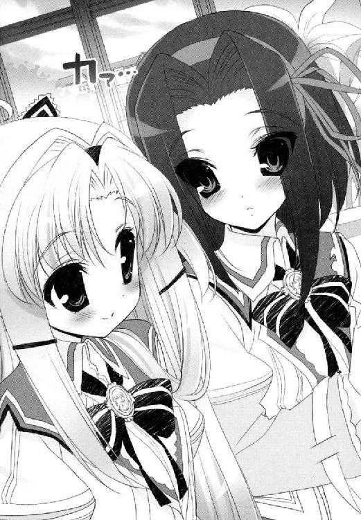
「うわ」
「失礼な方ですね。いきなり妙なことを言わないでください！」
「いやでも、かなり珍しいものを見た気が......うわー」
「感心されるためにいるわけではありません！ 失礼いたします！」
「うわーうわー」
もう一つ付け加えることがあるとするなら。
青美女学院中等科図書館は、比較的もとのゆるやかなルールや気風に戻ったという。
ただ、閲覧席のあたりで耳をすますと、地下の閉架書庫あたりから、鞭が床を叩くような乾いた音が聞こえてくるらしい。
悪質なルール違反を犯した問題利用者を、女王様がお諫めになっているとかいないとか。
中等科図書館で、本を返さない生徒はもういない。
あくまで噂の話である。
その後の話♯２
「──どうぞ、狭いところですが」
「あ、うん。ありがとう高天原さん」
「こちら、椅子です」
ひさしぶりに通された図書整理室は、以前の配置とほとんど変わらなかった。ブラインドがおろされた窓や、細々とした修繕用具をしまった壁の棚。修理途中の図書資料。
雪国が落ち着きなくあたりを見回す間、高天原りぼんが作業台の上を片づける。
「それで、どうしたの？ 何か相談したいことがあるって言ってたけど」
「はい。実は、ふ、藤ノ原さまのことで......っ」
りぼんはそう言うやいなや、己の頰を真っ赤にさせた。
「あ、藤ノ原君？ あの人がどうかしたの？」
「じ、実はですね、大っ変なことがわかったんです。もうじき藤ノ原様のお誕生日なのだと！」
へえー。すごいねー。よかったねー。ふーん。
どうもおっとり流しそうになるが、りぼんにとっては重大事件のようだ。
つい先日、彼女はずっと追い続けていた初恋の人と、紆余曲折の果てにご対面することができたのだ。もともとイギリス在住の彼の方が、法事を終えて母国のパブリックスクールに戻った後も、いじらしくもメールのやりとりを続けているらしい。
雪国は顔に出さないよう、深刻そうなりぼんをなだめにかかった。
「じゃあさ、ほら。なにかこれを機会にプレゼントをあげればいいじゃない」
「そう思って、ブックカバーを取り寄せてみました！ ほら、牛革製で色味は渋めのモスグリーン。殿方がお使いになることを鑑みて、ファンシーに偏らないよう気を遣ってあります！ いかがでしょう!?」
「ああうん、いいんじゃないの？」
「そうですか？ 大丈夫ですか？ おかしくないですか？」
「僕ならまあ、普通に使えると思うよ......」
思わず素の男子目線で答えてしまう。
「ああ、よかったあ......」
心底ほっとしたような高天原嬢。有効なアドバイスが欲しいというよりは、自分が考えたプランの後押しをしてほしかっただけのようだ。
それでも、好きな人のために一生懸命なのだから可愛いものである。
「贈ってあげなよ。きっと喜ぶよ」
「はい。はい」
「バースデーカードも添えてさ」
「それも作ってありますう」
用意周到。彼女は着ているひよこ柄のエプロンから、小さな手作りカードを取り出した。
「へえ。きれいなカードだねえ。押し花？」
「ええ。藤ノ原さまにお贈りするのにふさわしいお花だって」
「ガマズミは珍しいなあ......」
清楚な白い花を咲かせるガマズミは、一般の庭木に使われることも多いが、わざわざ押し花にする人はそういないかもしれない。
「でも良かった。淡谷会長様にご相談して。これで藤ノ原さまにさしあげる決心がつきましたあ」
──ん？
「ちっ、ちょっと待ってガマズミ？」
「そうですよ」
ガマズミって。ガマズミって。
確かアレの花言葉は──。
「アイビーも一緒に入れておこうかしら」
「うわああああああああ」
これは決定だ！
ガマズミの花言葉。
──無視したら、私は死にます。
そしてアイビーの花言葉も。
──死んでも離れない。
「ふふ。うふふふ。藤ノ原さま......どうか受け取ってくださいね、わたくしの気持ち......」
藤ノ原君、ちょっと逃げた方がいいんじゃないかな？
うっとり微笑むりぼんを横目に、彼の身の安全を心配してしまう雪国だった。
第３章 戦慄の乙滅我！
──噓つき！ 芝目さんの噓つき！
──ち、違う。誤解なのだ胡蝶の宮！
──なにが誤解ですの。その手に抱いていらっしゃるのはどなた？
どなたって。どなたって。
そんなの兄貴一人に決まって──。
「ほぎゃわあああああああああああああああああああああ！」
芝目夏彦は、絶叫とともに飛び起きる。
目の前には、じっとりと汗ばむ暗闇があった。それでも閉まりきらないふすまの隙間から、薄く蛍光灯の明かりが差し込んでくる。同室の次兄はすでに起きているらしく、「うるっせーぞ真っ昼間に！」と、問答無用でサッカーボールをふすまにぶつけてくる。それでようやく彼は、ここが布団の上で、ベッドがわりに使っている押し入れの上段であることを知るのだ。
「..................夢、か............」
夢か。夢なのか。
いまだ跳ね上がったままの鼓動を戻すことができず、布団の中で荒い呼吸を繰り返す。
夢の中に、想い人が出てくることはかまわない。着ているものもセーラー服だったりメイド服だったりチアガールだったりもっといろいろきわどかったり、いつもは見られない素敵な衣装とあはんうふんの言葉つきだ。だがしかし、ことごとく服が脱げると胸がなかったり、ないはずのものがあったりするのはどういうことなのだ。
（......精神は、肉体的接触のショックに負けるということか......!?）
過ちは、たった一度の過ちは、夏の河原の出来事だった。
酒の魔力が手伝ってしまったとはいえ、見た目が完全に自分好みの女の子だったとはいえ、人力リバーフェスタの舞台上で、想い人の舞姫ではなく弟の雪国にキスをしてしまった痛恨の失態がある。雪国のことが好きな胡蝶の宮に、「お二人は相思相愛ですのね！」とガチホモの烙印を押されてしまったぐらいだ。いくら違うと言っても聞いてもらえず、あげく夢の中でもこんな形で責められる。
「なつひこー、でんわ」
ふと顔を上げれば、六つ下の妹が、押し入れのふすまを開けていた。
「おんなのひとから。カノジョ？」
「はあ？」
「カノジョ？ カノジョ？ うっわーしんじらんない、なつひこのくせに」
小学生のくせにお兄様の名前を呼び捨てにするなとか、いちいち詮索するなとか、とりあえず喋りながら巻き髪をいじるギャルっぽい癖はやめろとか、言いたいことは沢山あったが、もはやケンカをしている気力もなかった。
「彼女彼女って......どうせ兄貴だろう。淡谷とか名乗ってなかったか？」
「ちがう。なんかねー、ぜんぜんべつのひとー」
別？
芝目はあらためて目を見開いた。
＊＊＊
淡谷舞姫には秘密がある。
双子の弟、淡谷雪国と入れ替わりに、公立の中学校に通う男装少女なのだ。
教室で帰り支度をはじめていると、いきなり声をかけられた。
「あーわーやー、くんっ！ いまいい？」
そんなすこぶる甘ったるい声に振り返れば、クラスメイトの女子が三人ばかり、肩を寄せ合いすり寄ってくる。
「......なに」
「あのね、あのね、これ！ ここの解き方教えてほしいの！」
「淡谷くん頭いいし。教えて？」
ね？
そう言って、さきほどの数学の時間にやった問題集を差し出してくるのだ。
きらきらと期待に満ちたまなざしに、舞姫はうっと詰まる。
声も見た目も弟の雪国そっくりで、たいていのことには対処できるつもりの舞姫だが、こと勉強の出来だけは同レベルというわけにもいかないのだ。
「淡谷くん？ だいじょーぶ？ なんか顔色悪いって感じ......」
うつむく舞姫に、心配そうな声。
「......ごめん。ちょっと気分わるくて......」
「ええっ」
舞姫は、問題集を押し戻し、口許をおさえた。
「ほんとごめん。保健室......いってもいいかな」
「ええっ」
よろめくように、けれど有無を言わさぬ調子で、人垣を抜ける。
少女たちはぽかんとしていたようだが、後から爆発的な声が沸きあがった。
「いいっ！ なんかいいよお！」「病弱！ 貧血！」「か弱い美少年入ってるよお！」
ごめんユキグニ。また変なファン作っちゃったよ。
心の中で平謝りしながら、逃げるように廊下を走った。
本当に、頭の中身だけは弟と似せることがかなわないのだ。
舞姫は、えっさほいさとＳＥＣの部室がある旧校舎へ、小走りに進む。
空舟エンジョイ委員会。それは、市内の美少女を犯罪にならない距離感で見守るヘタレ少年たちの憩いの場だ。舞姫もまた、あちらこちらに迷惑をかけつつも、彼らからもらった『名誉兄貴』の称号は手放さずに活動を続けている。
いざ渡り廊下を抜け、二階建ての古びた旧校舎内に足を踏み入れた瞬間だった。
「──臨！」
は？
「──兵！」
「──闘！」
「──者！」
「──皆！」
「──陣！」
「──列！」
「──在！」
「──前！」
前から、後ろから、右から、左から、上から下からありとあらゆる場所から、いっせいに謎の声があがった。
舞姫は訳がわからなかった。何がおきたとあたりを見回す中、一瞬、床に目がいく。タイルが半分はがれた床の上に、黄色いチョークで落書きがしてあるのが見えた。見ようによっては魔法陣や護符のマークに見えないこともない。そしてその落書きマーク全体を覆い隠すように、体育館で使う緑の網が敷いてあるのだ。
「緊縛！」
「ひあああ！」
網が一気に引き上げられる。底引き網にかかる魚になるわけにはいかない。舞姫はそのまま、体を持ち上げられる直前で跳躍した。
「はっ」
バレエ仕込みのグラン・ジュ・テ。
綺麗な放物線を描いて、反対側の足で着地。態勢を立て直す。獲物を捕りそこねた網と滑車が、からからと回る。
「──緊縛の界を突破された」
「作戦は序の弐に移行」
「御意」
「会長!?」
舞姫は、叫ばずにはいられなかった。
以前にも舞姫は、ＳＥＣのメンバーから、有無を言わさず襲撃を受けたことがあるのだ。しかし、それはあくまで過去のこと。今はもう彼らの仲間として受け入れられているはず。そうでなかったら悲しすぎる。
背後の下駄箱から、明らかに五中の制服ではない人影が近づいてくるのを感じたが、舞姫はかまわず奥へと走った。
「会長！」
旧校舎。二階のつきあたりにある空き教室。そこがＳＥＣの部室なのだ。
バンと引き戸を開けた舞姫は......絶句した。
「ようこそ、わたしたちの《砦》へ」
すでに──処刑が行われてしまった後だったのだ。
いつも舞姫たちがくつろいでいたお座敷の畳が、すべて持ち上げられて窓辺にたてかけられてしまっていた。おかげで部屋全体がひどく暗い。ホームページの更新に使っていた事務机も壁際に押しやられ、他の私物もいっしょくたに山積みになって粗大ゴミ置き場のような有様だった。
そして、以前に舞姫もつり下げられたことがある中央の天井に、嗚呼──三体の人間が簀巻きになってぶらさがっていた。
芝目。大道寺。豆坂。
大事なＳＥＣメンバーだ。
「な、なんだよこれ！ だいじょーぶみんな──」
「動くでない。それ以上の侵入は、領土への侵犯とみなそうぞ」
鞭の一声。簀巻きのインパクトに気をとられていたが、教室の中にはまだ人がいた。
薄暗い空き教室を、さらに暗くさせるように、真っ黒い、魔女の着るそれのように長い丈のローブを羽織っている──少女だ。
彼女は部室の備品だったパイプ椅子に座っていた。その白い顔には、赤いペインティングで文様を描き込み、ダークカラーのルージュを塗りたくった唇は、くっきりと笑みの形を描いているから、余計に呑み込むような威圧感があった。
「キミは......？」
「わらわは、因業の戦士、魔女タランテラ。ターラと呼ぶことも許可しよう？」
謎かけが聞きたいのではない。クラスと名前と出席番号と、言えるものならお家で飼っているペットの名前もつまびらかにしてみやがれと言いたいのだ。
「彼らは、罪をおかした。わらわたちの《砦》に無断で侵入した罪よ」
「わかんないし！ フォートレスだかボートレースだか知らないけどね、ここはボクらの部室だよ！」
「さて。昨日まではそうだったやもしれぬの」
「魔女タランテラ」
黒装束の少女に、また別の少女が声をかけた。
舞姫が開け放していたままだった入り口の引き戸をくぐり、白い単衣と緋色の袴を着込んだ少女が入ってくる。切れ長の瞳はハイライトがあたりにくく、どこか無感情の冷めたまなざしは、肩口で切りそろえたストレートの黒髪と相まって、神社に仕える清廉な巫女を彷彿とさせた。もちろんここが、中学校の小汚い部室でなければだが。
「──場、いと乱れたり。かさねて結界を張り直さんと、《門》の突破、きわめて近し現実とならん──」
「そう」
「それすなわち」
その瞬間、電撃に撃たれたように、巫女さん少女の体がけいれんした。
「参る参る参る参る参る嗚呼嗚呼嗚呼嗚呼あああああん、悪いのいやあああん、来ちゃだめええええん」
「気をたしかに、皇の！」
「いやああああああん」
身をよじって、単衣の合わせにしまいこんでいたお札をばらまいている。海老反りの単衣の胸元を大きくはだけ、おっぱいが半分ぐらい見えてしまって、なんだかちょっとエッチだ。
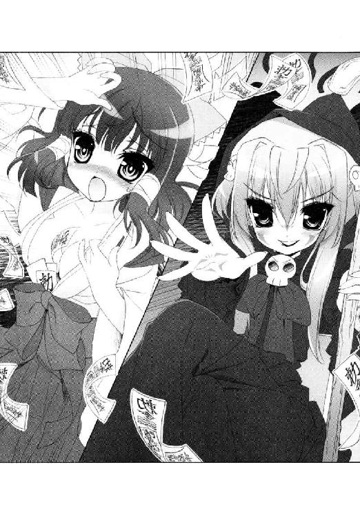
「あの、ね、ねえ、大丈夫なのこの人──」
「皇の巫女は、場の歪みに敏感。そなたたちの中にある《負》の波動を感じ取ったのであろう」
「はどー？ 波動砲？」
白目をむきかけていた巫女さんもどきさんが、ようやくトランスの果てに落ち着いたようだった。ぽろり寸前だった胸をきちんとしまい、また元の黒目がちな瞳に戻って呟く。
「以上でかしこみ」
やっぱり大丈夫じゃない気がする。
黒装束の方が、舞姫を見返した。
「つまり。そなたたちもまたＳＲＡの戦士ではない──そういうことか」
「だからなんなわけ」
「非常に残念。異質の匂いだけは感じられたというのに」
きつい色のルージュを歪ませ、ため息ひとつ。
「空舟輪廻転生同盟──正確には、Sorafune Reincarnation Allianceと言う。略せばＳＲＡか。それがわらわら前世の記憶を受け継ぐ戦士が集う組の名じゃ。この教室をわらわ《蝕》と闘う戦人の《砦》と設定することは、一千年前から決まっていた宿業ぞ」
「はあ？」
まるでわけがわからないのに、部室内にどんどん人が増えていくのだ。
目の前の魔女や巫女さんに加えて、坊主頭の僧侶（らしきもの）。
「拙僧は破戒の戦士。名は百鬼婆娑羅と申す」
ピンクのステッキ片手の魔法少女（らしきもの）。
「アタシの名前はマジック・ルーシーだよお。癒しと変化の戦士だよお☆」
「余は流星の戦士。運命を占う流刑者──」
「爆裂の戦士、降・臨！」
「わたしの生き別れのお兄様はどこ──」
「ボクは自動的なんだ──」
「麿は──」
「わっちは」
「おいどんは南方の戦士。薩摩白波でごわす！」
ちょっとバラエティに富みすぎではないか？
時代も風俗も科学的根拠もなにもかも無視し、そこにいるのはアニメや漫画の影響を受けまくりのコスプレ集団である。ずらりと並んだ異様な扮装の中心で、因業の戦士らしい魔女タランテラさんが立ち上がり、指を鳴らした。
「会長！」
芝目たちを吊っていた縄がゆるみ、いっせいに床へ落ちる。
「──さあ、いますぐこれと一緒に出ていくが良い。《蝕》との戦いに加われぬ凡夫たちに用はない」
ここまでなりきる奴らをなんと呼ぶか、舞姫はやっと思い出した。
（──電波だあああああ！）
翌日になっても、舞姫の怒りはさめやらなかった。
膨れた頰はそのままに、芝目たちＳＥＣメンバーを引き連れ廊下を歩く。
「まったく。黙ってやられるなんてどーかしてるよ三人とも」
「そーは言うけどなー兄貴、オレらだって訳わかんなかったんすよ。なあマメ？」
小柄な大道寺はそう言って、跳ねるように振り返る。彼より頭二つは大きい豆坂は、ただ黙って青タンの浮く顔を上下させた。とても怖かったと言いたいらしい。
芝目もまたうめくのだ。
「授業が終わって旧校舎に入ろうとしたであろう？ 途端に多勢に無勢で襲われたのだ」
「そそ。気づいたら逆さ吊りっすよ。魔女の大釜で煮込まれるかと思ったっす」
「魔女ねえ......」
それがまったくの比喩でないから厄介なのだろう。
ＳＲＡ──空舟輪廻転生同盟だかなんだか知らないが、あそこまで空想どっぷりの電波受信集団に部室を強奪されたままなんて、納得できるわけがなかった。
「こーいう時は、公権に訴える！ それしかない！」
「つまり先生にチクるってことっすか」
「そーとも言うね！」
肩を怒らせ、舞姫は職員室へ続く道を進む。
向こうはなりきり電波。こっちは真人間。負けるはずがない。純粋にそう思っていた。
────けれど。
「......え？ だめ？」
実際に職員室で、生徒会の顧問に窮状を訴えてみると、信じられない言葉が返ってきた。
「ああ。お前らな、少しは自分の立場を考えてみろ。無許可で教室占拠してる無認可集団の分際で、追い出されたもなにもないだろうが」
「で、でも。そんなのあっちだって一緒で......」
「馬鹿もん。あっちはちゃんと許可も取ってある」
「うそっ」
噓じゃないと、向こうはファイルからコピー用紙を取り出してきた。
創部届、と書いてある。
名称 演劇ボランティアＳＲＡ
目的 演劇を通じて、老人ホームや幼稚園へ慰問に行き、地域との交流を深めます。また、自分を表現することの楽しさを学びます。
活動場所 旧校舎二階、２０７教室
活動時間 月曜から金曜日 午後三時半～五時まで （隔週でミーティングと休養日あり ）
代表 三年Ａ組藤巻深春
舞姫たちは、信じられない思いでその用紙を見つめてしまう。
「演劇ボランティア......ＳＲ、Ａ......」
「ちっとも電波じゃない......な......」
「なにが言いたいか知らんが、藤巻はお前らの何倍もまともだぞ。早くに登校して職員室に花を飾ったり、委員会の仕事を手伝ったりな。三年にもなって部を作るというのは感心せんかったが、先生方もまあ、藤巻だからとな。下級生の手本になり、勉強の邪魔にならない範囲でと創部を認めたわけだ」
「あの、先生。ひょっとしてこのＳＲＡが、なんの略だか知らなくて──」
「はあ？ そんなもんはたいした問題じゃないだろう」
大問題なんだって。空舟で輪廻転生が同盟で戦士がいっぱいいっぱいなんだって。
「まあ、残念と言えば残念だったな。書類上はもう、あの教室はＳＲＡのものだ。これに懲りたら、手続きの方はしっかり順を踏めよ？」
「ちょっと待ってくださいよ先生。じゃあボクらも出しますよ創部届。今度は受理してくれますよね？」
今まで、さんざん部の昇格を願って却下されてきたのはこちらなのだ。
「まあ......そりゃ、聞かんこともないが......」
舞姫は食い下がる。そらご祭に人力リバーフェスタにその他もろもろ。今ならもう、『単なる美少女研究会』と一笑に付されることはないはずだ。
「それでも、結果は同じだぞ。同じ教室は使えん。順番だからな」
「なんで！」
「ああもう、しつこいぞ淡谷！ こっちはな、長い会議に授業の準備に部活の監督に教頭のゴマすりにプライベートもひっくるめてすばらしく猛烈に大がつくほど忙しいんだ！ いいな！ いいな！ 人間っていいな！」
「でも」
「が──────────────────────────っ！」
吠えられた。
「やめた方がいいわよ。今はなにを話しても無駄」
ガウガウ吠える狂犬を相手にする気分だった舞姫の肩を、そっと叩く手があった。
振り返れば、女子生徒がいた。やや小柄で、背中までのロングヘアは濃い栗色。ヘアバンドをつけて聡明そうな額を出している。こちらがかろうじて聞こえる程度の小声で、こっちに来てとささやき、職員室脇の印刷室へと舞姫たちを避難させた。
「噂だけどね。先生、プライベートでご家族とうまくいってないみたい」
「そうなの？」
印刷室から職員室の中をうかがえば、吠える生徒会顧問を、同僚の教師たちが必死になだめている。
「安藤先生、落ち着いて」「くそおう、さよりいいいい、なぜ父さんのことをそんなに避ける──っ！」「落ち着いて！ ここに娘さんはいませんから！」
大変なことになっているようだ。
「とりあえず、礼を言うべき......なのであろうな。ええと──」
言葉に迷う芝目に、少女はあらためて淡く微笑んだ。
「別に、気にしなくていいから。大したことはしてないし」
「あらまあっ、そこにいたのね藤巻さん！ お願いしたプリント、コピーしてくれた？」
いきなり女性教師が、印刷室に踏み込んでくる。彼女はすばやく振り返って、その女性教師にも愛想を振りまいた。
「ええ。終わったところですよ。すぐ持っていきますから」
そのままいつまでも微笑んでいた。にこにこと感じよく朗らかに。
（ふじ......まき？）
まさか。
「今頃は、きっと先生方に抗議してる頃であろうと思うてな。ほんに大当たりぞな？」
「「「あ──っ！」」」
やっと思い出した。舞姫たちは指をさしてしまう。
「ある。あるっすよあの痛がゆい魔女の面影！ ほらこことかそことかあそことか！」
「豆坂構成員、至急マジックを持ってくるのだ。赤と黒と二本！ 頰に塗って顔に塗って、それですべてがわかる！」
「ふふ。ほーんとおもしろいぐらいに慌ててくれるのね。全部演技だとは思わないの？」
「え」
藤巻深春は、平然と問い返した。
「わたしたち、演劇ボランティアのサークルよ？」
そう言われてしまうと、次の言葉がみつからなかった。
あんなに特異なキャラ立ちをした生徒が、五中の中に何人もいるとはとても思えないのだ。芝居の一環だと言われてしまった方がよほど腑に落ちる。
「じ、じゃあ、昨日のあれは──」
「然り。かように当事者でもころっと騙されてくれるぐらいの偽装は必要なのじゃ。《蝕》に立ち向かう戦士たるものな」
やっぱり痛いやつじゃないか！
「ね、ね、猫かぶり！」
「なんとでも言いなさい。ＳＲＡの加入条件は、戦士の自覚をおくびにも出さない高度な偽装技術の会得よ。日常的に『変』をばらまいているあなたたちとは違うぞなもし」
「変とか言うな────っ！」
藤巻深春は、コピー機の上に積んだ授業プリントを抱きかかえると、一瞬だけ魔女タランテラの歪んだ口許で笑ってみせた。
「さて。そなたらＳＥＣとわらわのＳＲＡ。先生方が信頼するのはどちらであろう？」
「ミハルー、まーだー？ 早く部活いこっ」
緊迫した印刷室内に、ひどく明るい声が飛び込んでくる。今度はショートボブの毛先を、ワックスで外はねに跳ねさせて、かなり派手めな印象の女の子だ。
「もう。みんなね、すーっごい待ってるよお。プリントもってくなら手伝うから」
「あっ、ごめーん。いま行くいま行く！」
そうして一般モードの深春と仲良くじゃれあう姿は、ごく普通の友人関係にしか見えない。
だがこの声。顔。意外に大きな胸の揺れ具合とか。
まさか──清楚にトランスしてストリップしていた巫女さんか？
「そうそう。部室にあった荷物。全部外に出してあるから。さっさともってかえってね？」
「よろしくかしこみ☆」
電波のステルス迷彩。
陽気な巫女のウィンクに、とっさに浮かんだ形容詞だった。
「──ずるい！ 電波ゆんゆんのくせに普通なんてずるい！ 社会生活とか営めちゃうなんて詐欺だ！」
舞姫の悔しさは、家の中で発散することしかできなかった。
「先生たちもまるっと信じてるし！ 信じらんない！」
「たしかにねえ、うん......。そこまで綺麗に手続き踏んで偽装されちゃうと、芝目くんたちじゃ挽回は難しいかもしれないねえ......」
「さりげなく認めてるし」
変人集団で悪かったな。
（どーせあいつらにも見透かされてるよ）
二段ベッドの上段にいるこちらを見上げる弟の顔は、少し昔の自分そっくりだ。腰までのばした長い髪。ワインレッドのフレアスカート。そしてボタンのはだけた白いブラウスの下には、薄く光沢のあるジョーゼットのシュミーズがのぞいている。
同じパーツが作る表情は、良く言えばより優しく、悪く言えばやや頼りない。
男装して五中に通う舞姫のかわりに、弟の雪国は、女装して青美女学院に通っているのだ。
「べつに、今後いっさい活動できなくなったわけじゃないんでしょう？ 部室はそのままあげちゃって、新しい部室を探せばいいんじゃないの？」
「やられっぱなしで？」
「平和的譲歩ってやつだよ。ごねてもいいことないじゃないか」
マイルドなご意見である。
彼のこの、日向で草をはむウサギのように穏健きわまりない精神を、半分でもわけてもらえれば、もう少し平穏に暮らしていけるような気がするのだ。
「......なんでユキグニは男の子なんだろう。実は隠れておっぱいあったりしない？」
「ないよないよ全然ないよ！ ひひゃうう！」
ベッドから飛び降りがてら、弟に抱きついた。ついでにブラウスからのぞくシュミーズの間に手を突っ込むが、やっぱりつるっと真っ平ら。
「くす、くすぐった、あの、そこはだめ、はう、うひゃううう！」
「おかしいなあ」
＊＊＊
一方、市内の某所。
長く待ち続けた留守番電話には、一件だけ返信が吹き込まれていた。
すべてこちらの気持ちを満足させることのない、おぼつかない謝罪の言葉ばかりだった。
『──あーもしもし。俺だ。さきほどはメッセージを、どうもありがとう。その、話はすべて聞かせてもらったのだ』
だからなんなのだ。
『たしかに約束の期限は今日までだったが、もう少し待ってはもらえないだろうか。いや、今さら反故にするつもりはまったくないのだ。ただ、少々不測の事態が起きてしまっている。これを解決しないことには、君の願いを叶えることも難しいのだ。だから──』
言い訳など聞きたくない。
彼女は黙って携帯の通話を切る。
──はたして彼は、こちらとの盟約をはたす気があるのだろうか。
焦る心をしずめるべく、彼女はかたわらの人間に茶の入れ直しを命じた。
＊＊＊
おーらいおーらいおーらい。
大道寺の合図で、最後の畳が教室内に運びこまれる。
「なんかだいぶ狭くなっちゃったね」
「でもなんとか全部おさまったではないか」
「もー他に荷物ないっすねー」
ＳＲＡのメンバーに言われた通り、舞姫たちは部室の引っ越しをはじめた。今度は同じ旧校舎でも一階のつきあたりだ。元の部室の真下にあたる。
古くは音楽室として使われていたらしく、壊れて音の出ないオルガンが、何十台も埃をかぶって積み重なって、窓にたどりつくことができなかったぐらいだ。それでも懸命に掃除をした結果、元の荷物と畳を敷くぐらいのスペースを確保することができた。
「狭いがまあ、仕方がない！ ここは同じ旧校舎の住民として、あちらさんとは仲良く共存していこうではないか」
「ところでかいちょー、オレのコレクションボックス知らないっすかー？」
「しらんぞそんなもん」
「えー、まいったな。あれがないとなるとちょっと危険......」
大道寺が、持ち込んだ荷物の段ボールをひっくり返してぼやいている。
その瞬間、床が激しく揺れた。
地震のような衝撃は、やがて足下からではなく頭上からやってくることに気がついた。
一定のリズムで撃ち込まれる騒音に、老朽化が進む天井が揺れ、そこにぶら下がる蛍光灯が揺れ、そして蛍光灯の笠に残った埃が床へ、舞姫たちへと分け隔てなく降り注ぐ。
「......おれ、コーヒー」
悲劇なのは豆坂だ。彼はちょうど、湯沸かしポットからお湯を注ごうとしていたらしい。注いだばかりのマグカップには、セメントのような埃がこんもり浮いていた。
「コーヒー......」
「ボクが抗議してくるよ！」
「兄貴！」
舞姫は走った。
「うるっさいんだよキミたち！」
扉を開け放った先には、道場があった。
「なにやってんの......」
「鍛錬」
誰かが答えた。
「たんれん？」
「決戦に呼ばれても、武具が使えなかったら意味がない」
そう言ってまた、手元の棒をぶんぶんと振り回すのである。
そろって体育ジャージだったり制服だったりお手製のローブだったり、とにかくめいめい好き勝手な格好で、打ち合いをしたりサンドバッグを叩いたりしている。
少年は、剣士ではなく槍か棒使いを志望しているらしい。正式な型などあってないようなものだが、格ゲーにおける勝利の決めポーズだけは鮮やかである。
さらに脇では黒いローブの少女が、両手を突き出したまま叫んでいた。
「紅蓮の炎より出でよ、猛き魔神。灼熱のイフリート！」
すぐさまそれを、鬼のコーチが飛んできて責めたてる。
「だめじゃだめじゃ！ なんたる弱腰。体内での理力の練りが足りなすぎる！」
「すいません魔女タランテラ！」
「戦士を名乗る者なら感じられようぞ。己の内に流れる清き波動を。視えるはずじゃ。空間に満ちる多量のエーテルを。操り、そして放出するのじゃ。さあいま一度！」
「はい！」
激しい駄目だしに泣きそうになっている転生戦士さん。脳電波の出力がたりないことを責められて、どうして彼女はそんなに悲しいのだろう。
「藤巻さん......」
魔女がわずかに振り返る。
「その無粋な名でわらわを呼ぶのは誰ぞ？」
「あのさ。うるさすぎるんだけど」
「かようなことはわらわの知ることでない」
横暴ジャイアンとあだ名をつけたくなった。
「ちょっとね、そりゃないんじゃないの？ いくら居住権がそっちにあるからってね、先生がこれ見たら絶対あきれかえるって」
「報告したいのであればすればよかろ。勇気があればの話だが」
なんだって？
そこで舞姫が見たのは、魔女の手にあるタロットカード──ではなく数枚の写真である。
あとから追いついてきた大道寺が叫んだ。
「あー！ オ、オレのスペシャルコレクション！」
スペシャルコレクション？
「ふむ。かようなものであろうな。これは三年Ａ組の川上か？ こちらは二年の小野寺。せっかくの水泳授業をかような姿態で残されていると知ったら──どう思うであろうな」
カードの手札を披露するように見せびらかす。なんとその写真は、よりにもよってこの学校の女子だけを厳選して撮影した水着写真だった。
「この馬鹿もんが！ あれほど危険物の扱いには気をつけろと言ったのに！」
「ちゃんとしまったつもりだったんすよ会長っ！」
怒鳴りつける芝目に、涙目の大道寺。ペインティングの魔女は得意げに目を細めた。
「わらわの精錬探索呪法《虱潰し》にかかれば、ロッカーの裏から後ろ暗い秘宝を見つけ出すことなど造作なかったわ」
「ただのガサ入れじゃないすかー！」
「風情のない呼び名は好かぬ」
漁ったことは否定しないようだ。
ともかく──一番握られてはいけないＳＥＣの暗部を、彼らにおさえられてしまったわけだ。
絶望的だった。
それからは、ひたすら忍耐の日々だった。
部室を取り戻すどころか、一階の仮部室の、薄暗く小さなお座敷スペースに縮こまり、天井越しに彼らの活動をうかがうのだ。
本日の転生戦士の訓練内容は、『最終決戦にのぞむにあたって』ということらしい。
──わたしは英雄をのぞまない。必ず生きて帰ってらっしゃい！
──俺、この決戦が終わったら結婚するんだ......！
──兄の敵。ここで必ず討つ！
──敵が誰だろうと関係ねえ！ この右腕が鳴り続けるかぎり、俺の戦いは終わらねえんだ！
誰かが決めの声をあげるたび、あとから地鳴りのように拍手と歓声がわきあがり、ぱらぱら、ぱらぱら、天井から埃と塗料がセットで落ちてくる。
「......戦時中のさあ。空襲警報が鳴る中で生活するのって、こんな感じだったのかな」
「さあ。俺はよく知らんが」
一度うるさくなるとしばらくおさまらないので、満足にお茶も飲めない。こうなるとモンペに防災頭巾が欲しくなる。
原因になった大道寺はすっかりへこんでしまい、それこそ背中を丸めて千人針でも縫いはじめそうだ。
「うちの学校も、けっこう変なやつが多かったのだなあ」
感慨深そうに芝目が言う。
空舟五中は、誰が見てもやる気のない普通の中学校だ。でもその『普通』の下には、本当に身も心も平均に近い人と、努力で普通を押し通している人がいるのかもしれない。
たとえば隠れ乙女小説家の古葉鳥子とか。頭の上にいる転生戦士とか。
芝目たちのように、はみ出きることもできない普通レンジャーたち。
「解放中なのだな、自分を」
「気持ちいいんだろうなあ......」
天井が揺れる。転生戦士たちが暴れている。壁にかけてあったベートーベンの肖像画が落ちていく。
「そうか」
芝目がふいにつぶやいた。
「周りにばらしてどうにかすることが無理なら──染まったらどうだ？」
うつろに千人針だった大道寺も、舞姫も豆坂も、不思議そうにその顔を見返した。
＊＊＊
数日後、作戦は粛々と実行に移された。
まずは月の明るい夜である。
「──ちょっと。あんたたち、こんなものを部室に投げ込んでくれたみたいだけどね。いったいどういうつもりなわけ？」
藤巻深春が配下の転生戦士を引き連れて、舞姫たちの前にあらわれたのは、日付が変わる少し前だろうか。
そこは、人力川沿いに位置する、古びた工場跡地だった。
トタンで区切られた塀は半分以上が壊れ、私道との境目はブタクサに覆われ見えなくなっている。中の工作機械も大半が撤去され、屋根も瓦解し、残された廃車やドラム缶が、野良猫の住み家として使われるばかり。
舞姫は、踝にまで届きそうなロングコートの裾をはためかせ、工場の軒先に足場を取っていた。
「べつに、大した意味はないよ。誰もいないところで話ができたらいいと思っただけ」
「ふざけないでよ」
藤巻深春の方は、道中できちんと着替えてくることができなかったのか、私服の明るいカットソー姿。他の転生戦士たちも、一般生活の匂いをかなり引きずっていた。
深春が投げ捨てた紙切れが、舞姫の足下にまで飛んでくる。それは、この廃工場にまで来るよう、舞姫たちが書いた呼び出しの手紙だ。
「『もう君たちの役目は終わった。あとはこちらに任せろ』って、いったいなんの権限があってそんな......」
「だってそうだろう？ キミたちは、《蝕》の現出ポイントであるあの部室に目を付けて、あえて門番という名の捨て石の役を買って出てくれたはずだよ。違う？」
深春の眉がはねあがる。
「もういいんだよ、可愛い魔女さん。やっと《組織》から命令が下ったんだ。これからは本職のボクらに任せてくれればいいから」
「なんですって？」
わずかに夜風に揺れる髪をかきあげ、ただ見下すようにたたずむだけ。
そして、背後のトラックヤードの闇から、新しい人影が進み出る。
「──あ、淡谷雪国が二人!?」
「その答えは適切ではありません。私は淡谷雪国という存在から派生した相似性の空箱。いずれくる終末のために用意された棺です」
髪型、顔のパーツはまったく同じ。だが藤巻深春たちが知る『淡谷雪国』は少年のはずだった。目の前にあらわれたのは、ぴったりと肌に貼り付く黒のミニワンピースを着た少女である。ロングブーツと長手袋で四肢を覆い、手には背よりも高い杖を握っていた。
少女のような、少年のような、どちらでもない──完全なる中性体。
そして気づけば、ロングコートを脱ぎ捨てた『淡谷雪国』すらも同じ格好をしているのである。
「なに......どっち、どっちが本物なの？」
「男？ 女？」
ざわめく向こうを、双子たちはただ無表情に見つめた。
「あなたたちは資格を持たない」「ただ行き過ぎるだけ」「終末の刻まで」「生き延びる有機的物体」「それこそが幸いであることを知らず」「ただ無為に──」
そのとき、また敷地の別方向から音があがった。大量のスクラップらしい金属がいっせいに崩れ落ちるような騒音だった。
「なんなの!? なにが起きて」
あわてふためく深春たち。すぐさま表情を崩した舞姫が、叫んで杖をかまえ直す。
「ばか。《蝕》に決まってるだろう!? 嗅ぎつけてきたんだよこの場を！ 早く逃げろ！」
同じ顔の相棒が、隣で防御の呪文を唱えはじめる。尋常ではない雰囲気にのまれた藤巻深春たちは、何度も振り返りつつも、最後は小走りに工場の外へと走り出す。
「この場はボクの《複写錬成陣》が食い止めるから、早く逃げろ！」
「マスター、来ます！」
まるでなにかの衝撃波が飛んできたかのように、杖でそれを受け止め打ち返すと、舞姫もまた走った。
そのまま走って走って、駐めてあったトラックの陰に隠れてやりすごす。
「......第一段階、突破っすね」
「なんとかやれたかなあ」
同じく車体に隠れていた大道寺が、こっそりと話しかけてくる。
彼が手渡してきたノートには、『設定表』と書いてあった。開けば今回の作戦で使用されている技名の設定資料が、事細かに書き連ねてあるのだ。
「えーっと、ボク間違えてないよね。ふくしゃでコピー......どういう関わりがあるかいまいちよくわかんないけど」
「そこがコツなんすよ。雰囲気が大事っつーことで」
「......これも雰囲気作りってことなの？ 大道寺くん......」
あとから逃げてきた弟が、下着の見えそうなミニ衣装をひっぱりながら半ベソをかいていた。
「せめてカツラを......」
「似合ってるっすよ、ユキちゃん」
「うっ、うっ、うっ」
半ベソが全ベソになりつつある。
このコスチュームの使用を含め、ＳＲＡに対抗する設定を考えたのはＳＥＣである。痛々しい本性を暴露して部室を奪還するのが無理なら、いっそ同じレベルにまで染まってみたらどうだろうというのが芝目の提言だった。
「だいたいわかってないすね、淡谷オトートは。同じ顔の同じ格好ってのはビジュアル的にも設定的にもぐっと来るんだって。コピーとかクローンとかＳＦ的な要素も付け加えやすいし！ 利用しない手はないっす」
「だからってぴったりミニ衣装にしなくても！」
「そこは萌えであえて！ オレはわかってない野郎にはなりたくなかった！」
「わかんないよ！ わかりたくないよ！」
生まれてからずっとつきあってきた双子という環境に、そんな利用価値があったとは知らなかった舞姫だ。
さきほどのスクラップの落下も、物陰に隠れて待機していた豆坂の仕業である。それをあえて《蝕》の仕業と言い切って、相手の出鼻をくじく。ひとまずは成功のようだった。
「ともかくさ、まだまだこんなもんじゃないでしょう？」
「もちろんすよ！」
大道寺もまた、首にかけていたゴーグルを付け直し、懐からモデルガンを取り出す。彼もまた、この先の戦いに加わる予定だった。
「いーやーだー！」
めそめそと泣き言をたれる弟を叱咤して、舞姫たちはまた走り出した。
コンセプトはスタイリッシュな学園バトルアクションもの。日本の特定のスポット《門》を通じて現れる《蝕》という敵を倒す地下組織の若きエージェントたち。クローン双子に二丁拳銃使いの狂戦士。
廃工場の一角に、強大な敵が暴れていると思って、見えない化け物と戦い続けるエア学園異能バトルだった。
「ひゃはははははあっ、撃て撃て撃てぇ──っ！」
「くそっ。応援はまだ!?」
「撃ちやがれぇ──っ！」
こちらの展開するストーリーに、向こうを引きずりこまなければならないのだ。
さあ解放しろ、自分を。宇宙に漂う塵のようななにかをアッパーな魂でつかみ取れ。
「うおおおおおおおおお！」
僧兵・豆坂の拳が唸って光って敵を殴りつけ、けれど空想上の敵はちっとも倒れてはくれないのだ。
「こ、この化け物め......」
地面に膝をつき、見えない敵にやられた腕をおさえながら、こんなセリフもナチュラルに出てきてしまう。
「精錬防御呪法・第二陣《暁の盾》！」
「藤巻さん!?」
そんな時、負傷した舞姫の前に躍り出たのは、さきほど逃がしたはずの藤巻深春だった。
「藤巻さん......どうして......？」
「そのような無粋な名前でわらわを呼ぶな」
まなざしは敵（？）の方向へ向けたまま、深春は低く吐き捨てる。
「そなたらが苦戦しているというのに、わらわがおめおめと引き下がれるわけがなかろうが。わらわは因業の戦士。この日のために訓練を続けてきた兵よ」
そして、後ろで様子をうかがっている部下たちに発破をかける。
「さあ。なにをしている者ども出会え！ 今までの成果を見せる好機ぞよ！」
「で、でもミハル。ここは外だし、こんな普通の格好じゃ......」
「格好なぞ、つけている場合ではない！ 家で！ 塾で！ 学校で！ 暇があれば、転生前の自分を思い描いていたのは誰か!? その能力を考えていたのは誰か!? みんなずっと願ってきたのではないのか!?」
「......う、うん。そ、そうだけど！」
「皇の巫女！ 結界を！」
派手な私服の少女は、それでも巫女らしくなろうと髪をなでつけ、パンと柏手を打った。
ああ。
本当にこの人たち、身も心も素晴らしくイッちゃってがんばる人たちなんだ──。
別人のように活き活きと戦いに加わっていくＳＲＡの姿に、舞姫は泣き笑いを浮かべたくなるのだ。
そしてこの瞬間、舞姫たちと転生戦士たちの心は、分かつことなく一つになったのである。
（でも、まだだよ芝目くん）
こうしてエア学園異能バトルに参加して、彼らと同じ目線に立っただけではだめなのだ。彼らの懐に飛び込んで、その上で心の底から「すごい」と思わせて、部室を返してもらうことが目的なのだ。
その最後の一押しがなんなのか、いったいどうするつもりなのか、提案者の芝目は最後まで言わなかった。
さあ。どうするんだ、芝目夏彦──！
「すまない、待たせた！」
その時、聞き慣れた声が飛び込んできた。
「準備に少々手間取ってしまった。もう大丈夫。一発で決めてみせるぞ」
「会長！」
五中の学生服姿の彼は、エアバトルが続く工場内に立つと、手にしていた長物の袋の紐を解いた。
遠目には、日本刀のように見える。
彼は大きく歩幅をとり、腰をおとして居合いの構えをとると、
「吹き飛ばされたくなかったらどけ！」
珍しくドスのきいた一喝。舞姫たちは、目を見合わせて壁際へ散る。
「──斬双剣──」
閉じていた瞳をカッと見開き。
「乙滅我・改！」
叫び、刀を抜き放つ。その瞬間、ただの脳内電波の共有によるエアバトルではなく、壁際にとまっていた廃車のトラックが本当に爆発した。
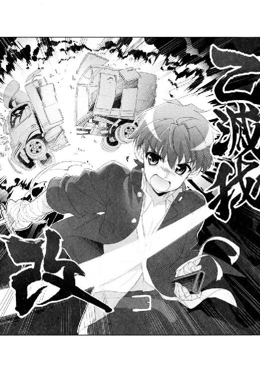
「うそお......」
舞姫のつぶやきは、その場にいた全員のものだったろう。
「──滅びよ。悪よ」
物理的にゆらめく炎。真っ二つに両断された鋼鉄の車。切っ先を建物越しの月に向けたまま、この日、芝目夏彦は伝説の転生戦士になったのだ。
＊＊＊
結論から先に言えば、旧校舎の二階の部室は、ＳＥＣのもとに返還された。
この世はなべて弱肉強食。本当に強い戦士様の要望の前には、部室の一つや二つ捧げてしかるべしということなのだろう。
仲間である舞姫たちにまで、「まさか本物なの？」と、不審げな顔をされてしまうことが、少しだけ心苦しかったが、本当のことを話してしまうわけにもいかなかった。
芝目夏彦はその日、依頼人に約束の品を渡すため、市内の外れにある小さな喫茶店に足を運んでいた。
「待たせてすまなかったのだ」
「いいえ。ちょうど今きたところですわ──芝目夏彦さん」
背中を覆う巻き毛もゴージャスな、青美女学院の三年生。彼女は胡蝶の宮こと蝶間林典子と言った。
「......この間は、急な相談ですまなかったのだ。おかげでいろいろと助かった」
「問題が解決しないことには、依頼も遂行できないと言われてしまえば、協力せざるをえないですわ」
「おかげで無事解決できたのだ」
「はじめは敵に塩を送りたくない方便かと思いましたのよ」
だから違うというのに。
彼女に頼んだのは、廃工場のトラックが爆発したと見せかけるための特殊効果である。本職の美術スタッフを動員した爆破シーンは迫力満点だった。やりすぎなぐらいに。
凛々しさと厳しさの境界に立つような表情で、胡蝶の宮はこちらを見据える。芝目は余計な問答は無用とばかりに、彼女の向かいに腰掛けた。
「そう思うのなら、早く依頼の品を見せてくださらない？」
「ああ、これを」
芝目は、テーブルの上に封筒を置いた。彼女の前へと滑らせる。
「学校での雪国さん......本当に撮ってくださったのね」
「これで証明できたであろう。俺と淡谷雪国の間に、恋愛感情はまったくない。あなたのライバルにはなりえないのだ」
「そうね。そうですわ。どれも素敵な雪国さんで......まああ、授業中の写真まで......」
「それじゃあ、長居は無用だ。俺はこれで失礼する」
たわいのない校内のスナップ写真を、うっとりと眺めている彼女を置いて、芝目は立ち上がった。だが、ちょうどお冷やを運んできたウェイトレスとぶつかってしまう。
「まあっ。も、申し訳ございません！」
上着のパーカーに水がかかってしまい、芝目はあわてて上着ごと、荷物のメッセンジャーバッグを身から離した。
とたん、ひらりと一枚、写真が床へと落ちる。
「......芝目さん......これは......？」
写真を拾ってくれた胡蝶の宮の声が、妙に冷たい。芝目は、あわてて取り返そうとするが、彼女はがっちり写真を握りしめていた。
それはエア学園異能バトルをする時に、淡谷家の双子が着ていたミニコスチュームを撮った写真だった。芝目としては舞姫だけを撮ったつもりだったが、髪も短いその姿は、『女装した雪国』と思った方がはるかに近い。
「......そう。そうですの。適当な写真をライバルに渡して油断させたところで、大事な本命は自分独り占め──そういうことですね！」
「ち、違うぞ胡蝶の宮！」
「芝目さんの噓つき！」
助けて転生戦士。
現実の悪夢との戦いは、まだ、終わりそうにない──。
その後の話♯３
キンコンカンコン──。
間違えてエンピツを落とした時は、後ろの席の女子が拾ってくれた。今日も色目たっぷりなその笑顔を受け流し、モテキング舞姫は教室を出る。
次の授業は国語だが、廊下のロッカーに便覧と辞書を入れっぱなしなのだ。
ごそごそとロッカーの中をあさっていると、ポニーテールの少女が近寄ってきた。
「あれ、どしたの古葉さん」
「あのね、ちょっと聞きたいんだけど。その、阪東妻三郎がマキノ映画製作所で主役デビューをしたのが一九二三年の『鮮血の手型』で、二年後に『影法師』と『雄呂血』に出たのよね。『鮮血の手型』の詳しい内容ってわかる？ ネットでいろいろ調べてもいまいちよくわからなくて──」
「うわ、だめだめだ」
「やっぱりこの程度は知ってなきゃ失格なの!? 時代劇マニアってのは！」
「いやそうじゃなくて。国語の便覧忘れた」
家に置いてきてしまったらしい。
鳥子の方は盛大なため息をついた。
「......紛らわしい真似しないでよ......人がせっかく調べてるのに......」
「ごめん。そーいうわけで古葉さん、チャンバラじゃなくて便覧とか持ってたりする？」
「うち、今日は国語ないもの」
「持ってかえっちゃうか。くそう、優等生だ」
「あんたに言われたくないわよ」
そう、すこぶる優等生な雪国のふりをしないですむなら、こちらだって国語の資料集ぐらい置きっぱなしにしておきたいのだ。
「どうしようかなあ......」
「これ、使って」
ふいと。横から綺麗な手がのびて、舞姫に国語の便覧を手渡してくれた。
「キミは......」
「あとで返してくれればいいから」
そう言ってウィンク一つで去っていったのは、Ａ組の藤巻深春だった。
旧校舎の電波を綺麗に隠し、ごくごく普通の女の子の匂いがする後ろ姿。まるでモテキングに愛想をふりまくラブハンターの一人のようである。
気づけば、鳥子の視線が冷ややかだった。
「......ほんとーに、モテキングはおもてになって素晴らしいわね」
「いや、どっちかというとこれはね......」
舞姫がちらりと横目で隣のクラスを眺めれば、今度は芝目夏彦が男子生徒に取り囲まれていた。
「なに、体操着を忘れた？」
「ならこれを使えよ芝目」
「いいや俺のだ」
「オレのをぜひ！」
「いらんいらんそんなにズボンばっかいら──んっ」
大小さまざまなジャージを突き出されてモテモテになっていた。
──ＳＲＡの転生戦士たちがね、すごい勢いで助けてくれるんだよ。
「なんか......久我原がいっぱいいるみたい」
「は？」
「うんうん。ひさしぶりに電話してみようかなあ」
妙に声が聞きたくなってしまい、舞姫は心に決めて教室へ歩きだすのだった。
「──でね、うちの会長なんか、いろんなクラスのＳＲＡメンバーからジャージ貸してもらってね」
『あの男の名前を口になさらないでください』
「え」
がちゃん。つーつー。
──乙女心は、いろいろと複雑らしい。
「久我原ー。久我原ー。久我原へんじしてよー。久我原ー」
第４章 私たちの生徒会長
──午後十二時十五分。お昼の鐘が鳴った。
（ふう）
四時間目の授業が終わると同時に、私立青美女学院中等科は一時間の昼休みに入る。
一駿河蜜をはじめ、教室におしこめられていた少女たちは、つかのまの開放感に沸き立った。たとえば家人に持たされたランチセットを広げる場所を探して思案顔の人。ソロリティや委員会というくくりで、独自の昼食会に参加する人間もかなり多い。
一応、本日の蜜は、清野から持たされたランチボックスを持ってきているが──。
「蜜さん蜜さん蜜さん！」
呼び止めてきたのは、生徒会にもローズロワイヤルにも所属していない、一般組の友人だった。
「ねえ蜜さん。今日は、お教室で一緒に召し上がるでしょう？ いいものを手に入れたの」
「いいもの？」
ほら、言わなくてもわかるでしょうとばかりに、加藤奈々美嬢は目を細める。お弁当箱をおさめた巾着の紐をほどき、ちらりと見せてくるのは──ああ、甘美なるコンビニの新着スイーツ！
隠れ貧乏舌の蜜と、外部入学組の奈々美は、意外なことにうまが合う。
家から持ってきた味気ないお弁当も、最後に素敵な庶民デザートが待っていると思えば食欲もわく。蜜は一も二もなくうなずいて、お昼を食べるために机の移動をはじめた。
本当に、『あの人』と知り合う前は、彼女ら一般組からの差し入れだけが蜜の満腹感を満たす生命線だったのだ。
「......ねえ、奈々美さん。どうして今日は、こんなにお教室で召し上がる方が多いのかしら。不思議よね」
見渡して、ふと思う。なんだか少し、人が多すぎて窮屈なぐらいだ。
窓の外はよく晴れているし、いつもならもう少し庭やカフェテリアに行く人間がいそうな気もする。
「蜜たちだけでも、お庭に行きます？」
「あら。それはだめよ、蜜さん。それじゃ放送が聴けないじゃない」
きっぱりと、断られてしまった。
おおかた同じような理由で、クラスメイトたちは教室にとどまっているのだろう。蜜は自分のことでもないのに落ち着かない気分になった。
お昼の校内放送が、こんなに周りの注目を集めるなんて、今までにあっただろうか。
『みなさまごきげんよう！ ランチタイムセッション、ときめき青美タイムのはじまりです──』
なにせ、今週の特別ゲストと言えば──。
＊＊＊
生まれた時から双子だった。
べったりと四六時中一緒にいた幼少期を経て、淡谷家の双子の姉弟は、それぞれ別々の小学校へと進学する。
長女の舞姫は私立の女子校へ。
長男の雪国は公立の共学校へ。
おたがい自分の学校で居場所を作って過ごしてきたが、中三になって転機が訪れる。舞姫は所属する生徒会の仕事に疲れ果て、雪国は彼女の通う学校に運命の人を見つけてしまった。二人は相談の上、髪型と制服を変えて学校交換という荒技に出る。
春が過ぎた。夏が過ぎた。いろいろな事件が起きた。偽者が解決した事件もあった。本物がことにあたった事件もあった。
だからこれは、一部の人にしか言えない秘密。
青美女学院中等科・第一一八代生徒会長、淡谷『若光の君』は、二人いる──。
「......へ？ なんで？ なんで僕が？」
「なぜって、必要だからに決まってるじゃあないですか、淡谷会長！」
「そうですよお、淡谷会長！」
淡谷雪国は、生徒会室の指定席で口を開けた。見た目は舞姫仕様なヅラをかぶり、ワインレッドのフレアスカートを着込んだ『ニセ舞姫』スタイルである。
そして現在、雪国は部屋の中に、二人の少女を招き入れていた。
彼女たちは、放送部と新聞部という、青美二大報道部の代表だ。
たしかはじめのお話では、放送部の部長さんの方こそ用事があると言っていたが、主に新聞部長の芦屋桂の方が前面に立ってまくしたてている。
トレードマークの赤いセルフレームの眼鏡を押し上げ、大げさに両手を広げ、
「ビコーズ！ ですからそろそろわたくしども三年も、次代への引き継ぎを考えたい頃合いではありませんか。華やかにして忘れられない花道を制作。そこでぶち上げたのがこの企画。われわれ新聞部と放送部さんの夢のコラボ！ なのですよ」
「お昼の放送ジャック！ なのですよ」
「いい企画だと思うのですよ。われわれとしても」
雪国は、二人が提出した企画書に視線を落とした。
新聞部が学院内で『青美日報』という新聞を発行しているように、放送部は昼休みの校内放送を受け持って、小さな番組を持っている。『ときめき青美タイム』なる可愛らしいお名前の番組に、他でもない雪国──生徒会の淡谷『若光の君』を、特別ゲストとして招きたいのだそうだ。その名も『リメンバー若光の君政権』。
「なんか仰々しいねえ......」
「まさか。三日かけて学院内のリスナーからの質問やリクエストもばんばん受け付け、番組の感想は翌日の青美日報に反映！ 大いに盛り上げるつもりであります」
「歴史に名を刻みましょう！ 淡谷会長！」
「いや......そんな勝手に言われてもさ......そもそも僕、出るなんてひとっことも言ってないよ」
「「出ないとおっしゃる!?」」
性格的なものもあるだろうが、ぶっつけ本番でトークなど考えるだけで頭が痛くなってくるのだ。
「コメントのハガキぐらいなら書くよ。メールの方がいい？ ラジオネームはだんしんぐ☆ぷりんせす、とかで」
「ああ、それはおかしいですねえ。実におかしい。会長さんはもうノリノリで各種の物まねトークとノリツッコミの練習まではじめてらっしゃるとうかがっていたのですが」
「はあ？」
いつのまにそんな話に？
芦屋部長は、放送部長と抱き合いショックを受ける真似を中断し、背後の壁を振り仰いだ。
そこには表情らしい表情を浮かべないシノビの少女が、影のように控えて立っているではありませんか。
「......久我原さん？ なに変なこと吹き込んでるの？」
「お出になるべきかと思いまして」
「なんで」
「宣伝です。立候補者を集めます」
相変わらず彼女は無機質に答える。
それを言われると、実は雪国も弱い。なにせ現在の生徒会の懸案事項は、いっこうに数が増えない選挙立候補者を一人でも増やすことなのだ。
「......で、でもさ。僕ってほんとこういうの苦手で......小学校のホームルームで『きょうのお話』とか喋らされる日は勝手にお腹が痛くなるぐらいで」
「淡谷生徒会長」
あえてさゆねは、ふだんは言わない呼び方をした。
「森の中で旅人が、飢えて倒れておりました。森の動物たちは、旅人のためにいろいろな食べ物を捕ってきましたが、ウサギだけはなにも捕ることができません。与えるものがなにもないことを恥じたウサギは、あえて火の中にその身を投げたという──」
「久我原さん。それっていきなり仏教説話が説きたくなったわけじゃないよね。暗に僕にいじられてこいって言ってるんだよね」
「いっそ食いつくされてきてください。組織のために」
サド降臨。
家に戻れば、姉の舞姫にまでおもしろがられてしまった。
こちらがリアル雪国に戻って、趣味の庭いじりをしていると、二階の窓枠に尻をのせたまま、平然と話しかけてくるのだ。
「へー。いーんじゃないの。生徒会のこと取り上げてくれるんでしょ？ ちゃんと録音してボクにも聞かせて」
気楽に言うな、姉上様。
家の祖母対策にカツラをかぶり、珍しくチュニックワンピースなどを着ているが、後ろの裾が窓枠から外にはみ出てしまっているため、風がふくたびめくれあがって中の下着が見えてしまう。ひらひら、ネコぱん。ひらひら、ネコぱん。
（......ネコぱんつのくせに）
一階の庭でパンツ丸見えですよと叫ぶのもひどいと思い、雪国は気まずく目をそらすしかない。
「ぜったい何か失敗する気がするんだよね......久我原さんは立候補者ゲットしろとかプレッシャーかけるしさ......」
「台詞嚙みまくり？ あせって放送禁止用語連発？ そんなの気にしちゃだめだよユキグニ」
舞姫は、心優しい双子の姉は、涼やかな面立ちを崩さず言った。
「そこがいちばん楽しみなんだよ？」
「パンツ丸見えだよ舞ちゃ────────ん！」
舞姫はあわててスカートの裾をつかまえようと後ろを向いて、窓枠から落ちそうになっている。雪国は軍手と雑草を放り出して家の中に入る。
（なんか最近、遠慮がなくなってませんかね！）
こうなったら。彼女もびっくりな完璧生徒会長トークをして、立候補者もざくざく仕入れてやろうじゃないですか！
＊＊＊
そして、ついにやってきた月曜日のお昼休み。
雪国が聞くところ、青美日報でも事前に取り上げられ、話題性はすでに十分という話だった。さすがは夢のコラボ☆を名乗るだけはあるのかもしれない。
雪国は放送室の手前で、もう一度だけ深呼吸。
「............えー、あいすばーぐ、ぐらみすきゃっする、るすてぃかーな、なにわいばら、らじおたいむす、すてふぁにーどぅもなこ、ごーどんかれっじ、じじじ......」
「............なんですの、その胡乱な呪文は」
「平常心のおまじないだよ。薔薇しりとり。やらない？」
普通はやりませんわとまで答えられ、あわてて振り返る。
「君たち......」
「ごきげんよう、舞姫さん」
「ごきげんうるわしゅうございますわ、会長さま」
そこには、世にも珍しい人たちが勢揃いしていた。
なんともはや、だ。巻き毛も麗しいゴージャス美女と、扇片手の和風美人の組み合わせ。ローズロワイヤルトップ、胡蝶の宮こと蝶間林典子と、中等科部活連合の代表、演劇部長の長船白夜だ。
「どうしたの、二人とも......まさか」
「舞姫さんは、お聞きになっておりませんの？ あたくしと長船さんも、今日の放送に招かれておりますのよ」
悠然と微笑む胡蝶の宮。その横で、長船白夜も丁寧に頭を下げる。
「お二方の足を引っ張らぬよう、この長船、精一杯盛り立てさせていただきますわ。うふふふふ」
てっきり一人で喋るのだと思いこんでいたので、心強いというか拍子抜けというか。
一時は互いの組織を背負って対立していた三人が、同じ番組に出るというだけでも進歩なのかもしれない。
同時に、部屋の中で準備をしていたスタッフが、「ブース内に入ってください」と言ってきた。いよいよだぞと唾を飲み込む。
進行役のＤＪは、同じ三年のベテラン放送部員だった。
「こんにちは。堅くならないでくださいね、淡谷会長。お三方で楽しくトークしてくださればけっこうですので」
「あ、ありがとう」
マイクを挟んでブース内のテーブルにつく。その両脇に、白夜と胡蝶の宮が座る。
さあ淡谷雪国。清く正しく美しい生徒会をアッピールする時間だぞ。
『五秒前です』
残り三、二、一。スタート！
ＤＪが喋りはじめた。
「みなさまごきげんよう！ ランチタイムセッション、ときめき青美タイムのはじまりです──」
なめらかな滑り出しだった。心臓が早鐘のように鳴り響く。
「──はいっ。そういうわけで、今日から三日間にわたりお送りする特別プログラム。その名も『リメンバー・若光の君政権』！ 我らが第一一八代生徒会長、淡谷舞姫さんをメインゲストに、学校を代表するお客様をお招きしてのトークタイムです。ようこそいらっしゃいました淡谷会長！」
さあデビューだ。
雪国は、顔など映らないのにすこぶる渋みのある顔を作り、椅子に座る脚を組み替え、斜め下四十五度の伏し目がちに低く呟く。
「──どうも、こんにちは。会長の淡谷です」
ぶっきらぼうに、答える。その中に、揺るがない芯と、かすかなカリスマ性をのぞかせる感じで。
「......えー、なんでしょうか。今日の淡谷会長は、またいちだんと凛々しい......感じですね......？」
「いえ、べつに。これがいつもの自分ですから」
ブースの向こうで『ちゃんとマイクの方むいて』と指示が出たが、この顔と角度でないと作り声が保たないのだ。
セルフプロデュースのコンセプトは『ＣＯＯＬ～いつでも風を感じているために～』である。
「そして、若光の君とともに学院を盛り上げてきたお二方。ローズロワイヤルの蝶間林典子さまと、中部連代表の長船白夜さまです」
「ごきげんよう」
「よろしくお願い申し上げます。長船にございます」
胡蝶の宮と白夜が、順番にあいさつをする。前者が優雅なら、後者はつつましやかの代表と言ったところだろうか。
「さてさて、お二人にとって、こちらにいる若光の君とはどのような存在なのでしょう。まずは胡蝶の宮、いかがです？」
「そうですわね......共通点はそう多くないのに、不思議と通じ合うことがある不思議な関係だと思っておりますわ。競いあうことでお互いを高めていけるような」
「なるほど。良きライバルといった感じでしょうか。すばらしいですね」
たおやかな口調は、さすがに喋り慣れていると言った雰囲気だ。もう雪国の付け焼き刃などとは格が違う。
「長船さまはどうでしょう？」
「私でございますか......ええもう、私などが口にすることもおこがましいですが、あえて一つ申し上げるとするなら、会長さまは木綿のハンカチーフのよう──」
「......そ、その心は？」
「染まりやすく流されやすい」
あやうくむせそうになった。
ＤＪが必死にたずねている。
「ご、ご不満がおありになるのですか、長船さま......」
「いいええ、なにも......組織の長として、柔軟なお心は必要ですわ。ただすこおし押しに弱い御姿勢が、長船は心配と申しますか悲しいだけでございますの。この間もテニス部の練習場所を、はいはいどうぞの一言で譲ってしまわれて......」
白夜は、鶴の模様が入った扇を指先でもてあそびながら、ちらりと雪国がいるその先を一瞥。そこにはソロリティでテニス大会を開いたばかりのローズロワイヤルトップがいるのだ。
胡蝶の宮は、典雅な美貌を曇らせ、ひくひくとこめかみを震わせている。
「ねえ、どう思われます？ 向こう様の押しが猛牛のようでしたのかしら。ぶもおぶもおぶももももと。お胸も立派な乳牛のようですし......」
「............ちょっとあたくし、先日個人的に気が滅入る出来事があって気がたっておりますの。ケンカを売ろうとおっしゃるなら、買ってさしあげてもよろしくてよ。地区予選敗退の長船さん」
あああ。こちらも触れてはいけない禁句を。
「おほほほほほほ。ならあのお噂は本当だったのかしら。ご婚約者を図書委員長さまに奪われてしまったとか......すてきな醜聞？」
「おほほほほ。地区予選敗退。演劇部創立以来の失態だそうですわね」
「おほほほほ。どういたしましてですわ胡蝶・失恋の宮さま」
べきり。白夜の扇がへし折れる音がした。
ぐしゃり。胡蝶の宮の紙コップが握りつぶされる音も。
「おほほほほほほほほほほほほほほほほほほほほほほほほほほほ」
「おほほほほほほほほほほほほほほほおほほほほほほほほほほほ」
寒い！ 寒い寒い寒い！
進行役のＤＪは──だめだ、完全に妖気に呑まれて凍っている！
雪国は、マイクを独占する勢いで身を乗り出した。
「──さ、三年あさぎ組、出席番号二番、淡谷舞姫、歌います！」
ちゃーりらりらりー。らりらららー。
あっ、おーいそらのしたー。そらふねのもりにー、おとめーはつーどーいー。
前奏から間奏、繰り返し部分までアカペラで完璧にフォローした校歌（三番まであり）が、残り時間を埋め続けたという。
「よーしよしよし！ いいですね！ 盛り上がりましたね！ これなら反響も上々ですよ。さっそく日報の方でコメントを受け付けましょう！」
雪国を引き込んだ芦屋新聞部長が、小躍りしながら喜んでくれた。
彼女にとって、大事なのは『レアな出演者のレアな一面』だけらしい。出演者の寿命とか、組織の遺恨とか確執とかはどうでもいいことのようだ。
「なにが盛り上がっただよ......生きた心地がしなかったよ......」
「意外にお歌がお上手なんですね」
死にたくなかったからね。歌いましたよオンステージ。
「明日もこの調子でよろしく頼みますよ！ 会長」
「え......またすごい人とかと対談？」
カツラの下がはげてしまう。
「だーいじょうぶです！ 今度は一般生徒と楽しく交流ですから。可愛いもんです」
その言葉、信じてもいいんだね？
翌日は二日目の放送だった。
とても怖い目にあったはずの放送部ＤＪが、一夜明けて華麗な復活をとげていた。ネタふりのトークを続けるマイクの前で、ハガキが沢山つまった箱をかきまわしている。
「ほらほら、見てください会長。こーんなにいっぱい反響のメッセージが来てるんですよ。まずはためしに読んでみましょうね。こちら一年ひばり組、ラジオネーム『若光の君ファン』さんからのおはがきです──ごきげんよう、若光の君。いつも遠くからそのお姿を拝見している一生徒です」
「あ、どうも......」
「若光の君のクールなたたずまいがとても好きです。迷える子羊のようなわたくしたちを率いてまとめてくださる姿に、わたくしも心を強くしてがんばろうと思えるんです」
「ありがとう。すごいうれしいよ」
「そんな若光の君に質問です。今までもらったプレゼントで一番ひどかったのはなんですか？」
初回剛速球がきた──。
みぞおちにデッドボールをくらった気になったが、もだえ苦しんでいる暇はなかった。
昨日、やろうとして完遂できなかった『ＣＯＯＬ～いつでも風を感じているために～』を思い出して真顔を作る。
「──い、いやだな。ひどいものなんて一個もなかったよ。本当だよ本当」
「続いて三年あさぎ組、ラジオネーム『うさにゃん』さん。こんにちは舞姫さん。ちょっと聞きたいんですけど、堀越前会長とつきあってたって噂は本当ですか？」
危険球の審判はまだか──！
堀越堀越堀越。頭の中で必死に検索をかける。『堀越夢路──舞姫の一つ前の世代の生徒会長』と出た。
そうだ。『円卓の乙女』と呼ばれる強力な腹心たちを集めた合議制で、かなりの善政をしいたと言われている。しかしこれ以上は『現在、空舟市をはなれ語学留学中らしい』程度の知識しかないので、けっこうまずいかもしれない。
「どうなんでしょうね、会長？」
本当、とは言えない。でも、噓っぱちとも言いきれない。
だってあの舞ちゃんだし。女子限定モテキングだし。今までだってあっちこっちでちゅーちゅーちゅーと数々の女の子を毒牙にかけて......。
「これには複数の質問メッセージがありますねえ。放課後の生徒会室で身を寄せ合っていたとかいないとか」
舞ちゃん。君のことを信じきれない僕を許して──！
雪国は限界まで眉間にしわを刻んだあと、かろうじて口を開いた。
「............き、記憶にございません......」
「ノーコメントですか？ それではもう一枚。二年うめ組『噓つきセレブ』さんから。こんにちは先輩。最近はすっかり秋らしくなってきましたね。食欲の秋、芸術の秋、スポーツの秋などと言いますが、先輩はどんな秋が好きですか？」
ああよかった。今度はわりとマイルドだ。
「この噓つきセレブさんとはですね、生で電話がつながっております。会長、どうぞ」
雪国は、若干ほっとしながら耳をすますが。
『......噓つきセレブです』
あんぎゃあと叫びたくなった。だってこの声って！
「い、いいいいいいい、いする」
『噓つきセレブです』
「いや、どう考えてもキミ、いするがさんじゃ──」
『噓つきセレブです！』
言い張るか。
ブース内に流れてくるソプラノボイスは、どう聞いても一駿河蜜。なのに彼女は不機嫌な口調で『噓つきセレブ』さんを名乗り続ける。
「......な、なに。どうしたのかな噓つきセレブさん。なんの秋が好きかだっけ？」
『そんなことはどうでもいいです。堀越会長との仲について答えてください』
反則だ！
「あ、ほほほほ、ほら、僕はやっぱり、食欲の秋とかが好きだなあ。ねえいする、じゃない噓つきセレブさん、たこ焼きとか好き？」
『そんな手にはのりません！ つきあったことがあるかどうかをイエスかノーで！ 即答です！』
「というか、それを聞いてどうするの!? 聞くとなにかいいことがあるの!?」
『先輩が夜道の背中に気をつける必要がある感じです──』
怖いよう！
「しらないよ僕は！」
『ご自分のことでしょう！』
知らない、覚えがない、そんなはずはない、先輩のばかあと押し問答を繰り返し、端から聞いているとまるで痴話ゲンカの盗聴でもしている感じだったという。
「痴話ゲンカって......べつにつきあってるわけでもないんだけど......」
「よく逃げ切られました」
放課後の生徒会室。その定位置にたどりつき、雪国はげんなりとため息をついた。腹心である久我原さゆねのねぎらいの言葉は、あいかわらずよくわからない。
「的確に痛いところをつく人材をあててきますね、向こうは」
「そもそも本当のところはどうなわけ？ 堀越先輩と舞ちゃんって......」
古株の彼女なら知っているだろうと思い声をかけたところで、ドアがノックされた。
中に入ってきたのは、頭痛の種の芦屋桂嬢だった。
「ごきげんうるわしゅう！ 淡谷会長！」
「......ああ......なんか元気だね芦屋さん......」
「ばっちりです」
自分が吸い取られた体力は、すべて彼女に注入されているような気がする。
つやつやぴっかぴかの頰をおさえ、芦屋部長は口許をほころばせた。
「わたくし、新聞部長冥利につきております。ここまでエキサイティングな放送になるとは思いませんでしたよ。日報の反響も上々。最終日もこの勢いで一つ。よろしくお願いいたします！」
「あははは......」
なにか逃げたくなってきたぞ。
「それで、なに？ 三日目の僕は誰と何をすればいいわけ......？」
「それは秘密でございます」
ぎょっとした。
芦屋部長は、人差し指を自分の口許にあて、『ひ・み・つ』のポーズを取った。
「最終日のゲストは、会長にも誰にも秘密とさせていただきます。当日ブースで顔を合わせてびっくり！ そのサプライズ感を皆と共有していただきたいのです」
勘弁してよと言いたかった。
「あれれ、ご不満ですか？」
「あのさあ......そのさあ......」
「契約は、三日間ですからね？ それを忘れてしまわれては困りますよ」
「わかってるけどさ」
こんなことがあるのを予想していたのか、むりやり誓約書まで書かされたのだ。
そもそも、立候補者をつのるために引き受けたのに、こんな調子で誰か立候補してくれるのだろうか。心配になってしまう。
「ふうむ......あまり一方的なのも、フェアではございませんね」
「わかった？ ならもうちょっと穏やかにさ──」
「ではヒントをさしあげましょう！」
芦屋部長は明るく手を叩く。
「は？ ヒントぉ？」
「ヒントその１。それは会長が今までに会ったことがある人です」
いきなりなんなのか。
「ヒントその２！ 今回の放送に縁深い人です」
「ち、ちょっと待って」
メモでも取ろうとあたりを見回せば、さゆねが『スタンバイ済みです』と目配せしてきた。よしよしなんとか間に合うぞ。
「ヒントその３！ でもまず絶対にありえない人！」
ヒントは、それで終わりのようだった。
彼女は赤い眼鏡のブリッジを押し上げ、どうですとばかりに微笑んでくる。
「芦屋さん。あの──」
「最終日は会長さんの政治生命をかけていただくつもりですので。これぐらいのヒントはさしあげないとまずいですよねえ？」
冗談じゃないって！ いったい誰を差し向ける気なわけ！
「それでは、ごきげんよーう」
「待って！ 待って芦屋さん！」
彼女は軽やかに言って去っていった。
「............誰だと思う？」
家に戻って、雪国は舞姫にも相談をしてみた。
「意外な、人物か......」
「かなり自信たっぷりって感じだったよ」
子供部屋の絨毯の上。コンポにつないだヘッドホンをかぶり、録音した放送を聴く舞姫は、雪国と同じ顔で口をへの字に曲げる。曲げるどころか体も曲げる。
踊らされるのも悔しいが、それ以上に向こうがどんな切り札を持っているかわからないので、用心するに越したことはないのだ。
舞姫がヘッドホンを外して床へおろすと、放送中の『ときめき青美タイム』が漏れ聞こえてくる。
──そんなことはどうでもいいです。堀越会長との仲について答えてください──。
「あのさー、舞ちゃん。けっきょく堀越夢路先輩とは何かあったの？」
「ふーむ。誰だろうね。担任の先生？ 英会話のミセス・ダフネとか......？」
聞いてる？ 舞ちゃん。
けっきょくこちらの疑問はそのままに。本題であるゲストの推理について続けることになった。議論は二転三転し、夜更け近くまで続いた。
＊＊＊
そして、翌日。
とうとう最終日がやってきた。
二日間のコードぎりぎり放送がきいたのか、スクールバスの中でも「がんばってください！」と女子生徒の励ましをたくさん受けてしまった。だがしかし、この最終日でさらに大きな爆弾が炸裂する可能性があることを、彼女たちは知らないのだ。
ことによっては、雪国が知らないあんな秘密やこんなミスが暴露され、若光の君政権は早期解散。人数が集まらないまま補欠選挙という事態になりかねない。
（僕は、それだけは避けなきゃいけないんだ）
好きな子に近づくため。そして、疲れ果てた舞姫の身代わりとして。この学院に来て生徒会長の椅子に座った以上、守らなければならない名誉や秩序というものがあるのだ。
昼休みに入り、雪国が白百合館のトイレで手を洗っていると、芦屋桂が声をかけてきた。
「ふっふっふ。こんなところにいらっしゃいましたか、淡谷会長」
彼女はにやにやと眼鏡の奥で笑っている。
「お逃げになったのかと思ってびくびくしましたよ。もちろん、そんなことをしても無駄ですからね」
うん。たしかに、逃げようとは思っていないよ。
「逃げる気はないけど......」
まわりはこの学院らしい、白い大理石のはまった豪華な洗面台。背後には鏡。目の前には芦屋さん。右手に触れるのは、掃除用具入れのドアの──取っ手！
「あがきはするよ！」
「うわあ！」
雪国は、芦屋部長の手をとり、用具入れの中に押し込んだ。すかさずペーパーホルダーの芯を差し込みロック！
「ちょっと、会長さん！ 会長さん！」
「とぼけなくってもいいよ。君が最後の特別ゲストでしょう！」
その必死な態度。語るに落ちたな、芦屋さん！
昨日、舞姫と話し合って出した結論なのだ。犯人は現場に帰る。言い出しっぺの法則。第一発見者が真犯人。シャワーシーンで殺されるのは社長の愛人。
その上、特ダネの保有率の高さなら、なにより彼女が一番だろう。
「会長さん！」
「誓約書があるからね。出演しないとは言わないけど。君はしばらくそこにいて！」
がたがたと揺れる掃除用具入れに向かってそう言うと、雪国はトイレを飛び出した。
彼女が救出されるのは、番組が終わる十五分後だ。えっさほいさと白百合館を出て、放送室のある本館に向かって走っていると、今度は放送部員たちに出会った。
「あ、淡谷会長！ 芦屋さまをご存じないですか？」
「さあ......見たかなあ」
本日のメインイベントを担当する人間が見あたらないからだろう。雪国は、多少の罪悪感を覚えながらもとぼけてみせる。
「淡谷会長を捜しに行っていたはずなんですけど......」
しらないしらない。今はしらない。
「──まあ、今はいいです。ともかく早く放送室に来てください。もう最終ゲストもブースに待機しているんです」
え？
さあさあ早くと手をつかまれ背中をおされ、雪国は慌てた。
「なに、ゲストってだれ。芦屋さんじゃないの？」
「違いますよ。誰がそんなことを言ったんですか」
ばかだ。ばかだ。ここに来て犯人を間違えました──！
ごめん僕ちょっとトイレにと引き返そうとしても、もう遅い。がっちり左右を固められ、雪国はそのまま放送室に連行されることになった。
（ちょっと待ってよ──────────────っ！）
「淡谷会長、お連れしてきました！」「すぐにブース内へ！」「本番十五秒前！」
あわただしい声が飛び交う中、雪国は本番前のマイクめがけて着席させられた。
用意周到、水差しとコップまでスタンバイしてある。頼むから誰かトイレに迎えにいってと声をかけようとするが、もうそれどころではないようだ。
「なに、君ってばトイレ行きたいの？」
横から声をかけてきたのは、同じテーブルに着席していた一人の少女だった。
「だめだって。そういうのは早いうちにすませとかないとさ」
ひどく違和感があったのは、彼女が制服を着ていなかったからだ。
太もも丸出しなショートパンツと黒のニーソックスの組み合わせなんて、この学院の中でお目にかかれるとは思わなかった。小柄ながらも出るところは出たメリハリ体型だが、エロいというよりは健康美という言葉を捧げたい。ボリュームのあるセミロングの髪の跳ね具合や、愛嬌たっぷりな子狸顔を見てもそう思う。
「ま、十五分だけがんばろっか。アワヤマイヒメくん」
この顔は、知っている。本館四階の長画廊に、肖像画が飾ってあるはず。場所は『淡谷舞姫』の一つ手前。
──堀越、夢路。第一一七代、中等科生徒会長──。
＊＊＊
本番スタートの声も、ＤＪのトークも、よく聞こえてこなかった。
雪国の横では、初対面になる元・生徒会長が、気さくな語り口で場をわかせている。
なんでも今は語学の勉強のため、アメリカの提携高校にホームステイ中なのだそうで。一時帰国中に声をかけられたとかなんとか。
「──それでね、ひさしぶりに青美に顔を出したでしょう。あんまり変わってないから、つい元の教室の机に座っちゃったんだ。体育で誰もいなかったから。あとで本当の持ち主が戻ってきて、あわてて逃げたの」
「まあ。夢路さまったら。お茶目さん！」
「完全に不審者だよね、ワタシ」
あっはっは。あっはっは。ＤＪに釣られて笑うけれど、心はちっとも笑えない。
ほとんどノーマーク、ノーデータの相手とまともに話して、ボロを出さずにいられる自信などまるでないのだ。しかも相手は、同じ生徒会にいた大先輩なのに！
こちらの緊張は伝わっているのだろうか。夢路はちらりとこちらを見つめて笑った。太めの眉や丸い鼻、笑うとなくなるタレ目な瞳は、やはりどこかタヌキやパンダな動物を思い出した。三度に一度ぐらいの割合で、耳元のピアスがキラリと銀色に光る。
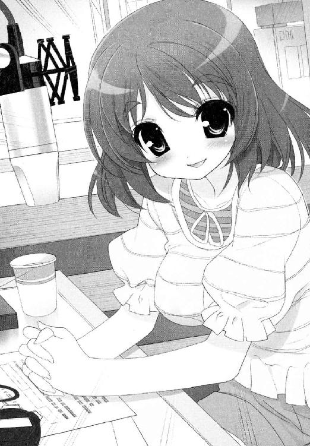
「昨日と一昨日の放送でも、堀越さまの話題でいっぱいだったんですよ」
「へえ、そうなの？」
「堀越さまと淡谷会長が特別な関係だったのかー、なんて！」
「ふうん......そうなんだ......」
「ああ、否定されないと？ それはもしかして──」
「だってねえ......どう考えても他にないことばっかりやってた気はするし。ね、マイヒメくん？」
どうでしょう。知りません。
「なんですか、それは。ぜひ教えてください！」
「たとえばほら。生徒会室の椅子にね、ワタシが身代わりのヌイグルミを置いてよく脱走したの。マイヒメくんがそのヌイグルミ抱えて捜しに来るのがおもしろくてさ。ね？ なんのヌイグルミだったっけ。イヌ？ ネコ？ ウサギ？」
だから知りませんてば。
だらだらと脂汗が出てきそうだった。
今までに舞姫に教えてもらった情報の中で、使えるヒントはないかと必死に考えたが、こんな私的なネタでは絶対無理だ。与えられた選択肢は、全部で三つ。
当てずっぽう。それしかないのだろうか。
向こうには、わかって当然とばかりに答えを待つ夢路と、期待に目を輝かせるＤＪの顔。雪国はもう、ままよとばかりに拳を握りしめる。犬。猫。ウサギ。
（男なら決断だ──っ！）
先輩──先輩──タヌキは確かイヌ科だから──。
「そうですね。イヌのぬいぐるみでしたね！ 夢路先輩」
堀越夢路は、一瞬思った通りに顔をほころばせ、
「──ん。正解。さすがマイヒメくん！」
「へええ！ そんなことがあの生徒会室の中で」
「楽しかったよ。他にもこんなことがあったんだけどね──」
ほっとした思いを、顔に出さずにいるので精一杯だった。
そうして十五分間のトークを乗り越え、『リメンバー若光の君政権』なる三日間の放送は無事終了したのである。
トイレの掃除用具入れに押し込めてしまった芦屋部長は、それからすぐに救出しに行った。
「ほんとごめんごめんめんごめんごめんごめん」
「ひどいですよ会長さん。せっかくご対面をお膳立てしてさしあげようとしたのに......」
「ごめん！」
「まあ、わたくしめも調子にのって煽りすぎたかもしれませんが......」
眼鏡のブリッジを押し上げ、ため息をつく彼女。化粧室で平謝りの淡谷会長を前にして、向こうもそれ以上強く言えなかったようだ。
「それで、堀越さまは......？」
ああ、彼女。
「職員室に、あいさつしに行ってるよ。そのまま帰るって。あんまり長居できないんだって？」
なんでも帰国していたのはほんの数日で、すぐにホームステイ先に戻るのだと言っていた。風のように放送室を去っていった背中に向かって、関係者は涙を流さんばかりに手を振りまくっていた。唯一、同じように別れを惜しむふりをしながら、雪国はかなりほっとしていたのだが。
ともかく、こうして契約は無事果たされた。サプライズゲストの危機も乗り越えた。
あさぎ組の教室に戻って残りの午後の授業を受けながら、雪国は安堵にひたっていた。
「──お帰りですか？」
そして、授業も終了。
雪国は、あいさつもそこそこに帰り支度をはじめた。
同じクラスの久我原さゆねが、今日の生徒会はどうするのかと声をかけてくる。
「うん。今日はもう帰るよ。執行部のみんなにはよろしく言っておいて──」
そのまま鼻歌まじりに教室棟を出て、スクールバスが待つ校門へ向かう。難関突破のお祝いに、舞姫と食べる晩のおかずを一品増やそうか。そんなことまで考えていた。
「......うーん。からあげで行くか照り焼きで行くか......」
「ワタシはテリヤキが好きだなあ」
ぎょっとした。
顔が露骨に引きつりそうになり、あわてて普段の顔を作り直す。
「ゆ、ゆゆゆ夢路先輩......びっくりするじゃないですか......」
「やっほう。マイヒメくん」
それは校門の手前。植え込みの木に背中を預ける形で、堀越夢路が立っていたのだ。
ちょうど肩幅と木の幹の太さが同じで、しかも目線が雪国よりもずっと下だ。おかげで声をかけられるまで、まったく気づかなかった。
「おもしろいおもしろい。相変わらずこの手には引っかかるんだね」
「いや、あの......」
昼休みで帰っていたのではなかったのだろうか。
「違うか。君の場合は初体験だものね」
「え？」
彼女はかかとの向きを変え、よりこちらの顔を見上げる形で微笑んだ。
「あの時のクイズの正解はね、クマだよ。クマ。イヌでもネコでもウサギでもない。君が本物の淡谷舞姫なら、間違えるはずない」
ごくりと唾を飲み込みそうになる。
「あ──そう。そ、そうでしたか。すみませんド忘れしてました先輩！」
「それだけじゃなくて」
「ないんですか？」
「君はワタシのことを、『夢路先輩』なんて呼んだことは一度もない。『夢さん』または『夢先輩』がデフォルトだったはず──違う？ 違わない？ どっちだった？」
今度こそ。
行き場もなく凍り付く雪国に向かって、彼女はたずねる。
「君さ、誰？」
＊＊＊
校舎裏の庭園は、誰もいなかった。
遠く少女たちの声を聞きながら、その時は誰も。
堀越夢路は、部外者の私服で、秘密の花園の中を歩いていく。そのラフな格好は、明らかに青美の規定から浮きあがっているのに、中身は不思議とよく馴染んでいた。よく見ればきめの細かい肌の細胞の一つ一つが、庭の木々に歓迎されているような気さえした。
彼女が何歳からこの学院にいたのかは知らないが、雪国よりずっと長い時間、ワインレッドの制服を着ていたのはたしかなのだ。
「──ここなら、誰にも聞かれない、かな？」
少しおどけたその声に、甘えていることはできなかった。
彼女の目が丸くなるのを見ないように、雪国はその場に膝をついた。両手もつき、頭をさげた。
「──────────お願いします。黙っていてくれませんか!?」
それしかできなかった。
安直で愚直な手段と言われようと、他になにも見つけられなかったのだ。
「お願いします。これには、訳が、あるんです。僕と舞ちゃんで、やりたいことがあって。どうしても、交換する必要があったんです。だから......」
だから、なんだ？ この人にそれを言って、聞いてもらえる可能性があるのか？
それでも雪国は、額を地面にこすりつけるように、必死に懇願の言葉を口にした。
今まで積み上げてきたものを壊さないように。沢山の人の笑顔が消えない、ように──。
「ほんとに、どうか......」
「お願いします、ね......もういいよ。顔上げて」
頭上から降る声は、冷たくも暖かくも聞こえた。
雪国は、おずおずと顔を上げた。そこには、笑いをかみ殺すような、夢路の微苦笑があった。
「そんなさ、打ち首覚悟の震えたチワワみたいにならないでよ。他に言ったりなんかしないから」
「ほんとう、ですか......？」
「本当だって。でなかったら放送の中でちゃんと突っ込んでたし」
それはたしかに、そうなのだけれど。
夢路に手をさしのべられ、雪国は立ち上がった。
「入れ替わりを薦めたのも、元をたどればワタシなんだしね」
「え」
雪国は、ぽかんと口を開けるはめになった。
「え──────っ！」
「薦めたっていうか......マイヒメくんって、意外とためこむところがあるでしょう？ ふだん大ざっぱなふりしてね。そのくせ顔に出ないから、人に気づかれにくいし。頼るのもあんまり上手じゃなかったし」
懐かしそうに目を細める。それは淡谷舞姫という姉の人となりを、よく知っている人の言葉だった。
たぶん、深いほどに。
「仲良しのサユネくんもさ、マイヒメくん大好きだけど、好きすぎるのが仇になるところがあったじゃない。卒業する時ね、ワタシは何度もマイヒメくんに言ったんだよ。会長職はきついけど、ためこみすぎて爆発しないように。しそうになったら、誰でもいいから必ず頼りなさいって。かっこわるくてもなんでもいいから」
覚えている。日に日に笑顔がなくなり孤立していった姉のこと。あれは進級したばかりの春のこと。
どうしようもなくなった姉と入れ替わるように、雪国はこの学院にやってきた。
あれは、本当に起死回生で、一発逆転の奇策だったのだ。
「君がここにいるってことはさ、少しは人と一緒にやることも覚えたのかなってね」
この人は──鋭い。
「ねえ。マイヒメくんは、元気でいる？」
「いますよ。とっても」
「電卓がうまく使えなくて叫んだりしてない？」
「そんなことしてたんですかっ」
バスが出るぎりぎりの時間まで、そうやって昔話の意外な話を聞いていた。『ときめき青美タイム』の中では聞けなかった、生徒会や姉についての裏話。意外な話が飛び出るたびに、雪国はおどろいたり心の中でメモをとったり。
もしかしたらはじめて、教室の中で番組を楽しみにしていた女の子たちと同じ気持ちになったのかもしれない。
「──いけない。そろそろ行かないと」
「あ、すみません。引き留めちゃって」
腕の時計を見つめておどろく夢路に、雪国もまたあわてて謝った。
さっぱりとした物言いや振る舞いは、どこか姉の舞姫の言動を思い出した。
でも──似ているというよりは、舞姫が年上の彼女に影響されたのかもしれないと考えると、また少しおもしろい。
「それにしても、おもしろいなあ。こんなに似てるのに男の子だなんて」
彼女はあらためて雪国を見上げ、ちょいちょいと手招きをしてこちらの頭を下げさせる。そのまま前髪を持ち上げ、戸惑うこちらの額にかるく口づけをした。
「！」
「理想的、だよね」
にこにこと瞳を細めて笑う。その顔のどこまでが本気だったのだろう。
「じゃあねー。マイヒメくんによろしく」
呆然と立ちつくす雪国を置いて、第一一七代生徒会長、堀越夢路は去っていった。遠い異国の空の下へと、足取り軽くスキップで。
（..................不覚だ......）
まさか天然タラシの才能まで似ていらっしゃるとは──。
神様。神様。質問です。いったい舞ちゃんと夢路先輩は、どういう関係だったのでしょうか。
深く考えると頭が痛くなりそうで、雪国はおでこを押さえて立ち尽くすしかない。
「............先輩」
「はい......？」
「今のは、堀越会長ですか......？」
雪国は、飛び上がりそうになった。
そこには、あろうことか一駿河蜜がいた。
あのやわらかそうな頰がぱんぱんにふくらみ、顔色は真っ赤。両手にお菓子の包みらしい箱を持っているが、力の入りすぎた指先が、高そうな包装紙を突き破らんばかりである。
「......昨日のお詫びを、渡そうと、思ったんですが......」
「いや、あのね、一駿河さん......」
「おじゃま、だったですか......？」
どうしてこんなにタイミングが悪いのだ。
「せんっぱいの、せんっぱいの、ばかあ────────────っ！」
「違うんだってば！」
雪国の悲痛な叫びと蜜の癇癪が、青美の森に響いたという。いつものように、いつもの仲のよろしさで。
粉砕された高級クッキーが、青い空へと飛び散った。
その後の話♯４
ぺっ。ぽっ。ぱっ。ぺぺっ。
ぱぺっ。ぽっ。ぺぺっ。
本日も本館四階の生徒会室に、久我原さゆねが電卓を叩く音が響きわたる。
「その電卓も古いよねえ」
「ええ。執行部の備品ですから」
ぱぺっ。ぽぺっ。ぺぺぺっ。
旧式の電卓は、ボタンの一つ一つがやたら大きく分厚く、一つ押すたびにプッシュ式の電話のごとき音まで出る。雪国がテーブルに頰杖をつき、書類の決裁をする手を休めて眺めていても、彼女はそのオンボロな電卓を駆使して鮮やかに収支報告書をまとめていた。
「いやあ、お見事お見事」
「恐縮です」
ぱぺっ。ぽっ。
「ねえ、久我原さん」
「なんでしょう」
「けっきょく舞ちゃんと夢路先輩の間になんかあったの？」
ぱぺっ。ぽっぽっ。ぺっ。
ぺっ。
「なにかとは」
「いや、それを聞きたいんだけどさ」
純粋な興味である。
「そうですか」
「うん」
ぺっ。ぺっ。
ぺぺっ。
「お聞きになりたいですか」
「だから教えてよ」
「そうですか」
ぺっ。ぺっ。ぺぺぺっ。ぺっ。
ぺっ。ぺっ。ぺぺぺっ。ぺっ。
「あの、久我原さん──」
ぺっ。ぺっ。ぺぺぺっ。ぺっ。
ぺっ。ぺっ。ぺぺぺっ。ぺっ。
ぺぺぺぺぺぺぺぺぺぺぺぺぺぺぺぺぺぺぺぺぺぺぺぺっ。
「もしもし？ 聞いてる？」
「本当にお聞きになりたいんですか？」
「なんなんだよいったい！」
この世には、聞いていいことと悪いことがあるらしい。
「墓の下まで秘密を持ち込むお覚悟があるなら」
というのがさゆねの弁である。
真実は闇と電卓の中。
深まるばかりの謎である。
第５章 日曜日のナイチンゲール
あー、みなさんどうもこんにちは！ 淡谷雪国です。淡谷雪国です。中三です。秋です。受験生です。
僕の性別は男ですけど、今は双子の姉の舞ちゃんと相談して、舞ちゃんが通っている青美女学院に女装して潜入しちゃってます。
毎日まいにちロングのカツラをかぶって、スカートをはいて。お嬢様学校での暮らしはびっくりすることが多いですが、ぶっちゃけ今は腰から下がむちゃくちゃ冷たいです！ 寒いなんてもんじゃありません！
「ねえ、先輩！ もういいですよ。あがってくださいって！」
ただいま僕は、青美女学院の噴水の中におります。なぜですって？ それは僕が恋する一駿河蜜さんのお宅の鍵が、こちらのお池に落ちてしまったようなんですよ。
いやはや、適当な気分で探索を引き受けてはしまいましたが、晩秋ともなりますと池の水も冷え込みますねえ。お天気はいいのに心のＢＧＭは津軽海峡冬景色。濡れたジャージが手足に貼り付き、いっそう感覚が麻痺してくるじゃあないですか。
「悪いのは蜜なんですから。もし先輩になにかあったら、蜜は蜜は......」
はっはっは。さっきから一駿河さん、涙目でこんな殊勝ことをおっしゃってますけどね、ふだんの彼女はけっこう強気ですよ。ぷんぷん怒って回し蹴りが飛びますよ。ちっちゃくてふわふわ髪のお人形さんみたいな外見が噓みたい。僕が焼きそばパンをあげると、とたんにご機嫌になるあたりとか、大層かわいらしい子だと思うんです。
この子と仲良くなりたくて、僕はこの学校にいるわけです。だから僕は、膝の上まで水につかりながら、笑って言いました。
「らいじょーぶらよいするがはん。すぐ見つかるはらねー」
「歯の根かみ合ってないじゃないですか！」
「ろこにあるかなあ。は、は、へーくしっ」
「先輩のばかー！」
＊＊＊
「──で、けっきょく風邪でダウンするんだからしょーもないよね」
「........................わかってることをね、今更いわなくてもいいんだよ舞ちゃん......」
「ユキグニの見栄っ張り」
こちらが差し出した体温計の数字を見つめて、姉の舞姫が冷ややかにつぶやいている。
どうやらおめでたくない数字を叩き出したらしい。
（だってさあ、心配だったんだよ）
蜜のために池に入ったのは金曜日だが、時間がたつにつれて体調は悪化の一途をたどった。ついに日曜の朝にしてベッドから動けなくなっている。
「......べつに、ぜんぜん起きれないわけじゃないし......むぐっ」
舞姫が、身をおこそうとした雪国の肩を、片手で押し返す。
向こうは大した力は入れていないはずなのに、こちらの体は簡単にシーツへ沈んでしまった。
「だ・め・だ・よ。そう言って昨日一日げほごほ動き回ってたから悪化しちゃったんじゃん！」
「でもさ」
「でももしかしもかかしもなあい！ 明日休みたくなかったら、今日一日しっかり寝て治して。これ命令だよユキグニ！ わかった!?」
そりゃわかるんだけどね。
でもね舞ちゃん。今日はおばあちゃん、小説の取材でいないんだよ？ 最近忙しくて掃除とか洗濯とかかなりさぼっちゃってるし。片づけしないと大変なんだよ？
「大丈夫だってユキグニ」
こちらの危惧を見透かしたように、舞姫が優しく微笑んだ。
「安心して。家の仕事もユキグニの看病も、ボクがちゃんとやってあげるから。ね？」
──ごめん舞ちゃん。
──それが一番怖いって言っていい!?
心の不安を言い出す隙もなく、雪国は子供部屋のベッドに取り残された。
額に冷えピタを貼ったまま、考えるのは姉のことばかりである。
（大丈夫かなあ舞ちゃん......）
今も遠く一階の廊下を、舞姫が掃除機をかけていく音が聞こえてくる。
いわゆる雪国たちの両親が、そろって海外に赴任していったのは、こちらが小学校も高学年に上がった頃である。現役作家の祖母と三人暮らしの生活は、気づくと男の雪国ばかり家事をこなすようになっている。
これは舞姫がずるいというより、お互いの性格と向き不向きの問題なのだと思っている。
なにせ平等に当番を割り振っても、後から雪国がやり直したくなるぐらい、彼女の掃除や洗濯の仕方は──。
じゅごごごごごごごごごごごごごごご。
「はあ!?」
雪国は、思わず身を起こしていた。
四つん這いでベッドの外に出て、階段の下に耳をすます。
「ねえ舞ちゃん、どうかしたの？」
やがて声が返ってきた。
「──あー、平気。平気。ちょっと大きいの吸い込んじゃったんだ」
「なにを？」
「なんか」
なんかって何!?
またぶいーんぶいーんと掃除機が動く音がはじまる。雪国は戦々恐々とした気分で寝床に戻るしかなかった。元気になったら一度掃除機の中を点検しようと思う。思わぬものが吸い込まれている可能性がある。
そしてまた数分後。
ごごごごごごごがががががががががががばこばこばこばこばこどすん。
雪国は今度こそ寝床から部屋を飛び出て、音の発生源を確かめにいった。
「舞ちゃん！ 怪物でも出たのっ」
「なにユキグニ。寝てなきゃダメじゃん」
「その後ろで悲鳴をあげてる洗濯機はなに!?」
「なにって。洗濯してるんだけど。脱水中」
「入れすぎてない!? 変なもの突っ込んでない!? ポケットの中、裏返してたしかめた？」
舞姫は、平然と首を横に振った。
「大丈夫だよユキグニ。洗えればＯＫ」
「ちっとも良くないよ──────────────っ！」
泡を吹いて痙攣している全自動洗濯機が、可哀想でならなかった。
「うう、僕の洗濯機ちゃん......しっかりして......とりあえず吐いて......ゲーしたら楽になるからね......」
「知らないうちに電化製品に名前つけてるユキグニもどーかと思うんだけど......」
雪国は、入れすぎの洗濯物を引っ張りだしながら、きっと舞姫を睨みつけた。
「愛がなきゃ家事なんてこなせないよ。そんなんだから舞ちゃんはいつまでたっても下手っぴいなんだ」
舞姫のこめかみが、ぴくりとひきつった。
「こないだもそうだよね。雑巾がけしててふすまに穴あけたし」
「だってあれは」
「僕の鉢植えもホウキでバッティング」
「............」
「とにかくね、これ以上、僕の熱上げるような真似はしないでね」
「ユキグニ......」
「うー、本気で上がってきたよ。戻って冷えピタ貼り直そう......」
ユキグニはため息まじりにそう言い置き、二階の寝床へと戻ったのだった。
＊＊＊
──先輩、先輩、大丈夫ですか？
なにやら眠りに沈む意識の向こうから、蜜の声がした。
「先輩ったら。起きてください」
「......？ 一駿河、さん......？」
「ああ良かった。お体は大丈夫なんですね？」
薄目を開けた雪国は、ぎょっとした。
寝ていたベッドの上に、蜜が馬乗りになって座りこんでいるのである。
「は、え、なに!?」
「蜜、先輩に何かあったらと思うと心配で心配でお顔を見にきてしまいました......」
そう言う彼女の瞳は、泣きはらしたように真っ赤で、そしてなんというかこう、制服が半分脱げている。
スカートのホックもファスナーも外れ、あられもなくはだけたブラウスの向こうには、デザインだけは清楚な薄いピンクのシュミーズがのぞいていた。
蜜がこちらを見つめて呼吸をするたび、かすかに上気した胸の膨らみも動き、いったい驚きたいのか凝視したいのか、とにかく生唾ばかりがこみ上げてくる情景で──。
「そ、そそそ、その格好は、い、い、いったい......？」
「だって......今の蜜にできることって言ったら、これぐらいしかありませんから......」
そう言いながら一駿河さんは、身を起こそうとする雪国の寝間着にも手をかけはじめているのである。
「......先輩。蜜もはじめてですから、優しく、してくださいね......？」
「ひあああああああああああああ」
叫ぶ間も熱い手が、こちらのシャツのボタンをぷちぷちんと外していく──。
「──ああっ、いや、だめだよこういうの一駿河さん！ そもそも僕らつきあってすらないし！ まずは段階を踏んで人力川の河川敷デートから──」
「ごめん。超きもいから起きてユキグニ」
「なんかすごい痛いよ!?」
途中で頰をつねられ、雪国は夢から現実に引き戻された。
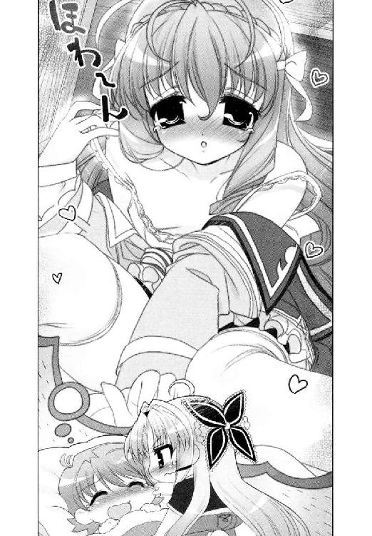
そして改めて周りを見れば、ベッドに乗り込んでいるのは姉の舞姫なのである。
「ま、舞ちゃん......？」
「寝汗かいてたから、着替えさせてあげようと思ったんだけどね......」
すさまじく冷めた顔つきで、雪国のはだけたパジャマの襟に手をかけている。
舞姫は、はあと絶対零度のため息を一つ。こちらは事情がわかりはじめて顔から火が出そうだった。
つまりあれか？ 自分は、舞姫と蜜を取り違えていたと？
「──は、はははは。そ、それは、どうもアリガトウゴザイマス！」
「ドーイタシマシテ」
「オツトメゴクロウサマデス！」
また問答無用で脱がしにかかる舞姫。雪国も気まずいのでじっとしていたが、汗で濡れた上着をはぎ取るどころか、下のズボンや下着にまで手をかけだすので、さすがにそれは勘弁してと辞退した。
「......べつに気にしないのに」
「僕が気にするんだよっ」
「じゃ、自分でやってよ」
「イ、イエッサー」
のそのそベッドから出ていく舞姫から、替えのパジャマ一式を受け取った。
頭を起こすだけで視界が揺れる体だが、羞恥心はまだ残っている。とりあえず残りの衣服を脱ぎ捨て、新しいパジャマに袖を通した。
やけに明るいパステルブルーの布地だが、こんな寝間着を持っていたっけ？
「ちゃんとナイトキャップまでかぶるんだよー」
「ああうん、ナイトキャップね......」
ナイトキャップ、ナイトキャップ、ナイトキャップ。
実際にセットで置いてあった白いナイトキャップを頭にねじこんでから、はたと気づいた。
自分が着ている寝間着は、袖にも襟ぐりにもひらひらフリルがついたワンピース状の女性用就寝衣料品、いわゆる『ネグリジェ』というもので、ぱっと見には水色だと思っていた布地も、よくよく見ればブルーの小花模様といった乙女ぶりだった。
これに白いナイトキャップをあわせれば、もう赤毛のアンの国へまっしぐらである。
「な、ななな、なんでこんな、ぴらぴら......？」
「おかーさんが向こうから送ってくれたの。新品のパジャマってそれしかなくて」
いやわかる。母の趣味はよく知っているが、それをここで着せる意味がわからない。
「これじゃなくても、僕のクロゼットに着替えぐらいあるでしょ。だめなら普通のＴシャツに短パンとか──」
「ごめんね、ユキグニ。ボクへたっぴいだから、洗濯みんな失敗してびしょびしょなんだ。それでがまんしてね？」
雪国は、曇りのない笑顔を返す姉に絶句するしかなかった。
「さー、へたっぴいは残りの掃除もがんばるぞー」
おー。
肩をぐるぐる回して、舞姫は去っていく。ネグリジェ＋ナイトキャップの弟を捨て置いて去っていく。
──人が満足に動けないのを知っていながら！
──根に持ってるよ。この人すんごい根に持ってるよ！
その後も絶え間なく聞こえてくる雑音（重かったり甲高かったり湿っていたり）をＢＧＭに、寝ては覚めてを繰り返した。
（......う......いま何時？）
枕元に置いたポカリスエットで喉を湿らせつつ、目覚まし時計を引き寄せれば、まだ十二時前である。げんなりした。相当寝込んだつもりだったのに、お昼のニュースすらはじまっていないとは思わなかった。
（なんか......暇だなあ）
窓からさしこむ光は、当たり前のように午前中の明るさで、表からは子供のはしゃぎ声も聞こえてくる。
自分の体は動かなくても、世間はしっかり動いているのだ。
ごろり。暇をもてあまして右に寝返り。
ごろり。また暇をもてあまして左に寝返り。
それでも眠気は浅いところを漂うばかりで、目の前の景色はいつまでたっても子供部屋だ。
どうやらすっかり寝飽きてしまったらしい。
こうしてだるい体で時間をもてあます日々を、昔はよく送っていたのだ。
熱で休んだ学芸会の練習。小児科の甘い水薬。お母さんの特製おじや。
あれは、いつの頃だったろう──。
＊＊＊
──八年前。雪国、六歳。小学一年生──。
「──ん。三十七度二分。よかったわねえユキちゃん。だいぶ下がったわよ」
「ほんと？」
よしよし。えらいえらーい。母親の佐喜が、体温計を振りながら微笑んだ。
彼女の名前は淡谷佐喜。趣味はお菓子作りとサンリオのファンシーグッズ集め（最近のマイブームは『ポムポムプリン』と『けろけろけろっぴ』らしい）の、ごくごく平凡な主婦である。
いつも可愛い柄のエプロンに明るい笑顔が映えて、雪国たちにとっても自慢の『おかーさん』なのだ。
「......じゃ、もうぼく、おきてもいい？」
「だあめよ」
雪国は息苦しさに起きあがろうとするが、逆に毛布を引き上げられてしまった。
「今日一日は、お薬飲んでおとなしく寝てるの。お父さんが帰ってくるまでいい子にできたら、お母さんのスペシャルおやつあげるから」
「でも」
「でももしかしもかかしもなあいっ。安静にしないとお風邪は治らないのよ。じゃあね？」
「ほんとに帰ってくるの？ おとーさん」
ぎくり。
いそいそと部屋を去ろうとしていた佐喜の足が、凍るように止まった。
「......ユキちゃん？ どこでその話を？」
「今度しっぱいしたら、おとーさんモスクワかドバイに飛ばされるんでしょ？ こないだ和室ではなしてて──」
「あっ、あなたって子は！ そんな夜遅くまで起きてるから熱なんて出ちゃうのよ！」
「だってトイレいきたかったんだもん」
眠い目をこすって一階に降りてみれば、父と母がお通夜のような顔で話し合っていたのである。
雪国は、枕元に置いてあった『せかいのちずちょう』を開く。
これは小学校入学祝いに、祖母が少し早いけれどと買ってくれたのである。
「モスクワはー、ロシアのしゅとだねえ。ほくい五十五度四十五分、とうけい三十七度三十七分。めんせきが千と九十一へいほうきろめーとる。ねんかんのへいきんさいこうきおんが九度二分。さいていきおんが一度七分。うわあ、いちがつにはまいなす四十二度にもなるんだねえ」
「いやあああ」
母が顔を覆った。
「わたし、わたし、生まれも育ちも千葉の房総半島で、寒いのだめなの！ 冷え性なのよお！」
「あ、でもドバイはあったかいよ。アラブ首長国連邦のまちだから」
「南の国もだめええええ。ゴキブリが巨大だからだめええええ」
「アラブってゴキブリでるのかなあ......」
これはもらった地図帳にも載っていない。調べるとしたら昆虫図鑑だろうか。
エプロン姿で絨毯に座り込んで、さめざめと泣いている母親に、本棚の図鑑取ってとお願いするのも気が引けた。
幼い頃から病気がちですることがなかった雪国にとって、読み書きを覚えること自体は苦でもなかった。今では小学生用の本ならだいたい読める。
「......おかーさん」
「なあに？ ユキちゃん」
「おとーさんだってたいへんなんだよ。舞ちゃんはシリツだし、家のローンだってまだまだいっぱいあるし、今日だってキュージツシュッキンだし、年金がいつまでもつかもわかんないし──」
「......ユキちゃん。お母さんユキちゃんが賢いのか耳年増すぎるだけなのか時々心配になる時があるの。気のせいって言ってくれない？」
「きのせい」
「うあああああん。見た目は子供で頭脳は大人あああああ。名探偵コナンくんよおおお」
何かよくわからないが、母はますます泣き虫になった。
──ぴんぽーん。
ちょうどその時、玄関のインタホンが鳴った。さらに立て続けに二度三度。
このリズムは、すぐに誰だか気がついた。母と顔を見合わせるまでもない。さして時間も置かないうちに、祖母に鍵を開けてもらったらしい『半身』が、ぱたぱたと元気よく階段をあがってくるのだ。
「──たっだいまあ！」
まさしく活力のクラッカーが、パンと音をたてて弾けるかのようだった。
「ただいまただいまただいまユキグニ。げんきげんきげんきになった？ ねえねえユキグニげんきになった？」
止まることのない機関銃のように、ノンストップで喋り続けている彼女は、今年の四月に私立の小学校に入った双子の姉、舞姫である。
部屋に入ってくるなり、指定の白い帽子と真新しいランドセルを放り捨てる。あちこち跳ねたショートカットが、ぴょんと呼吸をするようにまた跳ねる。続いて三つ折りのソックスも左右にポイ。ワインレッドのワンピース一丁の身軽な格好になるまで、実に五秒とかからなかった。さながらロケットの切り離し作業完了である。
「んもー、マイちゃんたら！ 何度いったらわかるの！ 帰ってきてもポイポイ捨てない！ ちゃんとお片づけして！」
「わかってるよー」
わかっているのは口だけで、そのまま舞姫は雪国のベッドにダイビング。
佐喜は眉間をおさえ、脱ぎ捨てた靴下だけを拾って部屋を出ていく。
「ただいま、ユキグニ」
ベッドに腹ばいになり、頰杖をついた姿勢で舞姫が言った。
「うん。おかえり、舞ちゃん」
こちらも寝間着姿でそう言えば、舞姫はうれしそうに笑った。くしゃくしゃ満面の笑みというやつだ。
最近の舞ちゃんは、自分の名前を間違えなくなったなあと思う。
一緒の幼稚園に通っていた頃は、自分のことも雪国のことも、一緒くたに『ユキグニ』と呼んでいたのである。舞姫と呼ばれても知らんぷり。雪国と呼ばれれば一緒にハイ！ で、あまりにそれが真剣なので、一時は雪国もそういうものなのだと思いこんでいたぐらいなのだ。
「今日はなにしたの？」
「あのねあのね......」
新しく一人で入った小学校は、電車に乗ったり校舎がぴかぴかだったり、面白いことが多いらしい。ちょっと羨ましいが、その学校は女の子しか入れないのだという。
舞姫は目を輝かせ、その日の授業で教えてもらった中身をぶちまけはじめる。身振り手振りに足振りまでプラスして、とにかく気持ちだけはマックスだ。
「......ふーん」
「──でね、なわとびしてる時にコーテイに迷いこんできた犬がすんごい大きくてね、どんぐらい大きいかっていったらこんぐらい。こんなこんな」
こーんな、と体全体で表現する犬はクマぐらいある。
「どんなしゅるいだった？」
「んーと。お向かいのおばちゃんとこの犬に似てた」
それはポメラニアンだよ舞ちゃん。
いったいどこまで信じて良いやらわからないが、迷子の犬は担任の先生によって確保され、舞姫が学校生活を満喫してきたのは確かなようだ。
「ユキグニはどうしてたの？」
期待に満ちた目で聞き返されると、どうにもへこんだ。
「............なんにもしてないよ。ねてただけ」
「ずっと？」
「そうだよ。ずーっと！」
学校は別々になったが、舞姫と雪国の出席日数を比べれば、三分の二も出られていないだろう。体の弱さは一朝一夕でどうにかなるものでもなく、なんだか置いていかれた気分になるのだ。
いくら本が読めて、同い年の子が知らない単語を知って、先生が驚くような問題が解けたとしても。心の焦りや寂しさは、しんしんと降り積もって消えなかった。
「そっかあ......それはつまんないねえ......」
素直に頭をなでてくれ、雪国はますます泣きそうになった。
「もうあきたよ。ねてるの、つかれた」
「そうだよねえ」
「やだよ」
次に舞姫が口を開かなければ、きっと本気で泣いてしまっていただろう。
けれど彼女は言ったのだ。
「じゃ、コーカンしよっか」
──は？
「コーカンこ。ボクとユキグニで」
「えっと。コ、コーカン？ もしかして取り替えっこのこと？ 漢字で書くと『交換』の？」
「わかんないけどたぶんそれ」
実際に中空に『交換』と書いてみせると、舞姫は大層アバウトにうなずいてみせた。
「ほら。ボクがユキグニのかわりに寝ててあげるから、ユキグニはボクのふりして遊んじゃいなよ」
雪国は、ぽかんと口をあけるしかなかった。
「だってさー、風邪ひいてるとおかーさん優しいし、おやつの時間じゃなくてもアイスやモモ缶たべられるし、ユキグニいいなーって思うのね」
「そっ、そんないいもんじゃないよ」
「うん。ユキグニはそー思うんでしょ？ でもボクはそー思わないし。だからかわりにやってあげる」
屈託のない笑みは、噓も打算もどこにもなくて、本当にまっすぐで。
舞ちゃんの思考のぶっとび具合は、きっと一生かかっても追いつかないんじゃないかと、小一らしからぬことを考えてしまった。
「......やん」
「やんいわない」
「ひひひひ、ひゃん」
「せなかピンして」
「ひゃ」
ぱしっと背中を叩かれる。
（だって）
足下をすーすー風が流れるスカートの感触が、どうにもこうにも気恥ずかしいのだ。
「ま、舞ちゃーん。どうしてもスカートじゃなきゃだめ？ べつにズボンでもいいんじゃ......」
「だめ。おかーさん、ボクがズボンはくとすごい怒る。そっちの方がキケン」
指摘は鋭かった。
雪国と自分を混同して喋る舞姫のことを、一番危惧して心配していたのは母の佐喜なのだ。だから多少の無理をしてでも舞姫を私立のお嬢様学校に入れたし、最近はクラシックバレエの教室にまで通わせはじめている。
そんな舞姫にあてがわれた普段着は、母のサンリオ趣味か情操教育の一環か、どれも可愛らしいオンナノコ服ばかりである。
舞姫のかわりをするということは──そのフリフリピンクやキティちゃんなお洋服を身にまとうということなのだ。
雪国は子供部屋の隅に立ち、落ち着きなくスカートの裾を引っ張った。
「なんか恥ずかしいよう......」
「なにおう。ボクはいつもそれ着てるのに」
現在雪国が身につけているのは、サンリオキャラがプリントされたピンクのトレーナーと、赤いチェックのプリーツスカートである。こちらが少し身動きするだけで、軽い素材のプリーツスカートは、ふわりと大きく広がった。
かわりに舞姫は、つい数分前まで雪国が着ていた雪だるま柄の青いパジャマを着込んでいる。恥ずかしさに身をよじる雪国をおいて、まるでホームグラウンドに帰ってきたように清々しい顔をしていた。
「だいじょうぶ。こんなにそっくり。だれにもばれない」
「そうかなあ......」
病人を名乗るには、舞姫のつるんと丸いリンゴほっぺは、少々ぴかぴかというか健康優良児すぎると思うのだ。
けれど自信満々でやる気も満タンな姉の前に立つと、それが一番いいことのような気がしてくるのが不思議である。
ようし、やるぞ。きっとなんでもできると信じられるような。
「さくせんけっこう。とりかえっこだいさくせん。おー！」
「......おー」
そうしてかっこよく決行と言ったところで、舞姫は雪国の布団の中にもぐりこむだけである。
大幅に自由度が上がって行動範囲が広がるのは、ニセ舞姫になった雪国の方だった。
（なんか缶蹴りの逃げる人みたいだな）
そろそろと階段をおりて行きながら、考える。どこに行くのも自由だが、うかつな行動をとればあっと言う間にゲームオーバーになるあたりもよく似ている。
「あらっ、どうしたのいったい」
「わっ」
雪国は飛び上がりそうになった。
ちょうど階段を降りきったところで、佐喜と鉢合わせしてしまったのだ。
彼女は洗濯物を取り込む途中らしく、大盛りのシーツを抱えている。
女の子の格好をした雪国を、本当に珍しいものでも見るような顔つきで凝視してくるのだ。
「え、えとその、えとえと──」
「えらいわねえ、マイちゃん！ ドンドン鳴らさずに降りてこれたじゃない！」
なのに彼女はうれしそうに笑って、頭までなでてくれる。
「お母さんうれしい。その調子で女の子らしくなってね」
「あ、う、うん......」
「ら・らんらら・らん・ら♪」
ずれたシーツを抱え直し、ナウシカのテーマソングを口ずさみながら、奥の和室へと消えていった。
（......とりあえず、ばれなかったのかな？）
第一関門は突破のようだ。
そのままリビングに顔を出すと、今度は祖母の菜穂子がテレビを見ていた。
ソファがあるのに座布団に座り込んで、ちんまりとした着物姿は招き猫のようだ。
「おばーちゃん、げんこーは？」
「無粋なことを言う子は尻たたくよ。ほら煎餅お食べ」
「うん」
うなずきソファに座り込む。
世のおばあちゃんの大半は、締め切りに追われて離れにこもったりしないし、編集さんと朝まで飲んだりしないものなのだと、雪国は最近知った。
もうすぐ雪国が好きなアニメの再放送がある。おやつを食べながらそれを見るのもいいかもしれない。
現在祖母が見ているテレビ画面は、ミステリ作家らしく、海外サスペンス映画だった。
「ねえおばーちゃん。ぼくね、このあとみたいテレビがあるんだ」
「ああわかってるよ舞姫。黄門様だろう？」
「うえ？」
祖母は当然のような顔でチャンネルを変えてくれる。そしてはじまるのは、ロングランヒット中の時代劇の再放送だった。
「......えーっと、その......」
「ほんとに舞姫は時代もんが好きだねえ」
人生には楽があったり苦があったり、泣くのが嫌ならさあ歩いたりと言ったおなじみのテーマソングが重厚に流れている。
たしかにそうなんだけど。間違ってはいないんだけど。
（ぼくは、ぼくは違うんだよーっ）
今さらながらに知る。舞姫のふりをして入れ替わるということは、ふだんの舞姫がすること以外してはいけないということだ。
アニメと時代劇があるなら時代劇。おとなしいか活発かと言われれば活発で。
──なんかこれ、思ったより楽しくないんじゃないのかな？
「──そうそうマイちゃん！ このあいだ言ってたクマクマ体操、やってみせてくれる？」
「わあっ。おかーさん」
今度は母の佐喜まで、台所から顔を出してくる。期待に満ち満ちた母の顔。
「く、くまくま体操？ くまくま体操ですねくまくま体操」
「ねこねこ体操だったかしら？」
「ううんクマでいいよあってるよ！」
雪国は必死にソファの上に立ち上がり、以前に舞姫が得意げに披露していた創作ダンス（？）のさわりを踊りはじめる。
「く、く、くまくま～」
斜め右にガオー。
「く、く、くまくま～」
斜め左にガオー。
さらに新巻鮭をイメージしながらボックスステップ。
「しゃ・け・が・す・き～」
「いいわねえ。かわいいわよマイちゃん♪」
「顔がひきつってるよ舞姫！ こういう芸事で照れてちゃ台無しだろ！」
そんなこと言ったって！
覚えているだけ感謝してほしい。こんな怪しげでいい加減な踊り。
黄門様のやりとりをＢＧＭに、腰をふりふり手足をふりふり。どうして自分がこんな目にあっているのかよくわからなかった。
腰が甘い笑顔が足りないと指導を受けつつクマクマ体操を踊っていると、台所でキッチンタイマーが鳴る音がする。
「あらっ、もうそんなにたったの。いけないいけない」
「なんか作ってるのかい？」
佐喜が頰をおさえてきびすを返した。
「ええ、お義母さん。ユキちゃん、だいぶ良くなったみたいだから、おじやぐらい食べられるかと思って」
台所に消えていく母と、それを見送る祖母。雪国は、信じられない思いでそれを聞いてしまった。
──おじやって。おじやって。
「おーい舞姫や、黄門様は──」
「もういい！」
もういてもたってもいられず、ほかほかの土鍋一式をもって二階へあがっていく佐喜の後を追いはじめる。
風邪をひいていいことなど何もないが、あのおじやだけは別なのである。たっぷりの鶏だしで煮込んだ特製おじや。きれいな緑の小松菜に、赤い梅干しとちりめんじゃこ。食べるとすこぶる幸せになるお味。
あれを食いっぱぐれるなんて、そんなこと──！
「──あら、偉いわねえユキちゃん。ちゃんと寝てられたのね」
「うん。ボクちゃんと寝てたよ！」
「いい子にはご褒美よ。ほら、あったかいうちに食べちゃいなさい」
「わーい」
子供部屋にたどりついてみれば、雪国のふりをした舞姫が、ベッドの上に起き上がっていた。母が土鍋の載ったお盆を、そんな舞姫の膝の上に置いている。
「お、おかーさんっ」
「──ん？ どうしたのマイちゃん」
不思議そうに佐喜がふりかえる。同じように不思議そうな舞姫の顔。
「あはは。どーしたのユキグニ、じゃなくてマイちゃん」
「おじや......だってそれ、ぼくのおじや......」
「うん。ユキグニのおじやだね！」
雪だるまパジャマを着込んだ舞姫は、おじやを前にホクホク顔だ。
「......そうだよね。雪国のおじや、なんだよね......」
「マイちゃんはもうちょっと待っててね。すぐにお夕飯になるから」
違うんだよ。欲しいのはそのおじやなんだよ。
言い返す気力も説得する言葉もなくて、雪国はふらふらと舞姫側の学習机にへたりこんだ。
「おいしい？ ユキちゃん」
「あふ、あふいよおかーさん」
「そう？ ほらちゃんと冷ましてね。あーん」
「あーん」
頭ではわかっている。今の舞姫は雪国だから、あの病人用のおじやをあの場所で食べるのは非常に正しい。
なのになんだろう、この焼け付くような仲間はずれ気分は。
おじやが食べられてしまうのも悲しいし、舞姫と母が二人っきりで仲良くしているのも悲しいし、誰が悪いわけでもないから文句を言うこともできないし。
このあいだ読んだ本に出てきた『寂寥感』という言葉は、こういう気持ちの時に言うのだろうか。
（......舞ちゃんも、ぼくが風邪ひいてるとこんなこと考えてたのかな）
一人ぼっちで背中を向けて、放っておかれる寂しさに唇を嚙みしめて。
ごめん舞ちゃん。もう自分ばっかり寂しいなんて言わないよ。
言わないからさ──。
「はい。あーん」
「あーん」
ああもう、限界だ！
「ずるいよ舞ちゃん。ぼくもたべる！」
雪国はたまらず叫んで、目の前のベッドの中へと飛び込んだ。
「ユ、ユキグニ!?」
「おじやおじやおじやちょうだい」
「まちなさいちょっと！ こぼれるでしょう！ こら！」
「あっ、ボクのレンゲ！ かえして！」
「ぼくにもおじや────────────────っ！」
二人がかりで土鍋の中身を空っぽにして、ようやく一息ついたのはどれぐらいたってからだろう。
「......この子たちったら、もう」
同じ布団にくるまって、ぬくぬく目をとじるこちらの肩を、佐喜が優しく叩いていた。
「ユキちゃん。マイちゃん。お母さんね、二人が元気にしていてくれたら、ほかになんにもいらない」
いらないのよ。
そう小さく囁きかける母の声。左右両方、規則正しい手のリズム。
まるで魔法のようなその呼びかけを子守歌に、その日は夢を見ることもなく、深く深く眠りにつくことができたのだ──。
＊＊＊
そして八年後。
雪国は同じベッドの上にいて、風邪をひいて一人で寝ている。
化石のような記憶を思い出して、ひどく気恥ずかしいやら微妙な気分になった。
（......母さんはたぶん、途中から知ってたんだよな。僕らが入れ替わってたの）
なにせ八年前である。
当時の写真を見ればわかることだが、あの頃の雪国と舞姫は、身長も体重も舞姫の方がずっとあって、病弱な雪国が体格で追いつくのはもう二、三年先の話なのだ。ちょっと見ればすぐに違和感に気づいただろう。
気づいていたからこそ、母はあんなことを言ったのかもしれない。
そんな優しい言葉をかけてくれた母も、数年後にはおそれていた大ポカをかました父の海外赴任につきあって家を出ることになった。『クラシックバレエで女の子☆大作戦』も、見事に頓挫して今の舞姫ができあがっている。
望んでいた未来とはだいぶ違った路線を歩んできてしまったわけだが、いったいどこで間違えてしまったのだろう。
（──ん？）
ごろりと寝返りを打った雪国は、見慣れないものに気がついた。
サイドテーブルがわりに置いた回転椅子の上に、盆と土鍋が置いてある。
まだここに置いて間もないらしく、蓋の吹き出し穴から湯気も出ていた。
夢うつつでなにか食べるかというやりとりをした記憶があるが、どうやら本当にうなずいていたようだ。
憎まれ口を叩いても、こうしてちゃんとお昼まで作ってくれるのだから、舞姫には感謝しないといけない。
（ありがとうね、舞ちゃん）
雪国はいそいそと盆を膝の上にのせ、土鍋の蓋を開けた。
ふわりと湯気があがった。ああ感動だ。現れたのは、母が作ってくれたものとそっくり同じおじやである。鼻がつまっていて匂いがかげないのが残念でならない。舞ちゃん、いますぐお嫁さんに行けちゃうよ！
「いただきまーす」
添え付けのレンゲを手に取り、慎重に冷ましながら口にいれた。
「──────────────────────っ！」
はうお。
もだえた。
まずい。
まずすぎるよ。
「............あまっ、あまっ、甘いよおおお」
鶏だしと甘味の組み合わせが、こんなにまずいものだと知らなかった。しかもカリカリ梅だと思っていた赤いカケラは福神漬けである。甘さが二倍だ。
雪国は、涙目で土鍋をにらみつけた。
フリフリパジャマはまだしも、病人に対してこの仕打ち、ちょっとひどいのではございませんか!?
雪国は盆ごと土鍋を持ってベッドを出た。
「ちょっと舞ちゃん！ なんなのこのおじや！」
言いながらどすどすと階段を駆け降りる。そして一階に躍り出た雪国は、絶句した。
一階が腐海の底に沈んでしまっていた。
廊下の真ん中を、まだ脱水の終わっていない洗濯物がナメクジのように這っている。キッチンに顔を出せば洗い物が散乱し、切りっぱなしのネギが一本、青い部分を残して床に落ちていた。うかつに踏めばバナナの皮のように転げることができただろう。
「ちょっと待ってよ......舞ちゃん......？」
ネギや洗濯物を避けながら舞姫を探せば、当の舞姫はリビングにいた。
荒れはてた惨状もどこ吹く風、ソファに丸まって寝息をたてている。
「......寝てんの......？」
怒ればいいのか？ あきれればいいのか？ いいやとにかくなんでもいいから。
「起きろ──────────────っ！」
「ほえあ？」
新聞紙でメガホンを作って声を上げると、舞姫がようやく目をあけた。
「あれー......寝てなきゃダメじゃんユキグニ」
「これで寝てられる人がいるならお目にかかりたいよ」
声にトゲが出るのを止められなかった。
「なんかヘン？」
雪国は、黙って持ち込んだ土鍋の蓋を開けてやる。
舞姫は、ねぼけ眼でおじやの匂いをかぎ、レンゲを持って口に運びはじめた。
「......うん。まだあったかいじゃん......おいしいおいしい......」
「え、あの」
食べている。食べている。
あの激烈にまずいおじやを食べ続けている。
「ごちそーさまー」
すっかり空になった土鍋を置いて、またぱたんと横になる双子の姉。
雪国は、自分がとんでもない思い違いをしていたことを知るのである。
本当にこの人ときたら。この人ときたら。
「......自分も、熱があるなら、そう言いなよ────────────っ！」
熱で舌がバカになってもがんばるなんて、そんなの聞いてないよ。姉さん。
とにかくうつしてしまったからには、そのままにはしておけなかった。雪国は彼女を奥の座敷に運び、布団を敷いて眠らせた（二階の二段ベッドへ上げるのは、さすがに無理だ）。
まるでこうなることを予期していたように、自分の体の方は軽くなりはじめていた。
舞姫がここまで看病してくれたおかげである。
「ユキグニ......？ どこいくの......？」
「大丈夫。少し寝てな。着替えてくるだけだから」
「ほんと......？」
心細げな震える声に、喉の奥がつまりそうになる。とにかく早く着替えて薬を持ってこよう。新しいパジャマと冷えピタも。
まずはよく眠って、お腹が減ったらあたたかいおじや。
そうやって僕らは元気になってきたのだ。
他にはなんにもいらないという、母さんの小さな願いを聞きながら──。
＊＊＊
「おっはよーユキグニ」
翌朝。昇る太陽に負けない勢いで、舞姫が台所に顔を出した。
カツラにパジャマのリアル舞姫姿であるが、顔色はつやつやと健康そのものだ。
雪国もリアル雪国スタイルで、朝の食事を作っていたが、その顔を見ただけで全快したんだなと確信してしまった。
「おはよう、舞ちゃん。気分はどう？」
「なんか寝すぎで溶けそう。三日は寝なくていい感じ」
「それは無理なんじゃないかなあ......」
舞姫はさっそく作りかけのサラダのトマトをつまみ食いしていく。本当に元気そうだ。
ダイニングテーブルの指定席に座った彼女は、通販のカタログと一緒に置かれたポストカードに気づいたようだった。
「なに、おかーさんたちから？」
「うん。昨日届いたの。日曜日なのにね。元気にしてるみたいだよ」
「やだなあ。また返事書かないと怒られる......」
ぶつぶつぼやいている舞姫は、昨日までの甘えっぷりが噓のようである。
定形外のカタログのついでに届けられたポストカードの絵柄は、夜景に輝くマーライオン。今年度の両親の飛ばされ先はシンガポールだった。
「......『こんにちはユキちゃんマイちゃん。元気にしてますか？ お父さんもお母さんも元気です。送ってくれた限定リラックマもありがとう。それはそうと、先日おもしろいことがありました。こちらの日系デパートでサンリオグッズを買おうとしたとき、偶然一緒になった紳士なんですが、ご自宅が空舟市にあるんだそうです。しかも娘さんも青美女学院の中等科に通っているんですって。てっきりその娘さんにプレゼントなさるかと思ったら、ご自分で使うんだそうよ。お名前を聞きそびれてしまったのが悔やまれるけど、何年か前はアメリカや南米の方でお仕事をされていたんですって。マイちゃん知ってる？』──って」
舞姫は、ポストカードを見つめたまま、とっぷりと黙り込んでいる。その脇で雪国は、せっせと目玉焼きを焼き続ける。
「......ねえユキグニ」
「ん？」
「もしかしてこのサンリオ紳士って、一駿河蜜のおとーさ」
「ないないないない」
「でも」
「ないないないない」
「でも」
「ないないないない」
いぶかしげな姉に、雪国は乾いた笑いを浮かべて否定する。
そう。きっと何かの間違いだ。
でもひょっとしたらひょっとしてという可能性もある。これから学校に登校したら、一駿河さんに顔を見せがてら聞いてみようか。もしかしたら、こちらの体調を気にしているかもしれないし（これはこちらの願望かな？）。
とりあえず後で書くであろう、母たちへの手紙の出だし部分だけは決まっていた。
──拝啓、父上、母上さま。
──僕も舞ちゃんもいろいろありますけど、僕らは元気にやっています──。
その後の話♯５
──ノースアメリカン航空、Ｊ・Ｆ・ケネディ国際空港発、アンカレッジ空港着。ＮＡＡ七○二便。
ジャンボジェットはカナダとアラスカ州の国境に近づいていた。
機内はランチタイムも終わり、出張中のビジネスマンたちは、早々に昼寝の準備や報告書の作成に取りかかっている。かすかな物音が響くばかりの静かな機内は、さながら空の移動オフィスである。
沈黙を破ったのは、その中で最年少の乗客だった。
「うー、ああ......？」
若い母親は、あわてて座席の幼児をあやしはじめるが、ようやく言葉を喋りはじめたばかりの子供は言うことをきかない。でたらめな歌を歌ったり、手持ちの玩具で目の前のシートを叩いたり。とうとうぐずって泣き出した。
「静かにさせろ。今すぐここで！」
前の座席のビジネスマンが、怒りに任せて振り返る。今抱えている案件がどれだけ大きな取引になるか、破談したら責任を取れるか、彼は早口にまくしたてるが、母親は恐縮するばかり。そもそも外国籍らしい彼女は、英語がうまく理解できないようだった。
さらに怒って怒鳴り散らすビジネスマンだが、彼の隣の座席に座っていた男が、のそりと起きあがって振り返った。
男は革のジャンパーにテンガロンハットというくだけた格好で、目を丸くする幼児を見つめると、ポケットから小さな指人形を取り出した。太い男の指にむりやりはめると、器用にそれを操ってみせる。子供は吸いつくように人形を見つめ、彼から人形を譲り受けると、今度は一人で遊びはじめた。
機内には、ようやく静寂が訪れた。
アンカレッジ空港に到着したあと、母親は男を探して追いかけた。
テンガロンハットの男は、ブーツの踵を止めて振り返る。生粋の白人かと思いきや、アジア系の血も混じっているようだ。母親はあまりうまくない英語も承知で、必死に喋った。
「ありがとうございマス。おかげで助かりまシタ。玩具までいただイテ」
「礼はいらないよ。そこのレディは芸術がわかるようで良かった」
「え？」
彼は幼児が指にはめているキャラクター指人形に、真面目くさった顔で別れを告げ、ゲートめがけて早足に去っていった。
ハローキティは人類の至宝だ。
それが最後の言葉だったという。
第６章 午後の紅茶とマドレーヌ
──冬。
窓の向こうで吹く風が、身を切るような木枯らしになる頃。蜜が所属する青美女学院の社交ソロリティ、ローズロワイヤルは、一つの儀式を執り行う。
サロンの暖炉の火を精一杯強くして、全員が薄衣の衣装を身にまとって行うその儀式は、春の入会の儀式と併せて欠かせないものになっている。服の色は、何にも染まらない純白のみ。材質はシルク。ギリシャ神話か宗教画の天使のように素朴な装束を着込んだまま、彼女たちは陶器のマグを胸元に掲げるのだ。
薄暗い部屋の中に、暖炉の揺らめく炎と、ひそめた吐息だけが満たされていた。
「──蝶間林典子。あなたはこの薔薇と翼の館を守り導いて行くことを、わたくしたち証人の前で誓いまして？」
「誓いますわ」
「すべての妹たちの規範となり、風雨をしのぐ屋根となることを誓いまして？」
「誓いますわ」
ゆっくりと問いかけているのは、この一年間、ソロリティ舎の鍵を管理し、仲間を導いてきた三年生のトップだった。彼女は古びた鎖付きの鍵を、次のトップとなる少女の首にかけている。床にひざまずいた二人を、蜜たちロワイヤルメンバーが取り囲む。
ああ、どうかがんばって、お姉様。
蜜はもうこの儀式の三日も前から、自分のことのように胸を高鳴らせて気を揉んできたのだ。
「以上、トップの誓いは聞き届けられました。さあよろしくね、典子。あなたにローズロワイヤルを託します」
「喜んで」
軽い抱擁が一区切りだった。蜜たちは決められた祝辞を述べ、手元のマグに口をつける。
（──あまい）
それは古式ゆかしいワインでもブランデーでもなく、砂糖がたっぷり入ったココアである。
ココアの熱とシンプルな甘みが、ふわりと体全体に広がっていくようだった。子供だましと言えばそれまでだが、蜜たち女の子の結束を深めるのに、苦いキリストの血はいらないのだ。
次々に拍手が上がった。
「がんばってね、典子さん！」
「おめでとうございます、お姉様！」
「これで新生トップよ」
周囲の祝いの言葉に、蝶間林典子がはにかんだ笑みを返している。白の薄衣に包まれた肌が、緊張で薄い薔薇色に染まっていた。その掛け値のないきめの細かさや、巻き毛が似合う優美さも含めて、蜜の憧れのお姉さまなのだ。
言葉もなく手を叩いていた蜜だったが、典子がわざわざこちらを向いてくれたのでどきりとする。向こうは蜜と目を合わせて、少しだけ茶目っ気を見せて首の鍵を引き上げてくれた。蜜はさらに大きく手を叩くことしかできなかった。
こうしてローズロワイヤルの新しいトップは蝶間林典子となり、学院は本格的な冬休みへと突入するのだ。
事件は、年が明けた三学期に待っていた。
＊＊＊
エリック・サティを弾きながら、典子が何度目かの大きなため息をついた。
新学期がはじまって、二日がたっていた。ああ今日も蜜のお姉さまは美しいわと悦にひたるどころの話ではない。
「──あの、お姉さま？ どうかされたんですか？」
蜜が数えるかぎり、早朝朗読会の時に二度。昼食会の時に二度。そして今、レッスン室のピアノの前で五回目である。
今度のサロンコンサートで披露したい曲があるからつきあってと、耳を買われて呼び出されたはずなのに、これでは落ち着いて聴くどころではない。
典子は気丈に髪をかきあげる。
「あたくしが、なにか？」
「なにか心配ごとがあるようにしか見えません。何かあったんですか？」
「別になにも......」
なくってよ。
典子はそう跳ねつけようとしたのかもしれない。しかし、こちらが膝をそろえてじっとじっと見つめ続ければ、本日六度目のため息が出た。
「やっぱり。お姉様」
「......わかっていてよ、蜜。それ以上言わないで」
彼女はピアノの蓋を閉じた。
「──マドレーヌ......」
「え？」
「ねえ蜜。薔薇会を知っていて？ ローズロワイヤルのＯＧ会よ。あたくし、そこの新年会に顔を出してきたの」
黒光りするグランドピアノの上に、白魚の両手を乗せて指を組む。その憂鬱そうな横顔は、当時のことを思い出しているようだった。
かの薔薇会は、毎年一月七日に新年会を開く。
いわゆる地元の名士の娘を集めた青美女学院の、さらに特別な家柄にのみ門戸を開くローズロワイヤルに在籍していた女性たちである。会場となるのはグランホテル空舟『天空の間』。日本の政財界に通じる重鎮の奥方が、きらびやかな衣装をまとって談笑を続ける場として提供され、ホテルのシェフと支配人は、この日を失敗したら命はないと、何ヶ月も前からプランを練って胃を痛くするらしい。
典子は代替わりをしたばかりの新生トップとして、彼女たちの前に出る必要があった。
なにも恐れるつもりはなかったという。
典子の母も祖母も曾祖母も、みな青美で学びローズロワイヤルで絆を深めてきたのだ。パーティーの作法も仕込まれていた。蝶間林の名を出せば、どのＯＧも無下にはしないことも明らかだった。
あとはそう、典子自身の人格と裁量が試されるだけである。
「──そう。今年のトップはあなたになったのね。蝶間林様の」
「懐かしいわ。卒業したのがつい昨日のことのよう」
感じ入って呟いているＯＧが、典子の母の世代だったり祖母の世代だったりすることも笑ってはいけない。話しているのがトップ経験者ならなおさらだ。
典子は行儀の良い後輩の顔を続けながら、彼女たちの思い出話に耳を傾けた。
「あたくしたちの時代は、戦争で疎開する生徒も大勢出てね──」
「高度経済成長が」
「オイルショックで」
「バブル崩壊よ」
もう歩く昭和史だ。
「ですからいいこと、典子さん」
「はい、お姉様」
目の前で話しているのは、さばを読んでも三十年は先輩のお姉様。
「ローズロワイヤルのトップはね、他のソロリティのトップもかねると思った方がよろしいのよ。決してソロリティ舎の中だけを見ていてはだめ。いざという時は皆を統率して生徒会と戦う必要だってあるのですから」
「承知しておりますわ、お姉様」
「他への挨拶はもうすませたわね？」
「はい。桜桃会とシンシアリー、山百合教授会に海原の会......」
典子は校内にある社交ソロリティの名前を挙げていった。
「マドレーヌは？」
ふいに誰かが言った。
典子を取り囲む輪の端に、桃色の訪問着を着た老婦人が混じっていた。彼女も歴代トップの一人だったはずだ。御年七十歳を過ぎて下顎の下で切りそろえた短髪が、癖一つなく童女のよう。現役の頃はまさしく歩く市松人形だったに違いない。誰かが「幸代様ったら」と名前を口にする。
「だってマドレーヌを無視できて？ まず真っ先に挨拶に行くべきなのに」
「それはそうですけど」
「ねえ。皆さんもそうお思いでしょう？」
幸代様に呼びかけられた他のトップ経験者も、次々に「そうね」「マドレーヌは欠かせないわね」「青美の裏の顔ですもの」とうなずき合うのだ。上は八十代から下は二十代にいたるまで。
青くなったのは典子の方である。
「マドレーヌ......ですか？」
「まだなら早くした方がいいわ。こういうのは時間がたてばたつほど気まずくなるものなのよ」
心配してもらったところで、『マドレーヌ』などという社交ソロリティ、見たことも聞いたこともないのである。
「......あの場は笑ってごまかしましたけど、未だに思いつきませんの。どうすべきだと思います......？」
だんだん典子の姿勢が、教会の懺悔室で罪を告白するクリスチャンめいてきた。両手をきつく組み合わせて、神よ私の罪をお許しくださいアーメンである。
「マドレーヌ......」
「あなたわかる？」
首を横に振る。まったくだ。
「こういう時ほど名簿が欲しいと思ったことはなくてよ」
それが無理な話であっても、典子は言わずにいられないのだろう。
いわゆる社交ソロリティと正規の部活動の一番の違いは、学校側の認可を受けているかいないかにあるのだ。教師や生徒会の干渉を受けずに自由な行動ができる一方で、活動資金の調達は自前でするし、他のソロリティがどんな活動を何人でしているかを把握することも難しい。なにせ非公式の地下サークルなのだから。
「少なくとも、歴代のトップに近い方々は知っているソロリティということよね。幸代様も他の人も、常識としてわかっているの。そして今もあることを確信している。あたくしは知らないのに。まったくなにも知らないのに」
「お、お姉さましっかり！」
「大丈夫。投げはしないわ。これはあたくしへの挑戦なのでしょう。ええそうよ、必ずマドレーヌとやらの尻尾をつかまえて、メンバー全員をあたくしのお茶会に招待してさしあげますわ......」
典子は意外に負けず嫌いのようだ。完全に火を付けられている。
しかし新年早々、とんでもない『なぞなぞ』を貰ってしまったようだ。
＊＊＊
マドレーヌ。
自分なりに考えてはみるが、やはり思いつくのはお菓子のマドレーヌである。卵とバターをたっぷり使ったフランスのお菓子。貝をかたどった独特の形。洋酒のききすぎた高級マドレーヌは苦手だが、アメリカのスーパーマーケットで売っていた焼き菓子はけっこう食べた気がする。
蜜は自室の机で口を曲げてしまう。
「むー」
「お嬢様、宿題でございますか？」
「みたいなものよ......」
不在の父親の書斎にもぐりこみ、マドレーヌの起源まで調べてみたが、浮かんでくるのは失望だけだ。
清野が「がんばってくださいましね」と部屋から出て行く。
「だからお菓子がなんなのよう......」
蜜が求めたのはもっとこう、ぱっと調べれば一目瞭然、あっという間に解決の糸口が見つかるような個性的な由来である。都合が良すぎるだろうと言われればそれまでだけれど。
女の子と甘い物は切っても切り離せないもので、スイーツに関連した名を持つソロリティは、蜜が思いつく中でもいくつもある。大抵がお菓子や料理作りを目的に結束しているクッキングサークルで、残りは茶菓子の味に命をかける茶話会サークルだ。
「......小説『失われた時を求めて』ではこの匂いが物語の鍵につかわれ......香水つながりとか......？ うーん、うーん、ううーん......」
一時間後。
考えてみれば、自分ごときで思いつくものなら、年始からずっと思い悩んでいるお姉さまの立つ瀬がないではないか。そんな身も蓋もない結論に達した時には、すっかりくたびれはてて背もたれに体を預けてしまっていた。
遠く机の上には、マドレーヌに関するアナグラムから姓名判断にいたるまで、ありとあらゆる勘ぐりを繰り広げたメモが散乱している。
「──まあまあ奥様！ お帰りになるならなるで、お電話ぐらいくださってもよろしいのに」
なにやら玄関の方が騒がしいようだ。
蜜が階段を降りていくと、母の佐和子がコートを預けて靴を脱いでいるところだった。
（お母様？）
なんにしろ珍しい。ここ数日は、県外での収録仕事が続いているはずなのに。
母は少女めいた可憐な顔のまま、右に左にといそいそまとわりつく清野をクールにあしらっている。
「奥様。奥様。お夕飯は何を召し上がりますか？ 急ですから大した物も作れませんが」
「悪いけど、荷物を取りに来ただけなのよ。真珠のネックレス。あれだけ取ってすぐに出ないと──」
だが、廊下の向こうに娘の蜜を見つけると、それこそ荷物を放り出して突進してきた。
「一週間ぶりね蜜みつーっ！」
「むぐっ」
ぎゅうっと、正面から抱きすくめられる。
「元気にしていた？ 時間ができたら食事に行きましょうね。和食？ フレンチ？ オーチャードホールの近くにいい中華のお店があるけど──ああ、だから時間が！」
今度は放り出される。蜜は廊下の端へ飛びそうになるが、ぎりぎりで踏ん張る。そのまま奥の部屋へと歩き出す佐和子のブラウスに、全力でしがみつく。
「蜜？ どうかしたの？」
「ごっごめんなさいお母様！ 聞きたいことがあるの！」
なにせ母親は、腐っても青美の卒業生で、ローズロワイヤルのＯＧでもあるのだ。
「マドレーヌってソロリティ、知ってる？」
「マドレーヌ──？」
佐和子の柳眉が、かすかにひそめられた。
蜜にブラウスの袖をつかませたまま、立ち止まって思案顔。
「......そういえば」
「そういえば!?」
知っているのか！
「私の代でそんな名前のソロリティを作っている人がいたけど」
万歳！
「二、三ヶ月で解散していたわね」
残念！
それがどうしたのと不思議そうな顔の母親に、説明する気力もなかった。
その後も八方手を尽くしたが、手がかりは見つからなかった。
今、放課後の第二音楽ホールには、エリック・サティが響き渡っていた。ゆったりと情感豊かなジムノペティ。中央でピアノを弾いているのは、トップの典子だ。
「素敵」
「やっとトップの風格が出てきたかしら」
聴衆のロワイヤルメンバーはうっとり聴き入っているが、蜜は別のところが心配でたまらない。玉のお肌に小さなニキビができているではないか。完璧主義の彼女のこと。不屈の精神力でミスタッチだけは出さないようにしているものの、本調子ではないのだろう。
徹夜をしているのだろうか。不安で眠れないのだろうか。
典子の悩みを知っているのは蜜だけなのに、手助けする方法が見つからないのが、歯がゆくてたまらない。ただでさえ物憂げなジムノペティの調べが、綺麗で正確であればあるほど、蜜はいたたまれない思いにかられるのだ。
ああ、ごめんなさいお姉さま──。
「失礼」
いきなり視界が明るくなった。
コンサートの最中は、雰囲気を出すため照明の数を減らしていたのだが、それを全開にされたのだ。
出入り口のスイッチに手をかけているのは、見知らぬ集団だった。
「──生徒会です。代表の方とお話がしたいのですが」
典子の演奏が止まる。蜜たちはざわめく。
暖房はきいているはずなのに、外の冷気が流れこんできたような気がした。
青美女学院の伝統と格式を担うのが蜜たちローズロワイヤルなら、対局の実務を代表するのが彼女たち生徒会だ。
本館四階の生徒会室を根城とし、校則と規約を盾に人を縛る。
「お時間は、ありますか？」
固い口調で尋ねているのは、代表の淡谷舞姫だった。
彼女こそ第一一八代、中等科生徒会長だ。一年時から執行部に入り、昨年秋の生徒会選挙で歴代一位の得票数を獲得した、まさに生徒会育ちの生徒会サラブレッドだと言われている。
校則通りにロングスカートの制服を着こなし、長い髪を濃紺のリボンでまとめているが、あまり甘い雰囲気は感じられない。身長の割に丸みの少ない体つきで、女の子というより少年に近いのだ。ついたあだ名がミニ源氏。通称『若光の君』だ（このあたりもローズロワイヤルの『胡蝶の宮』に対抗している気がして、蜜は非常に気に入らない）。
脇には腹心の久我原さゆねも従えている。こちらの役職は会計のはずだが、この会長の実質的な右腕だとも言われている。二人そろっての冷静な仕事ぶりに、「かっこいいわ」とファンになる生徒もいるそうだが、お姉さまにはかなわないわよと蜜は思う。
自分たちがこの学校の法だ。そんな自負が全身からにじみ出ていて、怖いとさえ思わせる人たちに。
（なにしにきたの？）
蜜はごくりと喉を上下させる。
「──いきなり演奏を中断させておいて、話もなにもないと思わなくて？ 舞姫さん」
ピアノの前で、典子がこちらの思いを代弁してくれた。
「その前に、出してくれた書類に不備があったら、確認するしかないよね」
舞姫もまた、そっけない顔つきのまま、口調をくだけさせる。左手には、提出したはずの施設使用許可願いがあった。
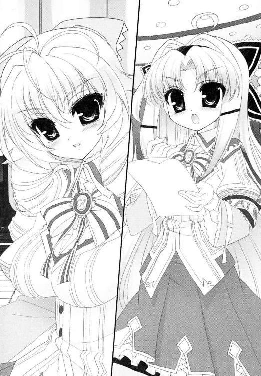
「コレ。使用時間は曖昧だし、人数は空欄だし、これじゃハンコは押せないよ」
「そこは慣例で問題ないはずですわ」
「悪しきカンレイってやつだよね。ボクは放っておきたくないんだよ」
典子の眉間に皺が寄る。堂々とした『得票数歴代トップ』の横紙破りに、新生トップが競り負けそうになるが、顔は下げなかった。
「使用者の人数なら、ここにいるだけで全部ですわ。どうしてもお知りになりたいなら、ご自分で指折り数えてご記入なさって。時間はあたくしの演奏が終わるまで。よろしかったら聴いていかれて。サティはお好き？」
「あんまり」
「だと思いましたわ。サティに必要なのは粋とエスプリですもの」
曇りなく微笑んだ。言外に『無粋の朴念仁。さっさと帰れ』と突き返したようなものである。返された舞姫は、多少面食らったようだった。
蜜もまた、フーフー頰を膨らませ、さっさと帰りなさいよ無粋者とガンを付けるが、その舞姫が小さく呟くのが聞こえた。
「......猫がいる」
なんですって？
「蝶間林さんも、ちょっとはトップらしくなれたって感じかな。この件はまた後で話そう、良かったらだけど」
きっちりと、本来の目的である書類の空白を埋めて帰ったあたりが憎らしい。
行こう久我原と、傍らの腹心に呼びかけて、向こうはグループごとホールを去っていく。
ドアが閉まった瞬間、蜜たちは椅子から立ち上がってしまった。
「なんなんですのあれは、藪から棒に！」
「本当に無粋な人たちね！」
「塩、塩はなくて!?」
「お砂糖ならここにお茶会用のが！」
けっきょく、甘い砂糖で生徒会の不作法は浄化できまいという結論に達し、演奏会の後で食べるはずだったクッキーをその場で食べることになった。上品な甘さの焼き菓子は、蜜の好みからは外れていたが、この時ばかりは一緒に食べる側に回りたかったのだ。
（生徒会......あれが淡谷舞姫なのね......）
間近で見たのは初めてだったが、いかにも石頭で冷血そうだ。みな生徒会の文句を止められない。矢面に立って蜜たちを守ってくれた典子は、まさに蜜たちの英雄だ。
「立派だったわ、胡蝶の宮」
ねぎらいの言葉をかけられて、典子は控えめに目を細める。でも何故だろう。彼女は最後まで人の話にうなずきながらも、手元のクッキーを口には入れなかったのだ。胸のつかえが取れないとばかりに、隠れてうつむいていた──。
＊＊＊
「戸締まりはあたくしがいたしますから。みなさんは先にお帰りなさい」
コンサートが終わると、典子は先に下校するよううながした。
冬は日が落ちるのが早い。林の中の学院はぐっと気温が下がりだす。ソロリティ舎の外で待っていると、典子が鍵を持ってソロリティ舎を出てくるのが見えた。ドアの鍵穴に真鍮の鍵を差し込んでいる。合間にぐすりと、鼻をすするような音がした。蜜は思い切って茂みから飛び出した。
「あの、お姉さま！」
「きゃあ──っ！」
本気の悲鳴を上げさせてしまった。
「な、なに、蜜ですの!?」
「ご、ごめんなさいお姉さま。あの、蜜はお姉さまのことがしんふぁいで」
ああ、体がかじかんでうまく舌が動かない。かじかむ指で頰を叩いて、なんとか顔を上げて典子を見上げる。
二人の間に、白い息が上がっていった。
「ほめんなはい......」
「......帰りましょう」
典子が苦笑まじりにそう言った。
最後のスクールバスが、あと十分もすれば発車するはずだった。
蜜の隣を歩く典子は、やはり目に見えて口数が減っていた。それこそコンサートが始まる前よりも沈んでいる。
いくら気を揉んでもダメだった。やっぱり、知らないふりなんてできない。
「ねえ、お姉さま。さっきからどうかされたんですか？ 生徒会への態度なら、みんな本当にご立派だったと──」
「やめて。あなたまでそんなこと言わないで！」
言葉で頰を叩かれたような気がした。
星の出始めた夕闇の下、外灯に照らされた典子の瞳には、涙がにじんでいた。ずっと耐え続けていたものが決壊したように、ぽろりと一粒こぼれ落ちる。蜜はその一粒に息を呑むしかなかった。
「......あたくし、あの人のことが本当に苦手。生徒会の淡谷さん......ええそうよ無意識なのよね。事情なんてなにも知らないはずなのに。どうしてあんなに人の弱みを突くセリフがうまいのかしら」
「弱み？」
「よりにもよって、今のあたくしに『トップらしくなった』って。そんなの噓だってあたくしが一番よくわかってるのに！」
必死に唇を引き結び、それ以上泣き出さないようにするのが精一杯のようだった。
──まさかそんなに『マドレーヌ』のことを気にしていたの？
呆然としてしまった自分は、本当には青美の人間になりきれていないのかもしれない。
声をころして涙を流す典子は、蜜の予想を超えていて、そして、だからこそ近づきたいと胸を締め付けさせるのだ。
「お姉さま」
いつでも、この人の心に近づきたい。触れてみたい。そうすれば見えるものがあるような気がするから。
蜜は手元の鞄を、胸の前で抱きしめる。
本当は典子自身を抱いてあげたかったが、それはきっとおこがましいことだ。
「蜜はですね......去年の今頃はアメリカにいて、青美女学院に来ても驚くことばっかりだったんです。校則も校風も、どうしてみんな真面目に守っているのかわからなかったり。でも、お姉さまたちのお話を聞いたり、一緒にお茶を飲んだりしてると、ちゃんと意味があるんだってわかるんです。百二十年以上もある歴史の中で、思いが重なって、どうか良くなるように良くなるようにって、誰もが願って託してきたものばかりなんです。空の星と一緒です」
今ここに見えるオリオンは、はるか昔の爆発の結果だと聞いている。砂粒のように小さな光点でも、距離があり理由があり、全てはしかるべくしてそこに在るのだ。
へこたれることも多いけど、それでもそんな風に、最近は思えるようになったのだ。
「お姉さまもお星様です。お姉さまがトップになることは、先代のトップのお願いです。その先代も先代のお願いです。間違いなんてありません。なるべくしてなってるんです。ほら」
まぶしいものでも見るように、典子を見つめて目を細めてみると、典子が頰を赤らめた。ふいと顔を横に向けられてしまう。
「こっち、見てくださいよ。ぴかぴかしてます」
「いやよ」
消え入るような拒絶の言葉。むきになって回り込み、典子がまた逃げ、二人そろってくるくると並木道の間を逃げ惑って、最後は肩で息をしながら「蜜のばか」と怒られてしまった。
「あたくし、真面目に悩んでいるのよ」
「わかってますけど！」
でも、どうにかして元気になってほしいのだ。
ソロリティを探す鍵も、自分では見つけることができそうにない。
「......だって、蜜じゃ思いつくのなんて、お菓子と犬の名前ぐらいしかないんです。どうしたらお役にたてるかわかりません......」
「......犬？」
「そうですよ。ニューヨークにいた時、アパートの下の階でマダムが飼ってたんです。小さなきつね色のプードルでした」
ああもう、自分まで泣きたくなってくるではないか。
手の甲で自分の涙をぐしぐしぬぐっていると、典子のため息が降ってきた。
「ごめんなさい。少し、頭を冷やして帰りますわね」
「あ、お姉さま！ バスが！」
「あなたが乗りなさい。あたくし一人で帰ります」
来るというのに、彼女はバス停を素通りして歩いていくのだ。
まさかこのまま駅まで歩いていくのか？ いくら思い直すよう叫んでも、巻き毛の背中は孤高のままで、決して戻らなかった。
（お、お、お姉さま──っ！）
＊＊＊
これもみんな。これもみんな。
「むかつくわ生徒会っ！ 淡谷舞姫──！」
ベッドのマットレスを壁にたてかけ、蜜は思うさま蹴りを放った。
「お嬢様、なにを暴れてらっしゃるんですか！」
「ばかーっ！」
一つ蹴っては姉のため。彼女を追いつめるタイミングの悪いすべてのものに向かって。蹴る！ 蹴る！ 蹴ってやる！
一階にいる清野に抗議されたと同時に、たてかけていたマットレスが蜜に向かって倒れてきた。蜜は倒れたマットの下で、じたじたと手足をばたつかせる。そしてそれも耐えきれずに突っ伏した。
（......ばかはこっちの方よ......）
何かしてあげたいと思うのに、できることが見つからない。本当はマドレーヌ探しなんて無視すればいいのにと言ってあげたかったが、きっと典子は聞き入れてはくれないだろう。
誰よりも誇り高いお姉さま。負けるのが嫌いで、折れるのが嫌いで。それが蝶間林典子なのだから。
そんな人だからあこがれるのだから。
「困ったひと......」
そして蜜は役立たずのひと......。
「お嬢様」
「なあに、清野......」
蜜はしばらく動けそうにないわ。役立たずだから。
マットレスの下でたそがれていたら、清野がドアから顔を出していた。
「お取り込み中のところすみませんが、お電話です」
「電話？」
「蝶間林典子さまから」
蜜はマットレスごと跳ね起きた。
「──ここ、ここよ蜜！」
言われた通りタクシーで学院に乗りつけると、校門の前に典子が立っていた。
蜜は彼女の前に駆け寄り、あらためてその顔を見つめた。外灯の明かりに、青美女学院の制服とコートが浮かびあがっていた。巻き毛に縁取られた白磁の頰は、夕方に別れた時よりも血色が良く見える。こうなると、電話口で言っていたセリフは、本当に本当なのかもしれない。
「ごめんなさいね。どうしても早く確かめたくて」
「あの、お姉さま。本当なんですか？ マドレーヌの秘密がわかったって──」
「まずは中に入りましょう。ずっとここにいるわけにもいかないわ」
「わあやっぱりっ」
外聞もなくはしゃぎそうになる蜜の肩を叩き、典子は校門に近づいた。
当然だが、夜間の門は施錠されている。
「まさかお姉さま──」
「決まっていてよ。乗り越えるの」
蜜は口を開けた。その間も典子は、手持ちの鞄を門の向こうに投げ込み、足さばきが良くなるよう、コートの前ボタンを開けている。
「ついていらっしゃい」
「お姉さま！」
校門の錠前に、マリリン・モンローを思わせるセクシーなおみ足が引っかかる。そのまま肉付きの良い体が引き上げられ、がっしゃがっしゃと門を上っていく。最後はスカートを引っかけないよう、慎重にして華麗なる着地。
（し、白だったわ）
なんだか見てはいけないものを見てしまった気がして、蜜は顔を覆いながらもどきどきしてしまう。
「何をしているの？ あなたも来るのよ」
これは一生、胸の中にしまっておこう。
けっきょく。マリリン・モンローにはほど遠いサリーちゃん足を披露しつつ、蜜も学院の中へと潜入した。
「問題のヒントは、あなたの言葉の中にあったのよ」
「蜜のですか？」
「あたくし、マドレーヌと言われてお菓子のマドレーヌばかり考えていたの。製菓関連の理事に縁がある方の集まりかしらとか。お祖父様にうかがって、関係のありそうな企業の社員名簿まで取り寄せましたのよ。まったくの徒労でしたけど」
そう言って、典子が鞄の中から見せたのは『青美女学院一二○年史』である。それは大判のハードカバーで、数年前に発行された学校史だ。
家に帰った彼女は、ずっとこれをめくっていたという。
「確かにあたくしは、ソロリティのトップにふさわしくなかったかもしれないわね。既成概念から抜けられなくて、一度それに縛られると他の発想に目がいかないの。見方を変えれば、追いかけるヒントは沢山あったのに」
「ソロリティのことが載っていたんですか？」
「違うの。マドレーヌはソロリティの名前なんかじゃないの」
「え？」
典子は闇の中で微笑する。
「マドレーヌは菓子の名前である前に、れっきとした人名なのよ。彼女は今もこの学院にいるわ。何十年間もかわらずに、あたくしたちのことを見守っている。さあ蜜。あたくしたち、これから彼女のところにご挨拶に行くのよ」
いったいどういうことだ──？
＊＊＊
こんにちは。日本のおともだち。仲良くしてね。
彼女たちが郵便船『天洋丸』に乗って日本にやってきたのは、昭和がはじまったばかりの頃だと言われている。
「蜜は、青い目の人形ってわかる？」
「なんとなく......おおまかな事情ぐらいは......」
蜜がアメリカにいた時、父や家庭教師から教えてもらったことがある。たしか二つの国の、玩具の親善大使のことだ。
日本とアメリカの間で政治的緊張が高まる中、二国間の絆を取り持とうと、アメリカの宣教師、シドニー・ギューリック博士が提唱した親善計画。それは互いの国の人形を、現地の子供たちに向けて贈り合うことだった。
アメリカから日本の小学校や幼稚園に向けて贈られた人形は、全部で一万体以上にのぼったという。綺麗なドレスに夢見る青い瞳。なんて可愛い子たちだろう。まだ見ぬ西洋をそのまま表現したようなお人形に、日本の子供たちは大喜びしたそうだ。名前を付け、学校の玄関や校長室の前に、それはそれは大切に飾られたと言われている。
日本からは答礼人形として市松人形が贈られ、二国間の交流事業は戦前まで続いた。
二つの国が、互いに銃を向け殺し合うことさえなければ、今でも続いていたかもしれない。
「宮城のベティ・ジェーン。山口のメアリー。青い目の人形たちは日本のあちこちの学校に配られたそうよ。今でも残っているのはとても少なくて、三百体ぐらいだって聞いているけど」
「もったいないですね......」
「仕方がないわ。戦争があったんですもの」
典子が寂しげに微笑んだ。
親善大使のはずの人形は、第二次大戦に入って一転、敵国の人形として処分を命じられたらしい。それでも愛着のある人形を処分することが忍びなくて、こっそり隠した関係者もいた。いま現存している青い目の人形たちは、みなそうした過酷な運命を乗り越えて光の下に戻ってきたのだ。
「この学校史に、手記の抜粋があったわ。『《Ｍ》を壊すことは、生徒を悲しませ、米国の精神を規範とした紀和子様の意志をくじくものである。国家の命に背く罪であることを知りつつ、彼女を隠し通そうと思う。いつかまた、彼女に縁の菓子をつまみ、たわいもない雑談ができる日が来ることを信じて』......当時の校長先生のお言葉よ。教職員や理事の疎開先にまで持ち出したんですって。燃やされないように壊されないように、ひっそり隠して、終戦と同時に学校へ戻したの」
「じゃあ、マドレーヌはソロリティの名前じゃなくて──」
「たぶん、この記述にある《Ｍ》のことだと思うの。うちの初等科に贈られた青い目の人形。今はこの中等科のキャンパスの中にあるの」
ここに。この場所に。月と星が輝く中等科キャンパスの、まさに中心部に立って典子は言ったのだ。
「......今は、どこに？」
「だからこれから行くわ。蜜。あなたも見たことがあるはずよ。絶対に」
典子が足を運んだのは、いつもお茶を飲みにいくカフェテリアだった。
当然のように施錠された施設の中に、どうやって忍び込むかと言えば、彼女は髪を留めるヘアピンを取り出してきたのだ。旧式のシリンダー錠にそれを突っ込んで、がりがりと回しはじめる。
「お、お姉さま。いつの間にそんな技を......」
「揺らさないで蜜。ちゃんと照らして」
「ご、ごめんなさい」
ペンライトで鍵穴を照らす役をおおせつかり、蜜ははらはらしながらそれを手伝うのだ。開くまで五分とかからなかった。
「去年の謝恩会で覚えた隠し芸よ。蜜も何か考えなさいね。三月までよ」
本当にロワイヤルメンバーでいるのは大変だ。
照明の落ちたカフェテリア内に、ペンライトの光が入った。見知った木の床。見知ったテーブル。今は椅子が上に乗っているようだ。そして、見知ったアンティークの飾り棚が一つ。
「お姉さま......」
「ええ。おかしいわよね。いつもお茶を飲みに来るたび見ていたのに。ただのインテリアだとしか思っていなかったのよ」
蜜もだ。同じだ。
自分の心臓が、とくとくと鳴りはじめていた。青美女学院も人が悪い。こんなに大事なお人形、もっと大仰な資料館の中にでもしまっておけばいいのに。
いつも身近にいたから、隣にいたから、当たり前の風景としか思わなかった。
昔からいたお友達のように。
「こんにちは、マドレーヌ。こんばんはかしら」
典子が、飾り棚のガラス越しに呼びかける。一緒に飾られたシュタイフのぬいぐるみや、クリスタルの白鳥に混じって、ミス・マドレーヌは瞳を開いている。
夢見るような青い硝子の瞳。やわらかそうなビスクの肌が愛らしい。金色の巻き毛と、木蓮の花びらを思わせる白いドレス。ガラス戸を開け、後ろを向かせてやれば、色あせた『Madeleine』のネームタグが、変わらぬ姿で付いていた。
「壊せって言われて、壊せるわけないですよね」
「本当よ。こんなに可愛らしいんですもの」
うなずく典子の横顔に、涙が光っていることは内緒にしようと思った。
人形を制服の膝に乗せ、あらためて自己紹介をしているお姉さまの姿は、ずっと大事に取っておきたくなるほど貴重な──特別なものに見えたのだ。
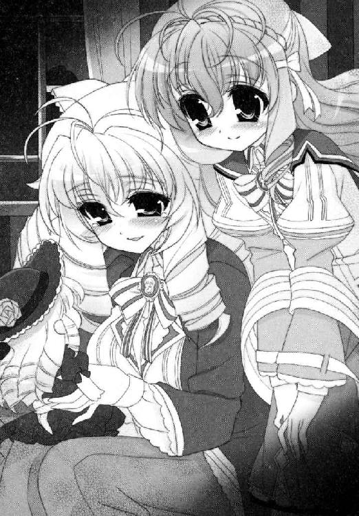
カフェテリアを出て、校門へ戻る道すがら、蜜はずっと考えていた。
「お姉さま。お姉さまはやっぱり、素晴らしいソロリティトップになると思います」
わかるだろうか。マドレーヌにたどりついただけではない。こうして誰に言われなくともあきらめない負けん気の強さも、今の自分を不安に思う向上心も、きっとこの先で花開く礎になるだろう。
「けっこう見栄っぱりだったりもしますしね」
「まあ。あなた何か言って？」
典子は眉を釣り上げるが、本当に怒っているわけではないのだろう。
それぐらいのことは、蜜でもわかるようになった。
「そう言うなら、蜜。あたくしもあなたに関して気づいたことがありましてよ」
「なんですか？」
「あなたはあたくしに必要な人間」
蜜は、思わず足を止めてしまった。
自分の呼吸も。
典子が、三歩先を進んで振り返る。
月明かりに浮かぶのは、最上で最高の微笑だった。
「どうかこの先も、あたくしのことを助けてね」
蜜は、その場で何度もうなずいてしまった。
「もっ、もちろんです！ もちろんです！ 光栄ですお姉さま！」
「そう？ それなら今度の早朝朗読会、あなたも読み手で参加してね。ウィリアム・ブレイクかワーズワースがいいかしら」
「もちろ──」
ＯＫですお姉さまと叫ぼうとして、はたと気づいた。
「あれって、上級生のみの参加のはずじゃ」
「だってあなた、へたな上級生よりも上手じゃない」
「でも慣例が」
「いいこと、蜜。淡谷舞姫さんのように、なんでもかんでも続けてきたことを打ち壊すのは感心できないけど、発展的な改革は必要なことよね」
「............」
「あたくしはローズロワイヤルのトップ、蝶間林典子でしてよ。これぐらいの特例は許されてしかるべしですわ」
この上なく尊大に胸を張られてしまうので、蜜は言い返すこともできないのだ。
「............はい。わかりましたあ......」
「楽しみだこと」
歩き出す典子の隣に並ぶため、蜜は足を速めた。
一直線に並んで、そのまま同じ速度で校門に行こうと、右手と左手を軽くつなぎあった。
そうして、またあわただしい日常がはじまるのだ。
──さて。ワーズワースね、ワーズワース。もしくはウィリアム・ブレイク。
学校から帰ると、蜜は市内の中央図書館に足を運んだ。典子に言われた通りに、朗読会で読む詩のネタを仕入れにきたのだ。
思いつくかぎりの詩集を借り受け、鞄の中はずっしりと重い。
（......お姉さまを支えるとか簡単に言っちゃったけど、けっこう大変ね......）
蜜、早起き苦手なのに。
少しだけよろよろとした気分で書架の間を歩いていると、目の前で重い音が響いた。
「わ、やば......っ」
なにやら学ラン姿の少年が、棚から本を取り落としてあたふたしている。腕に持ちきれないほどの本を抱えて、さらにぎゅう詰めの棚から本を抜こうとしたのだ。一緒に抜けてしまった隣の蔵書が、床へ真っ逆様とばかりに落ちてしまったのである。
少年は落とした本を拾いたくても、腕の本が邪魔で屈めない。まずは本をどこかに置けばいいのに、簡単なことに気づけないのだ。
「えっと、ど、どうしよう......落ち着け、落ち着け僕......」
焦っている時というのは、みんなそうなるものなのかしら。なんとなく自分を見ているような気分になって、蜜は少年に近づいた。本を拾って元の位置に戻してあげて、そのまま行きすぎる。
（男の人でも、お花の育て方なんて読むのね）
かなり専門的な園芸書だった気がする。
いったいどんな顔だったかしら。気にならないこともなかったが、わざわざお勉強のお邪魔をするのも悪かったので、止まらず歩き続けた。
いいお花が咲くといいですね。お兄さん。
＊＊＊
一方。蜜に本を拾ってもらった少年は、バケツの水をかぶったような衝撃に震えていた。
銀色の自転車を全力でこぎ、人力ニュータウンの自宅に帰りつくと、ドアを開けて二階の子供部屋に駆け込んだ。
「ま、まままま、舞ちゃ──ん！」
「......なんなの、ユキグニ」
「すごっ、すごすご、すごっ」
「だからなに」
「すごい可愛い子がいたんだ！」
「図書館いってたんじゃないの？」
「だからその図書館で可愛い子が」
少年の名前は、淡谷雪国。来年は受験生。ごく平凡なクラス委員。
花が好きで、毎日が退屈で。
これがはじめての接近だった。
その後の話♯６
すべて過ぎ去ってしまえば、夢だったようにも思う。
あの日々は確かに蜜の心を打ち砕き、消えない傷を作りはした。なにかの拍子に傷がうずき、眠れない夜もいくつか過ごした。でも──終わってしまえばアルバムの一ページだ。そう言って笑い飛ばせとアドバイスしてきた人々の言葉が、最近ようやくわかるようになってきたかもしれない。
ふいに背後でドアが開いた。部屋でシャワーを浴びたばかりのルームメイトが、濡れ髪のまま顔を出す。
「ミツ。レッスン早いんじゃないの？ 遅れるよ？」
「──はい。いま行きます！」
開いていた日記帳を閉じ、机から離れる。
空舟市を離れてどれぐらいが過ぎただろう。ここはあの街と空の色が違う。
浴びるような音楽漬けの生活も、ルームメイトのいる寮生活もだいぶ慣れた。得意料理はカレーライス。メニュー通りに作ればなんとかなるから。苦手なものはアイロン。不器用でそそっかしいから。
胡蝶の宮からは、たまに近況の手紙が送られてくる。相変わらず素敵な人のようだ。課題が多すぎて返事が滞りがちになることが、最近は少し心苦しい。
──お姉さま。後悔はしていません。
──互いに信じて選んだ道です。彼も納得しているはずです。
──願わくば、彼が過ごす場所に一つでも多くの笑顔がありますように。
──一緒に過ごした時間が幸福だったことは、噓ではなく本当だと思うから。
──どうか元気で。幸せでいて。
──それが一駿河蜜の願いです。
あとがき
初詣でお賽銭を投げたものの、賽銭箱に命中しないで飛んでいった五円玉のことを考えると胃が痛いです。竹岡です。
私のご縁（五円）は一メートル弱の距離すら移動できなかった模様です。
私のぶんまでみなさん強く生きてください......（しおらしく書くことで徳を上げる算段の模様。こすいです）。
ここから先はネタバレになりますので、本文を未読の方はご注意ください。
はいでは、今回は「ドラゴンマガジン」に掲載された短編＋書き下ろし短編＋後日談の書き下ろしショートショートという合わせ技となりました。時系列としては、人力リバーフェスタが終わって二学期が開始（四巻終了直後）～青美生徒会選挙に入る手前まで（七巻直前）という感じになっています。九月の上旬から十一月の上旬にかけてのお話が中心ですね。
【ギブミープレゼント！】
舞姫サイド。鳥子さん祭の回。
女の子同士の珍しい絡みの回となりました。ページの無駄遣いと言われようと、乙女の書くポエムに改行多めの真っ白文体は譲れません。部屋にむかし懐かしティーンズハート文庫を積み上げて、「書け！ 書くんだジョー！ お前ならできる！」と自己暗示をかけつつプリプリ乙女文体を模写ってみました。しょうじき疲れましたです。ふー。
【図書委員長、高天原りぼんの決断】
雪国サイド。高天原りぼんさん初登場の回。
竹岡はつい最近まで地域の図書館スタッフとして働いていたのですが、どの司書さんも穏やかな外見に反してキャラの濃い人ばかりで面白かったです。もちろんこんな風に鞭とボンテージで利用者を戒める司書さんなんていませんよ？
......ほんとですよ？ 大丈夫ですよ？ ルールさえ守っていれば安心安心！ 問題なし！
彼女が恋した相手が誰かは、六巻に詳しく書いてありますのでそちらもあらためて読むと楽しいかもしれません。
【戦慄の乙滅我！】
舞姫サイド。なぜか中二病炸裂の回。
ドラマガに載ったよう太さんのイラストが気合い入りすぎで吹き出した回でもあります。編集部でもその学園異能ぶりに「......これ、ＳＨ＠ＰＰＬＥのページだよね？」と確認が入ったとか入らなかったとか。
学生服と日本刀はロマンです。中身が芝目でもそれは変わらんのです。
【私たちの生徒会長】
雪国サイド。生徒会長は大変だよの回。
ひさしぶりに長船さんを書けて嬉しかった回でもあります。
ゲストキャラで出した先代生徒会長さんが妙に好評で、本編でも出せないかとリクエストが出たのですが、いまだ果たせず。なんだろう、タヌキ顔が良かったのか？ ちょい太めの足が良かったのか？
カリスマトップダウン型の舞姫と対極の、人の意見を良く聞く調整型の会長さんだったという設定でした。舞姫以上に庶民派だったのでしょうね。
【日曜日のナイチンゲール】
雪国サイド。風邪で看病はお約束だよねの回。
舞姫にバレエを習わせ、海の向こうから女の子ワンピを送りつけるお母さんってどんな人なんだろうと、考えに考えた末にこんな感じになりました。雪国は母親似なんだと納得した次第です。
作中のくまくまダンスに元ネタはあるのかと担当さんに聞かれましたが、まったくもって適当です。きっとノリノリで踊っていたところをホームビデオにおさめられ、十年後あたりに黒歴史として蘇って苦悩するに違いないのです（経験者は語る）。
【午後の紅茶とマドレーヌ】
書き下ろしで蜜サイドです。男子禁制なれそめ話第二弾。
蜜が中等科の一年生、胡蝶の宮が二年生の頃のお話です。
そういえばリアル舞姫ＶＳ胡蝶の宮って、本編でちゃんと書いたことがなかったなあと思って書きました。生徒会とローズロワイヤルは仲が悪い設定のはずなのに、弟君にかかるとみんな平和になってしまいますからね。
ここに出てくる生徒会と若光の君は、視点の違いで悪役風味になっているかもしれません。同じ人やグループを書く場合でも、スポットの当て方によって色々な立場を書き分けることができる点も、ＳＨ＠ＰＰＬＥを書く楽しみの一つだったりするのです。
今月はこの八巻に加えて、コミック版ＳＨ＠ＰＰＬＥの単行本も発売されます。これ言っちゃってもいいかなあと悩みますが、実はコミック版のエンディングと小説版のエンディングはまったく違います 。コミック版を見ながらもう一つの結末を想像するのも乙な物かもしれません。
そして右に左に入れ替わり続けてきたＳＨ＠ＰＰＬＥというシリーズも、次巻にて最終刊になります。
書くのが怖いような嬉しいような。でも大事に書いてあげようと思います。
どうか着地の足が届きますように。
春の間にお会いできると思います。
それでは、また。
竹岡葉月
ＳＨ＠ＰＰＬＥ
─しゃっぷる─
竹岡葉月

平成22年2月25日 発行
発行者 山下直久
発行所 株式会社富士見書房
〒102-8144 東京都千代田区富士見1-12-14
http://www.fujimishobo.co.jp/
(C)2010 Hazuki Takeoka, Youta/Fujimishobo